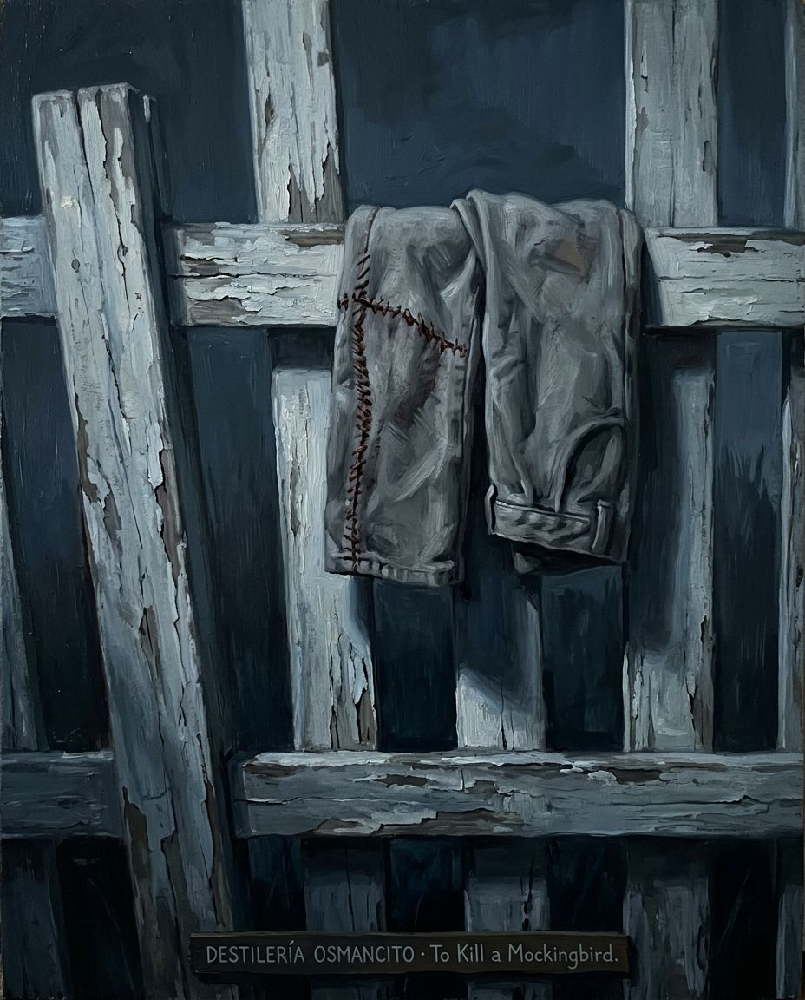
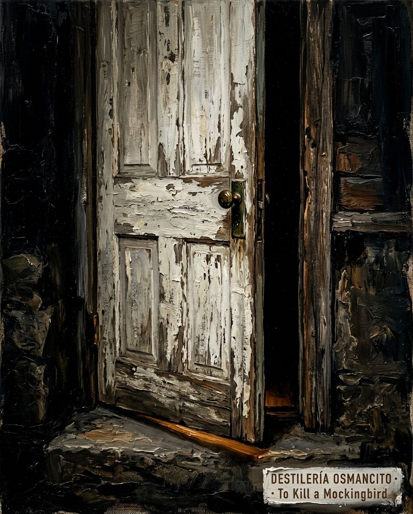

Cubierta de verano quieto

To Kill a Mockingbird no es una novela sobre el racismo. Es una novela sobre lo que le cuesta a un niño descubrir que el mundo adulto miente con perfecta coherencia. La voz de Scout tiene seis años cuando empieza a mirar y treinta cuando narra: esa distancia es la estructura real del libro, no la trama. Lo que sobrevive al juicio —que se pierde, que siempre iba a perderse— no es la justicia sino Atticus: su forma de moverse por el mundo como si la integridad fuera una postura corporal. El libro enseña una sola cosa con insistencia: que ver claro no es suficiente, y que vale la pena de todas formas.


Un libro que pesa menos de lo que promete y más de lo que uno recuerda.
Lo que tiene usted aquí es un libro que habla en la voz de una niña pero piensa con la inteligencia de quien ya lo ha perdido todo menos la lucidez. To Kill a Mockingbird llega encuadernado en anécdota —un verano, un juicio, un vecino fantasma— y guarda dentro algo que la anécdota no anuncia: la pregunta de qué le hacemos a alguien cuando lo vemos con claridad y seguimos eligiendo no verlo. Nombrar lo que es este libro no es contar lo que dice. Es otra operación.
Título — To Kill a Mockingbird Autor — Harper Lee Año — 1960 Género — Novela Extensión estimada — ~99.600 palabras / ~398 páginas (a 250 palabras/página) / 31 capítulos en 2 partes Idioma original — Inglés Palabra más frecuente con contenido — Atticus (863 ocurrencias). El corpus declara ser una historia de infancia narrada por Scout; la palabra que más aparece es el nombre del padre. El libro es sobre él tanto como sobre ella, y eso el corpus lo confiesa sin quererlo.
Maycomb, Alabama, años treinta. Jean Louise “Scout” Finch narra, desde la distancia adulta, los tres años de su infancia en que su padre Atticus defendió a Tom Robinson —un hombre negro acusado de violar a Mayella Ewell, mujer blanca— ante un jurado que nunca tuvo intención de absolverlo. Alrededor del juicio, y entrelazada con él, la obsesión de Scout, su hermano Jem y el amigo veraniego Dill por hacer salir a Boo Radley, el vecino fantasma encerrado en su casa durante décadas. El juicio se pierde. Tom muere en prisión intentando escapar. Boo Radley salva a los niños de Bob Ewell en la oscuridad y desaparece de vuelta a su casa para siempre.
Scout / Jean Louise Finch — narradora, seis años al inicio, voz doble (niña y adulta simultáneas). Jem Finch — hermano mayor de Scout, doce años al final; el que más tarda en aceptar la injusticia y el que más la sufre. Atticus Finch — abogado, padre, hombre que defiende lo indefendible porque no puede vivir de otra manera. Dill Harris / Charles Baker Harris — amigo veraniego, de Meridian, Mississippi; el que llora en el juicio cuando nadie más puede. Boo Radley / Arthur Radley — vecino encerrado durante décadas; presencia que da y nunca pide. Tom Robinson — acusado, inocente, muerto; el centro moral del libro que el libro casi no deja hablar. Bob Ewell — denunciante, mentiroso, violento; muere sobre su propio cuchillo. Mayella Ewell — la mujer que acusó a Tom; víctima de su padre, instrumento de su mentira. Calpurnia — cocinera negra de los Finch; la que vive en dos idiomas y dos mundos. Miss Maudie Atkinson — vecina; la que dice las verdades que Atticus no se permite decir en voz alta. Aunt Alexandra — hermana de Atticus; representa todo lo que Atticus no es, sin ser mala persona. Mrs. Henry Lafayette Dubose — anciana cruel; resulta ser la persona más valiente del vecindario. Mr. Heck Tate — sheriff; el que decide qué verdad oficial conviene al pueblo. Mr. Nathan Radley — hermano de Boo; el que tapa el hueco del árbol con cemento.
La novela ocurre en Maycomb, ciudad ficticia de Alabama, durante la Gran Depresión —aproximadamente entre 1933 y 1935. Está narrada en retrospectiva por Scout adulta, aunque la voz cambia de registro sin anunciarlo: a veces habla la niña, a veces habla quien ya sabe cómo termina.
El mundo de los niños (Parte Primera, capítulos 1–11)
El punto de partida son dos elementos que corren en paralelo: la Casa Radley y el caso Tom Robinson. La Casa Radley, tres puertas al sur de los Finch, lleva décadas clausurada. Arthur “Boo” Radley fue encerrado allí por su padre después de un incidente juvenil; más tarde le clavó unas tijeras a ese mismo padre y fue internado brevemente en el sótano del juzgado. Su hermano Nathan lo sustituye cuando el padre muere. El vecindario ha construido alrededor de Boo una mitología de miedo.
El primer verano, Dill Harris llega de Meridian y los tres niños —Scout, Jem, Dill— desarrollan una obsesión por hacer salir a Boo. Corren hasta la Casa Radley, intentan mirar por los postigos, representan la historia de los Radley como teatro de calle. Una noche se cuelan en el jardín trasero; alguien dispara. Jem pierde los pantalones huyendo por la valla y los recupera de madrugada: estaban doblados y cosidos, esperándolo. En el hueco de un roble junto a la propiedad Radley van apareciendo durante meses regalos: chicles, monedas antiguas, muñecos de jabón tallados con los rasgos de Jem y Scout, una medalla de ortografía, un reloj roto. Nathan Radley tapa el hueco con cemento. Jem llora sin hacer ruido.
El juicio de Tom Robinson se anuncia en el capítulo 9: Atticus ha sido designado por el juez Taylor para defenderlo, aunque acepta porque no podría hacer otra cosa. Cecil Jacobs anuncia en el patio del colegio que Atticus defiende a negros. Scout contiene los puños por primera vez. En Navidad, en Finch’s Landing, el primo Francis repite el insulto y Scout le rompe los dientes. Uncle Jack la castiga sin escucharla; Scout le explica después por qué estuvo mal, y Jack comprende. Esa noche Scout oye sin querer a Atticus decirle a su hermano que el caso está perdido antes de empezar —que la única evidencia es la palabra de un negro contra dos blancos— pero que tiene que intentarlo.
El invierno trae nieve por primera vez en décadas. Jem construye un muñeco de nieve en forma de Mr. Avery. Miss Maudie sonríe desde su porche. Esa noche su casa arde. Mientras los niños observan el incendio desde la valla de los Radley, alguien les echa una manta sobre los hombros: Boo, sin que lo vean.
El año siguiente, Mrs. Dubose —anciana cruel, de lengua de cuchillo— insulta a Atticus repetidamente. Jem destruye sus camelias en un arrebato. Como castigo, lee en voz alta para ella cada tarde durante un mes y una semana. Mrs. Dubose muere poco después. Atticus le explica a Jem que Mrs. Dubose era adicta a la morfina desde hacía años —el médico se la recetó como analgésico— y que decidió morir sin ella. Los ataques que los niños presenciaban eran abstinencia; el reloj de alarma marcaba cuánto aguantaba. Le deja a Jem una camelia perfecta en una caja de terciopelo. Atticus dice: era la persona más valiente que conocí. No un hombre con una pistola. Alguien que sabía que iba a perder y lo hizo de todas formas.
El mundo del juicio (Parte Segunda, capítulos 12–31)
Jem tiene doce años. Dill no viene ese verano —tiene un nuevo padre en Meridian. Atticus parte dos semanas a Montgomery. Calpurnia lleva a los niños a la Primera Compra, la iglesia metodista de color: una mujer llamada Lula los desafía en la puerta, la congregación los acoge, cantan por ecos porque nadie sabe leer. Los niños descubren que Calpurnia habla dos idiomas.
Aunt Alexandra llega a quedarse. Es la hermana de Atticus: firme, aristocrática, convencida de las jerarquías familiares. Quiere que Calpurnia deje la casa. Atticus se niega. Esa noche Dill aparece debajo de la cama de Scout: ha escapado de Meridian porque sus padres lo tratan bien pero no lo necesitan. Jem hace lo inesperado: avisa a Atticus.
La noche anterior al juicio, un grupo de hombres de Old Sarum llega a la cárcel del condado para tomarse a Tom Robinson. Atticus está sentado ante la puerta con una bombilla colgada de la ventana de la celda. Jem, Scout y Dill lo siguen sin que los vean. Scout irrumpe en el círculo. Habla con Mr. Cunningham de su hijo Walter, de la escuela, del entailment. Cunningham dispersa a los hombres. Desde el edificio del periódico enfrente, Mr. Underwood —que odia a los negros— tenía una escopeta apuntada a la multitud todo el tiempo.
El día del juicio todo Maycomb acude como a una feria. Los niños suben al balcón de color con Reverend Sykes. El sheriff Heck Tate testifica: encontró a Mayella golpeada, con el ojo derecho morado. No llamó a un médico. Atticus establece que el ojo derecho implica un golpe de alguien zurdo. Bob Ewell testifica después: fanfarrón, rojo de cuello, escribe su nombre ante el jurado y resulta ser zurdo. Mayella Ewell declara: Tom entró, la agarró, la golpeó, la violó. Atticus la interroga con cortesía que ella confunde con burla; va extrayendo el retrato de su vida —mayor de siete hermanos, sin madre, sin amigos, su padre bebe la paga del gobierno— hasta preguntar si fue Bob Ewell quien la golpeó. Mayella no responde. Tom Robinson declara de pie: tiene el brazo izquierdo doce pulgadas más corto que el derecho, terminado en una mano muerta —atrapado en una desmotadora de algodón siendo niño. No pudo haber golpeado el ojo derecho de Mayella con la mano izquierda. Cuenta cómo Mayella lo atrajo a la casa con el pretexto de una puerta rota, lo abrazó, lo besó, dijo que nunca había besado a un hombre adulto y que más valía hacerlo con un negro. Cuando Bob Ewell gritó desde la ventana, Tom salió corriendo porque sabía lo que significaba que lo encontraran en esa situación. Dill llora durante el contrainterrogatorio —no puede soportar la forma en que el fiscal le habla a Tom. Mr. Dolphus Raymond les explica afuera que finge estar borracho para darle al pueblo una razón que entender; vive con una mujer negra y tiene hijos mestizos, y eso el pueblo no lo tolera sin una coartada.
Atticus pronuncia el alegato final sin truenos. Se afloja el cuello de camisa por primera vez en su vida en público. Les dice al jurado que no hay evidencia médica de ningún crimen, que Tom Robinson es inocente, que los tribunales son el único lugar donde todos los hombres son creados iguales, y que deben hacer su deber. El jurado tarda horas. Veredicto: culpable.
Los negros del balcón se ponen de pie cuando Atticus sale. Scout no entiende por qué hasta que Reverend Sykes lo dice: “Su padre pasa.”
A la mañana siguiente la cocina está llena de comida que los vecinos negros dejaron antes del amanecer. Atticus llora. Miss Maudie dice: dimos un paso de bebé. Esa mañana Bob Ewell escupe a Atticus en la cara y le dice que tarde o temprano lo pagará.
Tom Robinson es enviado a la granja prisión de Enfield, setenta millas. Durante el recreo se lanza a la valla y trepa. Los guardias disparan diecisiete veces. Con los dos brazos buenos habría llegado. Atticus va con Calpurnia a decírselo a Helen, la mujer de Tom. Helen cae al suelo como si un gigante le hubiera pisado encima.
Pasan los meses. Bob Ewell pierde un empleo del WPA en días por vago. Intenta entrar a la casa del juez Taylor en la oscuridad. Persigue a Helen Robinson por la carretera susurrándole obscenidades; Mr. Link Deas lo frena. En clase de Actualidad, la maestra de Scout explica que Hitler persigue a los judíos y que eso está mal porque en América no se persigue a nadie. Scout recuerda haberla oído decir, bajando los escalones del juzgado el día del veredicto, que ya era hora de que alguien les diera una lección a los negros de Maycomb.
La noche de Halloween, Jem lleva a Scout al auditorio del instituto para una función escolar. Scout va disfrazada de jamón curado —un armazón de alambre de gallinero cubierto de arpillera pintada. Al volver a casa, en la oscuridad sin luna, alguien los sigue. Bajo el gran roble del patio del colegio, un hombre los ataca. Scout, atrapada dentro del disfraz de alambre, cae y rueda. Oye la pelea. Un crujido seco y Jem grita. Una tercera persona jala al atacante y lo tira al suelo. Alguien carga a Jem inconsciente hacia la casa de los Finch.
Jem tiene el brazo izquierdo roto, el codo torcido en dirección equivocada. Bob Ewell yace bajo el roble con un cuchillo de cocina clavado entre las costillas. Muerto.
En el cuarto de Jem, apoyado en la pared, hay un hombre que Scout no había identificado: manos blancas de nunca haber visto el sol, cara hundida, ojos casi incoloros. Sonríe con timidez. “Hey, Boo.”
Heck Tate y Atticus debaten en el porche. Atticus cree que fue Jem quien mató a Ewell y quiere que se investigue; no puede criar a sus hijos de una manera y vivir de otra. Tate insiste: Jem no tiene fuerza suficiente con el brazo roto en la oscuridad. Bob Ewell cayó sobre su propio cuchillo. Arrastrar a Arthur Radley al escrutinio público sería, dice Tate, como matar a un mockingbird. Atticus acepta. Le pregunta a Scout si puede entenderlo. Scout dice: sería como matar a un mockingbird, ¿verdad?
Scout lleva a Arthur a despedirse de Jem dormido. Arthur posa la mano sobre el pelo del niño con cuidado. Scout lo escolta hasta la Casa Radley. Él entra. Ella no vuelve a verlo.
De vuelta en la calle, Scout mira el vecindario desde el porche Radley por primera vez. Y desde ese ángulo, reconoce todo lo que Boo vio durante años: cada temporada, cada incidente, cada niño corriendo. Vuelve a casa. Atticus lee en voz alta a Scout hasta que se queda dormida. La acuesta y le arregla la manta. Scout murmura durmiendo: “Cuando por fin lo vieron, no había hecho nada de lo que decían. Era muy buena persona.” Atticus le arropa la barbilla: “La mayoría de la gente lo es, cuando por fin la ves.”
Este corpus llega frío por fuera y ardiendo por dentro. Su tono superficial es el de una novela de iniciación narrada con gracia y humor —los juegos de los niños, el verano, el pueblo excéntrico. Por debajo corre algo de temperatura mucho más alta: la conciencia de que el mundo está organizado para sostener una mentira y de que hay personas que lo saben y viven de todas formas en ese mundo con dignidad. La distancia entre ambas temperaturas es la estructura emocional del libro, y el lector la siente antes de poder nombrarla. To Kill a Mockingbird produce en quien lo recibe una especie de pena tranquila —no desesperación, sino la pena de quien ha visto algo hermoso durar exactamente lo que debe durar y no más.
Ver claro no salva. El libro construye meticulosamente la inocencia de Tom Robinson —evidencia física, lógica, testimonio— y luego permite que el jurado lo condene de todas formas. La claridad de Atticus, la claridad de la evidencia, la claridad del lector: nada de eso cambia el resultado. La pregunta que el libro trabaja sin formularla nunca es: ¿para qué ver claro si no salva?
La infancia como zona de visión pura que hay que perder. Scout y Dill ven lo que los adultos de Maycomb han aprendido a no ver. Dill llora en el juicio; los adultos no. El libro no celebra esa visión —la llora. Lo que Scout pierde no es la inocencia sino la capacidad de sorprenderse de la injusticia. El libro ocurre en el intervalo exacto entre las dos.
El reconocimiento como acto de doble filo. Ver a alguien —realmente verlo— aparece en el libro como el gesto más costoso y más necesario: Atticus ve a Tom, Tom ve a Mayella, Scout ve a Boo. Cada vez que alguien es visto con precisión en este libro, algo se rompe o algo se salva. El corpus pregunta en silencio a qué precio se sostiene la ceguera y a qué precio se abandona.
Maycomb, Alabama, años treinta. La ciudad es vieja y lenta, sin dinero, sofocantemente caliente. Las calles se embarran cuando llueve y se cuartean cuando no. La gente lleva allí varias generaciones y lo sabe: sabe quién es de dónde, sabe lo que se puede esperar de cada apellido, sabe qué código sostiene la vida en común y qué pasa cuando alguien lo rompe. To Kill a Mockingbird ocurre en ese lugar con esa precisión, y su primera gran hazaña es que ese lugar tan particular acaba siendo, sin esfuerzo, cualquier lugar donde un niño aprende que el mundo adulto miente con perfecta coherencia y sin culpa visible.
La narradora tiene seis años cuando empieza y treinta cuando cuenta. Esa distancia —entre quien vivió y quien narra— es la estructura real del libro, más que la trama. La voz de Scout adulta no corrige a Scout niña ni la condescende: la deja hablar, la escucha, y de vez en cuando introduce una frase que sólo puede venir de quien ya sabe cómo termina todo. Es una construcción técnica inusualmente precisa para una primera novela, y produce un efecto que pocos libros consiguen: el lector sabe más que la narradora niña y menos que la narradora adulta, y esa doble ignorancia lo mantiene en una tensión que no se resuelve hasta la última página.
El libro empieza con los niños. Jem, Scout, Dill: tres criaturas con demasiado tiempo libre en un verano que no termina, viviendo en la única calle del mundo que importa. Y en esa calle, tres puertas al sur de los Finch, la Casa Radley. El vecindario ha construido sobre ella una mitología de miedo: Arthur Radley —Boo— lleva décadas sin salir, su historia es una mezcla de crimen juvenil, castigo paternal y rumores que se han ido endureciendo hasta volverse verdad. Los niños la han absorbido entera. Representan la historia de los Radley como teatro de verano, envían notas con cañas de pescar, se cuelan de noche en el jardín trasero. Y mientras hacen todo eso, en el hueco de un roble junto a la valla aparecen regalos: chicles, monedas antiguas pulidas, dos muñecos de jabón tallados con los rasgos de Jem y Scout. Alguien los observa con cariño desde dentro. Cuando Nathan Radley tapa el hueco con cemento, Jem llora apoyado en el pilar del porche sin hacer ruido. No sabe por qué exactamente. El lector sí.
El primer gran momento de ruptura del libro llega sin anunciarse. Walter Cunningham, niño sin almuerzo de una familia que no devuelve lo que no puede pagar, come en la mesa de los Finch y vierte melaza sobre todo su plato. Scout protesta en voz alta. Calpurnia la lleva a la cocina. Lo que viene a continuación no es una reprensión doméstica: es una lección de dignidad humana entregada en susurros furiosos. “Don’t matter who they are, anybody sets foot in this house’s yo’ comp’ny.” La autoridad moral del libro no reside sólo en Atticus. Reside también en Calpurnia, que vive en dos idiomas —el de su comunidad y el de los Finch— con una inteligencia política que Scout tardará años en comprender. El libro la respeta lo suficiente para mostrarla entera.
El segundo momento de ruptura llega en el capítulo diez y deja a los niños sin palabras. Un sábado de febrero, Tim Johnson —el perro del pueblo— avanza tambaleándose por la calle vacía. Está rabioso. El sheriff Heck Tate entrega el rifle a Atticus: es un disparo que él no puede garantizar. Atticus —viejo, abogado, sin pistola desde hace treinta años— ajusta las gafas, las deja caer al suelo, apunta sin ellas y derriba al perro de un solo tiro entre los ojos. Miss Maudie les explica después lo que los niños no sabían: en sus tiempos, Ol’ One-Shot Finch era el mejor tirador del condado. Nunca habló de ello. Jem lo asimila despacio. “Atticus is a gentleman, just like me.” No es un descubrimiento sobre el disparo. Es un descubrimiento sobre qué tipo de hombre decide callar lo que sabe hacer. Miss Maudie lo formula con exactitud: “People in their right minds never take pride in their talents.”
La tercera ruptura es Mrs. Dubose. Vieja, cruel, de lengua de cuchillo, insulta a los niños cada vez que pasan. Insulta a Atticus. Jem, el día después de su cumpleaños, pierde el control y destruye todos sus arbustos de camelias. Como castigo lee en voz alta para ella cada tarde durante un mes y una semana: presencia los ataques que la dejan con los ojos en blanco y la boca trabajando sola. Mrs. Dubose muere poco después. Atticus le explica entonces lo que los ataques eran: síndrome de abstinencia de morfina. Ella había decidido morir sin la droga que el médico le recetó durante años. El reloj de alarma marcaba cuánto aguantaba; la lectura de Jem era la distracción que le permitía estirar los intervalos. Le deja a Jem, en una cajita de terciopelo, una sola camelia perfecta de nieve. Jem la arroja al fuego furioso y luego la rescata.
“I wanted you to see what real courage is, instead of getting the idea that courage is a man with a gun in his hand. It’s when you know you’re licked before you begin but you begin anyway and you see it through no matter what.”
El libro lleva tres capítulos diciendo lo mismo de distintas maneras: lo que parece valor desde fuera —el disparo, la pistola, la fuerza— no es el valor que importa aquí. Lo que importa es otra cosa. Una anciana de noventa y ocho libras que muere limpia. Un abogado que va a perder un caso y lo acepta antes de empezar. El libro construye su ética entera antes de llegar al juicio.
El verano del juicio empieza con una noche ante la cárcel. Atticus está sentado solo bajo una bombilla colgada de la ventana de la celda de Tom Robinson. Los niños lo siguen sin que los vea. Llegan cuatro coches desde la carretera de Meridian: hombres del Old Sarum que quieren a Tom antes de que llegue el juicio. Atticus no se mueve. Scout irrumpe en el círculo. Lo que hace a continuación es el momento más extraño y más perfecto del libro: empieza a hablarle a Mr. Cunningham de su hijo Walter, de la escuela, de los problemas de entailment que Atticus le está ayudando a resolver. No hay cálculo. No hay estrategia. Sólo una niña de ocho años hablando de lo que sabe con la persona que tiene delante, porque Atticus le enseñó que lo educado es interesarse por los asuntos del otro.
Mr. Cunningham la escucha. Se arrodilla a su altura. Le dice que le dará recuerdos a Walter. Luego se levanta y dispersa a los hombres. Los coches se van. En silencio, desde la oscuridad de la ventana de arriba, la voz suave de Tom Robinson: “They gone?” Y desde el edificio del periódico enfrente, Mr. Underwood —que por rumor desprecia a los negros— lleva toda la noche con una escopeta apuntada a la calle. Lo doméstico deshace lo violento. La infancia desactiva el linchamiento. El libro lo anota sin subrayarlo.
El juicio es la parte más conocida y la más trabajada. Lee construye el caso con precisión de relojero: la evidencia física, los testimonios, los contrainterrogatorios. El ojo derecho de Mayella indica un golpe de alguien zurdo. Bob Ewell firma su nombre ante el jurado y resulta ser zurdo. Tom Robinson se pone de pie y el brazo izquierdo cae doce pulgadas más que el derecho, terminado en una mano muerta. La lógica es impecable. El veredicto está decidido antes de empezar.
Tom declara. Cuenta cómo Mayella lo llamaba a hacer trabajos sin cobrar porque le daba lástima verla sola. El fiscal lo machaca en el contrainterrogatorio. Cuando Tom dice que sentía lástima por ella, el fiscal lo interrumpe con escándalo: “You felt sorry for her?” El jurado lo escucha. Un negro que siente lástima por una mujer blanca: en Maycomb, en 1935, eso es suficiente. Tom no violó a nadie. Intentó ser amable con alguien que no tenía a nadie que lo fuera. El libro ha construido durante capítulos el retrato de Mayella: la mayor de siete hermanos, madre muerta, padre que bebe, sin amigos, viviendo entre coles y basura. Tom Robinson era probablemente la única persona que fue amable con ella. Y ella lo señaló a él.
Dill llora durante el contrainterrogatorio. Scout lo saca afuera. Dill explica: no puede soportar la manera en que ese hombre le habla a Tom. Mr. Dolphus Raymond los encuentra afuera, les ofrece un sorbo de su saco de papel —sólo Coca-Cola. Les dice que finge estar borracho para darle al pueblo una razón que entender: vive con una mujer negra y tiene hijos mestizos, y eso el pueblo no lo tolera sin una coartada. Sobre Dill: “Things haven’t caught up with that one’s instinct yet. Let him get a little older and he won’t get sick and cry.” Es la formulación más fría y más precisa de lo que el libro trata: la infancia como el único estado en que todavía se puede ver la injusticia y llorar. Lo que se pierde al crecer no es la inocencia. Es la capacidad de indignarse.
El alegato de Atticus es uno de los grandes discursos de la literatura norteamericana y uno de los más sobrios. No hay truenos. Se afloja el cuello de camisa —la primera vez en público— y suda. No presenta nueva evidencia: recapitula lo que ya está visto. Les dice al jurado que no hay prueba médica de ningún crimen, que Tom Robinson es inocente, que Mayella lo acusó para deshacerse de la evidencia de su propio deseo. Y luego: “Our courts are the great levelers, and in our courts all men are created equal.” No es un idealista, dice. Es un hombre que cree en esa institución porque es la única que existe. “In the name of God, do your duty.” Y en voz más baja, casi para sí mismo: “In the name of God, believe him.”
El jurado tarda horas. Cuando regresa, ninguno de ellos mira a Tom Robinson. Una jury nunca mira al acusado que acaba de condenar. “Guilty… guilty… guilty… guilty…” Jem tiene las manos blancas de apretar la balaustrada. Cada veredicto es una puñalada entre sus hombros.
Y entonces: los negros del balcón se ponen de pie cuando Atticus sale. Reverend Sykes en voz baja: “Miss Jean Louise, stand up. Your father’s passin’.”
Lo que viene después del veredicto tiene la temperatura particular de lo que ya no tiene remedio. Tom Robinson muere en la granja prisión de Enfield intentando trepar una valla: diecisiete balazos. Con los dos brazos buenos habría llegado. Helen, su mujer, cae al suelo cuando Atticus y Calpurnia van a decírselo —“like a giant with a big foot just came along and stepped on her.” En Maycomb, la noticia dura dos días. Típico de un negro echarse a correr.
El capítulo veinticuatro contiene el momento más preciso del libro sobre cómo funciona la hipocresía de un pueblo. Las señoras del Missionary Circle beben café en el salón de los Finch y comentan el sufrimiento de los Mruna en África —a quienes J. Grimes Everett intenta convertir— mientras se quejan de que los negros locales están “dissatisfied” desde el juicio. Mrs. Merriweather no ve la contradicción porque no la hay para ella: los negros de allá son almas que salvar, los negros de acá son servicio doméstico que funciona mal. Miss Maudie la interrumpe con una sola frase: “His food doesn’t stick going down, does it?” Dos líneas apretadas en las comisuras de su boca. No dice nada más.
Atticus llega con la cara blanca y el sombrero en la mano. Tom está muerto. En la cocina, Aunt Alexandra —que durante todo el libro ha representado todo lo que Atticus no es— se quiebra: “What else do they want from him, Maudie, what else?” Miss Maudie responde: “We trust him to do right. It’s that simple.” Luego se ponen de pie las dos y vuelven al salón a servir café y pastas. Scout las mira: “If Aunty could be a lady at a time like this, so could I.” El libro le está enseñando cómo se aguanta el peso del mundo sin derrumbarse delante de los que no lo merecen.
La noche de Halloween. Un hombre en la oscuridad bajo el roble. El alambre del disfraz de Scout le salva la vida —el cuchillo deja una marca en el gallinero pintado. Jem tiene el brazo roto. Bob Ewell yace muerto. Y en el cuarto de Jem, apoyado en la pared, hay un hombre con manos blancas de nunca haber visto el sol, cara hundida, ojos casi incoloros. Sonríe con timidez, casi disculpándose.
“Hey, Boo.”
“Mr. Arthur, honey,” corrige Atticus en voz baja.
En el porche, Atticus y Heck Tate debaten durante largo rato. Atticus quiere que se investigue: no puede criar a sus hijos de una manera y vivir de otra. “Before Jem looks at anyone else he looks at me, and I’ve tried to live so I can look squarely back at him.” Tate insiste: Bob Ewell cayó sobre su propio cuchillo. Arrastrar a Arthur Radley al mundo público sería un pecado. “It’s like killing a mockingbird.” Atticus acepta. Le pregunta a Scout si puede entenderlo. Scout dice: “It’d be sort of like shootin’ a mockingbird, wouldn’t it?” Atticus le entierra la cara en el pelo. Antes de entrar a la casa, se detiene ante Arthur Radley. “Thank you for my children, Arthur.”
Scout lleva a Arthur a despedirse de Jem dormido. Arthur posa la mano sobre el pelo del niño con cuidado. Scout lo escolta hasta la Casa Radley. Él entra. Ella no vuelve a verlo. De pie ante la casa por primera vez desde ese lado, Scout mira el vecindario desde el ángulo de Boo: su propia casa, las demás casas, todos los años que él lleva mirándolos.
Vuelve a casa. Atticus lee en voz alta hasta que se queda dormida. La acuesta. Ella murmura durmiendo: “He was real nice.” Atticus le arropa la barbilla: “Most people are, Scout, when you finally see them.”
El libro termina como empezó: con la voz de alguien que mira hacia atrás desde la otra orilla y sabe que lo más importante no fue el juicio ni el veredicto sino lo que ocurrió en los márgenes, donde la gente se muestra entera: un hombre tallando muñecos de jabón para dos niños que no saben que los están recibiendo. Una anciana muriendo limpia. Una niña hablando de entailments ante una turba. Atticus sentado solo bajo una bombilla, esperando.
El libro dice que la mayoría de la gente es buena cuando por fin la ves. No dice que sea fácil llegar a verla.
El libro abre en el pasado, en voz de una narradora adulta llamada Jean Louise Finch —a quien todos llaman Scout— que reconstruye los veranos que condujeron al accidente que le dejó el brazo deforme a su hermano Jem. El origen del accidente remonta a una disputa: Scout culpa a los Ewell, Jem dice que todo empezó el verano que llegó Dill y propuso hacer salir a Boo Radley.
La narración establece el contexto de la familia Finch. El antepasado Simon Finch llegó de Inglaterra a Alabama como cazador y apotecario metodista, fundó una propiedad llamada Finch’s Landing, acumuló riqueza y esclavos —contradiciendo los principios que profesaba—, y la familia vivió allí durante generaciones. Atticus Finch, padre de Scout y Jem, fue el primero en salir a estudiar derecho a Montgomery; su hermano Jack fue a Boston a estudiar medicina. La hermana Alexandra se quedó en el Landing, casada con un hombre silencioso al que nadie recuerda que haya dicho algo útil.
Maycomb, donde Atticus ejerce la abogacía, es una ciudad vieja y lenta, sofocantemente caliente, sin dinero durante la Depresión. Los Finch viven en la calle principal: Atticus, Jem, Scout y Calpurnia, la cocinera negra que ha estado con la familia desde que Jem era un bebé. La madre de Scout y Jem murió de un ataque cardíaco cuando Scout tenía dos años; Jem la recuerda y a veces se ensombrece en soledad.
El primer gran elemento del libro aparece aquí: la Casa Radley, tres puertas al sur de los Finch. Según la leyenda del vecindario, la casa alberga a Arthur Radley —Boo—, que nunca sale. Los Radley son una familia que rechaza la vida social de Maycomb —no van a la iglesia, no visitan a los vecinos—, lo cual la comunidad considera unforgivable. El padre de Boo, viejo Mr. Radley, fue quien cerró la puerta del mundo sobre su hijo cuando este, de joven, fue arrestado junto a los Cunningham de Old Sarum por alborotar, encerrando al alguacil en el retrete del juzgado. Los otros muchachos fueron enviados a la escuela industrial del estado; Boo fue reclamado por su padre, que prometió al juez que el muchacho no daría más problemas. La puerta de la Casa Radley no volvió a abrirse regularmente. Años después, Boo le clavó las tijeras a su padre en la pierna mientras recortaba periódicos y fue encerrado un tiempo en el sótano del juzgado. El hermano mayor, Nathan Radley, regresó eventualmente y ocupó el lugar del padre muerto.
Ese es el contexto cuando Dill Harris llega: Charles Baker Harris, de Meridian, Mississippi, que pasa los veranos con su tía Miss Rachel, la vecina de los Finch. Es menudo, de cabello blanco, un año mayor que Scout pero más bajo, lleno de historias prodigiosas sobre su padre —presidente del L & N Railroad, barba negra en punta—, y trae al vecindario la obsesión por Boo Radley. Es Dill quien propone hacer salir a Boo.
El primer contacto de los niños con la Casa Radley: Jem, provocado por Dill con una apuesta, corre hasta la valla del jardín, toca la casa y vuelve corriendo. Al marcharse, los niños creen ver moverse un postigo desde dentro.
Dill se marcha en septiembre. Scout empieza el colegio con una ilusión enorme; descubre en el primer día que la escuela es una decepción. Miss Caroline Fisher, maestra nueva de Alabama del Norte, descubre que Scout ya sabe leer y le ordena que le diga a su padre que deje de enseñarle: interfiere con su método. Scout intenta explicar el caso de Walter Cunningham —un niño sin dinero para almuerzo que no puede aceptar préstamos porque su familia no devuelve lo que no puede pagar—, y Miss Caroline no entiende la lógica de los Cunningham. Scout acaba castigada en el rincón. También aparece ese mismo día Burris Ewell, sucio, cubierto de piojos, que informa a la maestra que ya cumplió con la ley asistiendo el primer día y que no volverá. Atemoriza a Miss Caroline antes de irse, y la clase entera tiene que consolarla.
Al volver a casa, Scout negocia con Atticus: si va al colegio, él seguirá leyéndole por las noches como siempre. Atticus acepta. El acuerdo es secreto: Miss Caroline no debe enterarse de que siguen leyendo juntos.
Scout pelea a la salida del colegio con Walter Cunningham porque lo culpa de sus problemas del primer día. Jem los separa e invita a Walter a cenar. En la mesa de los Finch, Walter habla con Atticus de igual a igual sobre agricultura; pide melaza y la vierte sobre toda la comida. Scout protesta en voz alta. Calpurnia la lleva a la cocina y le da una reprensión firme: cualquiera que cruce el umbral de esta casa es visita, y a las visitas no se les critica cómo comen. Scout sale humillada, come en la cocina y llega a casa furiosa. Atticus le dice que jamás se deshará de Calpurnia; que sin ella no funcionaría un solo día.
Esa tarde en clase, Burris Ewell ha dejado escapar un piojo en la cabeza de Miss Caroline. El incidente es el pretexto para explicar el estatuto especial de los Ewell: van el primer día por cumplir, el resto del año lo pasan vagando; el padre caza fuera de temporada y nadie lo denuncia porque si no lo hace, sus hijos pasan hambre. Atticus le enseña a Scout que a veces la ley se dobla para ciertos casos particulares —pero no para ella.
Año escolar rutinario y aburrido para Scout. Un día ve brillar algo en el hueco de un tronco del roble que hay junto a la propiedad Radley: saca dos chicles Wrigley’s. Los mastica; no muere. Cuando se lo cuenta a Jem, él la obliga a hacer gárgaras. Antes del fin del curso, en el mismo hueco encuentran una cajita de terciopelo con dos peniques de cabeza de indio —Indian-heads— muy antiguos, del año 1900 y el 1906, que alguien había pulido hasta hacerlos brillar.
Dill llega ese verano con nuevas historias: ha visto a su padre, que tiene barba puntiaguda y es presidente del L & N Railroad. Los tres niños inventan un juego de teatro: Boo Radley. Jem hace de Boo, Dill de viejo Mr. Radley, Scout hace de señora Radley y de los jueces y townspeople. El juego gana complejidad escénica durante semanas. Un día, Atticus los sorprende con las tijeras en la mano representando la escena de Boo. No les prohíbe explícitamente nada —“¿Es sobre los Radley?” “No, señor”— pero Jem deduce que sabe perfectamente de qué va el juego.
Una revelación que Scout guarda para sí: el día que la rueda la llevó hasta el jardín de los Radley, antes de levantarse oyó una risa suave dentro de la casa.
Scout, excluida por Jem y Dill de sus planes más audaces, pasa las tardes con Miss Maudie Atkinson, la vecina de enfrente. Miss Maudie es viuda, trabaja en el jardín con overol y sombrero de hombre, hace las mejores tartas del vecindario, y habla con Scout sin condescendencia. Le explica que Arthur Radley está vivo —nadie lo ha visto sacar muerto— y que es una casa triste: los Radley padre eran baptistas lavapies, gente que cree que todo placer mundano es pecado, y que la Biblia en manos de ciertos hombres es peor que una botella de whiskey.
Jem y Dill planean enviar una nota a Boo en el extremo de una caña de pescar a través del postigo suelto. La nota le pide, muy educadamente, que salga a sentarse con ellos algún rato; le ofrecen comprarle un helado. Atticus los pilla en el momento de intentarlo. Los reprende sin levantar la voz: lo que Mr. Radley decida hacer en su propiedad es asunto suyo; los niños no tienen derecho a molestarlo ni a exhibir su historia como espectáculo para el vecindario. Jem protesta; Atticus lo deja hablar y luego le dice simplemente que acaba de confesarlo todo.
Última noche de Dill en Maycomb. Los tres niños, con el pretexto de sentarse junto al estanque de Miss Rachel, se escapan de noche a la propiedad Radley para mirar por el postigo suelto. Entran por la valla trasera, entre los coles —“no se toquen o despertarán a los muertos”—, y Jem trepa a la galería trasera para asomarse. Una sombra con sombrero aparece en la galería y se acerca a Jem. Los tres salen corriendo. Una escopeta dispara. Jem queda atrapado en la valla y tiene que quitarse los pantalones para escapar; los abandona.
El vecindario se congrega. Nathan Radley dice que disparó al aire: había un negro en sus coles. Atticus encuentra a Jem sin pantalones. Dill improvisa: estaban jugando al strip-poker junto al estanque —con cerillas, precisa Jem para salvar la situación. El escándalo se disuelve.
De madrugada, mientras Scout duerme, Jem vuelve solo a la propiedad Radley a recuperar sus pantalones. Scout lo oye regresar. Al día siguiente Jem le cuenta que los pantalones estaban doblados sobre la valla, esperándolo, y que alguien los había cosido toscamente —como si supieran que él iba a volver a buscarlos.
Segundo año escolar, igualmente gris. Jem está taciturno durante una semana. Al volver del colegio, en el hueco del roble encuentran sucesivamente: un ovillo de cordel gris, dos muñecos de jabón tallados con sorprendente precisión —un niño con flequillo y una niña con fleco, réplicas inequívocas de ellos mismos—, un paquete entero de chicles, una medalla oxidada de concurso de ortografía, y un reloj de bolsillo roto con cadena de aluminio y un cuchillito. Jem llega a la conclusión de que alguien los está observando con cariño y les deja regalos. Escriben una nota de agradecimiento para depositar en el hueco al día siguiente.
Al llegar al árbol encuentran que Nathan Radley ha tapado el agujero con cemento. Jem le pregunta por qué. Nathan dice que el árbol está enfermo y que se tapan los enfermos. Jem le consulta a Atticus; Atticus dice que el árbol parece perfectamente sano. Jem pasa la tarde apoyado en el pilar del porche. Al anochecer, cuando entran, Scout ve que ha estado llorando en silencio.
Un invierno excepcional: nieva por primera vez desde 1885. No hay colegio. Jem y Scout construyen un muñeco de nieve con tierra del jardín recubierta de nieve tomada del jardín de Miss Maudie —el muñeco tiene la forma de Mr. Avery, el vecino gordo. Atticus los obliga a disfrazarlo con el sombrero y las tijeras de Miss Maudie para que no parezca una caricatura. Miss Maudie lo ve desde su porche y se ríe.
Esa noche, durante la helada más severa en décadas, la casa de Miss Maudie arde. Todo el vecindario —los hombres en pijama, el camión de bomberos averiado, el hidrante que falla— trabaja para contener el fuego. Jem lleva a Scout a la valla de los Radley para apartarla del peligro. Scout está tan absorta en el incendio que no se da cuenta de que alguien le echa una manta sobre los hombros.
Al volver a casa, con el chocolate caliente, Atticus pregunta quién le puso la manta. Nadie lo sabe. Jem, de repente, descarga todos los secretos: el hueco en el árbol, los pantalones cosidos, los regalos, la manta. Atticus lo escucha sin interrumpir. Dice que el cemento en el árbol fue obra de Nathan, no de Boo, y que quizá algún día Scout pueda darle las gracias a Boo por la manta.
Cecil Jacobs anuncia en el patio del colegio que Atticus defiende a negros. Scout se pelea con Cecil, luego se arrepiente al recordar la promesa que le hizo a Atticus de no pelear. Atticus le explica que está defendiendo a Tom Robinson, un hombre negro acusado de violar a una mujer blanca, que el caso es difícil, que probablemente perderán, pero que no puede no intentarlo: si no lo intentara, no podría pedirle nada a sus hijos, no podría mirarse al espejo.
En Navidad, la familia entera va a Finch’s Landing. Uncle Jack trae de regalo a Jem y Scout escopetas de balines. Francis Hancock, el primo —niño tedioso, aburrido, delator— le dice a Scout que Atticus es un amante de negros que está arruinando a la familia. Scout le rompe los dientes a puñetazos. Uncle Jack la castiga sin escuchar su versión. Scout se lo echa en cara esa noche, con argumentos precisos: le dice que cuando Jem y ella riñen, Atticus escucha a los dos lados. Uncle Jack reconoce que tenía razón. Promete a Scout no decírselo a Atticus. Esa noche, Scout oye sin querer la conversación de los dos hombres en el salón: Atticus le dice a Jack que el caso va a ser muy duro, que la única evidencia es la palabra de un negro contra la de dos blancos, y que espera que Jem y Scout puedan pasar por ello sin amargarse ni contagiarse de la enfermedad habitual de Maycomb.
Scout y Jem se avergüenzan de que Atticus sea viejo y no haga nada espectacular —no caza, no pesca, no juega al fútbol. Les regala las escopetas pero les dice que no les enseñará a disparar: que pueden matar urracas pero que matar un mockingbird es un pecado, porque los mockingbirds no hacen nada malo, sólo cantan.
Un sábado, Tim Johnson —el perro del pueblo, un setter hepático— aparece caminando erráticamente por la calle: está rabioso. Calpurnia llama a Atticus y avisa al vecindario. Llegan Atticus y Heck Tate, el sheriff. Tate entrega el rifle a Atticus: es un disparo de precisión que él no puede garantizar, y cualquier fallo penetrará en la Casa Radley. Atticus —que nunca ha disparado en treinta años— ajusta las gafas, deja caer al suelo, apunta sin ellas y derriba al perro de un solo tiro, exactamente entre los ojos.
Miss Maudie le cuenta a Jem: en sus tiempos, Atticus era conocido como Ol’ One-Shot Finch, el mejor tirador del condado de Maycomb. Nunca habló de ello. Jem comprende algo sobre su padre que no sabía decir: “Atticus es un caballero, igual que yo.”
Mrs. Henry Lafayette Dubose vive dos puertas más arriba. Es vieja, cruel, de lengua afilada; insulta a los niños cada vez que pasan. Ataca a Atticus —“no es mejor que los negros y la basura a quienes defiende”— hasta que Jem, el día después de su duodécimo cumpleaños, pierde la cabeza y destruye con el bastón de Scout todos los arbustos de camelias del jardín de Mrs. Dubose.
Atticus obliga a Jem a ir a pedirle disculpas y a cumplir el castigo que ella imponga: leerle en voz alta cada tarde durante un mes. Los niños descubren que Mrs. Dubose tiene ataques que la dejan ausente —los ojos en blanco, la boca trabajando sola. Al cabo del mes de lecturas, Mrs. Dubose les dice que han terminado, aunque añade una semana más “para estar seguros.”
Poco después, Mrs. Dubose muere. Atticus le explica a Jem que Mrs. Dubose era adicta a la morfina, que el médico le recetó durante años como analgésico, y que antes de morir decidió que no iba a irse de este mundo sin romper la adicción. Los ataques que los niños presenciaban eran el síndrome de abstinencia. El reloj de alarma marcaba el tiempo que aguantaba sin la dosis; la lectura de Jem era la distracción que le permitía estirar los intervalos. Mrs. Dubose murió limpia.
Deja a Jem una cajita con una sola camelia perfecta de nieve —Snow-on-the-Mountain. Jem la arroja al fuego furioso, luego la rescata. Atticus dice: “Ella sabía que iba a perder antes de empezar, pero lo hizo de todas formas. Eso es el valor real. No un hombre con una pistola en la mano.”
Jem tiene doce años y empieza a cambiar: misterioso, irritable, distante, mandón. Dill no viene ese verano: escribe que tiene un nuevo padre y que se quedan en Meridian construyendo un barco. Scout está desolada. Atticus se marcha dos semanas a Montgomery, convocado el Parlamento.
Calpurnia lleva a los niños a la Primera Compra, la iglesia metodista de color donde ella es miembro. El edificio es viejo, sin pintar; no hay himnarios porque la mayoría no sabe leer —cantan por ecos, lining. Zeebo, el hijo de Calpurnia —que recoge la basura y a quien ella enseñó a leer con Blackstone’s Commentaries—, dirige el canto fila por fila.
Una mujer llamada Lula desafía a Calpurnia: “¿Para qué traes niños blancos a una iglesia negra?” La congregación toma partido por Calpurnia y acoge a los niños con calidez. Reverend Sykes recoge una colecta especial para Helen Robinson, la mujer de Tom Robinson, que no puede trabajar porque nadie la contrata.
De regreso, los niños aprenden que Calpurnia vive una doble vida: habla el dialecto de su comunidad cuando está entre ellos, y el inglés correcto en casa de los Finch. No es ignorancia: es política, es no ponerse por encima de los suyos. Zeebo es su hijo mayor. Calpurnia creció en Finch’s Landing, junto a los Buford, y se mudó a Maycomb cuando Atticus se casó.
Al llegar a casa, Aunt Alexandra está sentada en el porche como si llevara allí toda la vida.
Aunt Alexandra —hermana de Atticus, sólida, aristocrática, convencida de las jerarquías familiares— viene a quedarse. Lo decide ella; Atticus da su consentimiento. Viene a aportar influencia femenina en la crianza de los niños, especialmente de Scout.
Maycomb la acoge de maravilla: es perfectamente compatible con el pueblo. Organiza el Missionary Circle, entra en el Maycomb Amanuensis Club, da consejos y advertencias. Atticus, a instancias de Alexandra, intenta hablarles a los niños sobre el orgullo familiar, el linaje Finch, la necesidad de estar a la altura. Jem y Scout se quedan de piedra —ese no es el Atticus que conocen. A las pocas frases Atticus para, los abraza brevemente y les dice que olviden lo que les acaba de decir. Cuando sale del cuarto, Jem dice: “Cada vez se parece más al Primo Joshua.”
El pueblo empieza a mirar a los niños con lástima o incomodidad, eco del caso Robinson. Scout le pregunta a Atticus qué es la violación; él lo explica con precisión y brevedad. Aunt Alexandra quiere que Calpurnia deje la casa; Atticus se niega categóricamente: Calpurnia es parte de la familia y es buena en todo lo que hace.
Esa noche, Scout nota algo vivo bajo su cama. Sale Dill —descalzo, sucio, hambriento. Ha huido de Meridian porque sus padres, aunque no son malos, simplemente no lo necesitan; le compran cosas, lo mandan a jugar, no lo quieren consigo. Jem hace lo que Dill no espera: avisa a Atticus. Atticus llama a Miss Rachel para tranquilizarla. Dill se queda esa noche. Más tarde, en la cama junto a Scout, le pregunta por qué Boo Radley nunca se ha escapado. Scout no sabe responder. Dill musita: “Quizá no tiene a dónde ir.”
Una semana de paz. Luego, una noche, un grupo de hombres del pueblo —Heck Tate entre ellos— viene a ver a Atticus: van a trasladar a Tom Robinson a la cárcel del condado mañana, antes del juicio. Teme disturbios del Old Sarum bunch. Atticus los tranquiliza.
El domingo por la tarde, Atticus sale de noche con un cable eléctrico y una bombilla. Jem lo sigue en secreto, con Scout y Dill. Lo encuentran sentado en una silla ante la puerta de la cárcel del condado, leyendo bajo la bombilla que cuelga de la ventana de la celda. Cuatro coches llegan despacio desde la carretera de Meridian: hombres del Old Sarum, desconocidos, con olor a whiskey y a pocilga. Quieren a Tom. Atticus se niega a moverse.
Scout, que no puede contenerse, irrumpe en el círculo. Hace el ridículo intentando hablar con Mr. Cunningham —padre de Walter— de sus problemas de entailment, de Walter, de la escuela. El hombre la escucha. De repente Mr. Cunningham se arrodilla a su altura, le dice que le dará recuerdos a Walter, y ordena a los demás que se vayan. Los coches se marchan.
Desde la ventana oscura, la voz suave de Tom Robinson pregunta: “¿Se han ido?” Atticus responde que sí. Desde el Tribune, encima del periódico, Mr. Underwood —que según dicen desprecia a los negros— tenía una escopeta apuntada a la multitud todo el tiempo.
El día del juicio. La ciudad entera acude como a un espectáculo —familias con bocadillos, carretas de menonitas, el señor Dolphus Raymond bebiendo de un saco de papel. Jem guía a Scout y Dill al edificio del juzgado; llegan tarde y no encuentran asiento en la planta baja. Reverend Sykes los invita al balcón de color, donde cuatro personas les ceden los primeros asientos. Desde arriba lo ven todo.
El juicio comienza. Heck Tate, el sheriff, testifica: esa noche de noviembre recibió la llamada de Bob Ewell diciendo que un negro había violado a su hija Mayella. Fue, la encontró golpeada, ella lo señaló a Tom Robinson. No llamaron a un médico. Atticus, en el contrainterrogatorio, establece con precisión cuál ojo tenía moratón: el derecho, lo que indica que fue golpeada por alguien zurdo.
Luego testifica Bob Ewell, pequeño, rojo de cuello, con ganas de pavonearse. Cuenta que volvía del monte con leña cuando oyó a Mayella gritar, se asomó a la ventana y vio a Tom Robinson “encima” de ella. Huyó cuando Bob entró. Atticus, en el contrainterrogatorio, le hace firmar su nombre ante el jurado: es zurdo.
Mayella Ewell, diecinueve años, robusta, con aspecto de haber intentado siempre estar más limpia que el resto de su familia —ella cuida los geranios rojos del jardín. Cuenta que le pidió a Tom que entrara a romper un chiffonier. Cuando volvió de buscar el níquel que le debía, él la agarró por el cuello, la golpeó y la violó.
Atticus la interroga con una cortesía que ella confunde con burla. Va extrayendo el cuadro de su vida: la mayor de siete hermanos, madre muerta desde que era niña, padre que bebe, no tiene amigos, nunca nadie la llamó “señorita Mayella.” Tom Robinson era probablemente la única persona que fue amable con ella habitualmente, entrando al jardín a hacer pequeñas tareas sin cobrar porque le daba lástima su situación. Atticus le pide que identifique al hombre que la violó. Tom Robinson se levanta: tiene el brazo izquierdo doce pulgadas más corto que el derecho, terminado en una mano encogida y muerta —se le quedó atrapada en una desmotadora de algodón cuando era niño.
Jem, en el balcón, susurra: “La tenemos.”
Tom Robinson declara. Veinticinco años, casado, tres hijos, ha trabajado para Mr. Link Deas durante ocho años sin problemas. Cuenta cómo Mayella lo llamaba a hacer trabajos en el jardín con frecuencia —él lo hacía sin cobrar porque la veía sola y sin ayuda. Ese día ella lo llamó para que alcanzara una caja de arriba del chiffonier. Cuando Tom estiró el brazo, Mayella lo abrazó por la cintura. Lo besó. Dijo: “Nunca he besado a un hombre adulto, así que mejor que sea un negro. Bésame tú también.” Tom la apartó con cuidado, sin herirla, y cuando Bob Ewell apareció gritando en la ventana, Tom salió corriendo.
Mr. Gilmer, el fiscal, lo machaca en el contrainterrogatorio, hablándole despectivamente, llamándolo “muchacho.” Dill empieza a llorar. Scout lo saca afuera. Dill explica: no puede soportar la manera en que ese hombre le habla a Tom, la forma en que lo mira el jurado cada vez que el fiscal dice algo. Mr. Dolphus Raymond, que ha visto y oído todo, les ofrece un sorbo de su saco de papel: es solo Coca-Cola. Les explica que finge estar borracho para que el pueblo tenga una explicación a su forma de vivir —vive con una mujer negra y tiene hijos mestizos. Les dice que ellos aún pueden ver la injusticia con ojos limpios; que cuando sean mayores aprenderán a no llorar.
Los niños vuelven al juzgado justo cuando Atticus termina su alegato final. Atticus, sudando por primera vez en su vida —se ha aflojado el cuello de camisa y se ha quitado la chaqueta—, habla al jurado sin truenos ni teatro. Les dice que el estado no ha presentado ninguna evidencia médica de que se cometió un crimen; que la única prueba es el testimonio de dos testigos cuya credibilidad quedó destruida en el contrainterrogatorio; que Mayella Ewell intentó deshacerse del hombre que se había atrevido a inspirarle deseo —porque eso es lo que ocurrió—, y que Tom Robinson no es culpable de nada salvo de haber sentido compasión por una mujer blanca. Termina invocando los tribunales como la única institución donde todos los hombres son creados iguales.
Calpurnia entra al juzgado con una nota de Alexandra: los niños llevan horas desaparecidos. Atticus los descubre en el balcón de color. Los manda a cenar a casa pero les permite volver si el jurado sigue deliberando. Calpurnia los lleva a casa reprendiéndolos sin parar. Cenan y vuelven. El juzgado espera en silencio. Son las once cuando el jurado regresa. Ningún jurado mira al acusado que va a condenar. Ninguno de ellos mira a Tom Robinson. “Culpable… culpable… culpable…”
Al salir, los negros del balcón se ponen en pie cuando Atticus pasa. Reverend Sykes dice a Scout: “Señorita Jean Louise, póngase de pie. Su padre pasa.”
Jem llora con rabia silenciosa: “No es justo.” Atticus concuerda: “No, no lo es.” Esa noche Alexandra dice: “Lo siento, hermano.” Scout no la ha oído llamarlo así nunca. Atticus va a la cama con el peso de alguien que sabe que hará apelación pero que conoce el resultado probable.
A la mañana siguiente, la cocina está llena de comida que los negros del pueblo han traído antes del amanecer: pollos, verduras, scuppernongs, tarros de encurtidos. Atticus, al verlo, llora en silencio. Les manda decir que está muy agradecido pero que no vuelvan a hacer esto; los tiempos son demasiado difíciles.
Miss Maudie les sirve pastel a los niños y les dice que Atticus es de los hombres que hacen el trabajo que los demás no quieren hacer: “Dimos un paso pequeño. Un paso de bebé, pero un paso.” Esa mañana, Bob Ewell escupe a Atticus en la cara delante del correo y le dice que tarde o temprano lo va a pagar.
Atticus le quita hierro al asunto: Ewell necesitaba un desahogo. Lo entiende. Los niños no. Buscan maneras de proteger a Atticus; él no quiere saber nada de armas. Les explica que Tom tiene posibilidades en apelación y que lo que pasó en el tribunal tuvo algo insólito: el jurado tardó horas en pronunciarse —normalmente con un negro acusado de violar a una mujer blanca son minutos. Un hombre del Old Sarum —uno de los Cunningham— estuvo a punto de votar la absolución.
Atticus habla de la injusticia del sistema judicial de Alabama, donde los blancos siempre ganan contra los negros, y dice: “Cada vez que un hombre blanco engaña a un hombre negro, ese hombre blanco es escoria.”
Scout quiere invitar a Walter Cunningham a casa después de esta revelación sobre su familia. Aunt Alexandra lo prohíbe: son gente de una clase diferente, no son nuestro tipo de gente. Scout discute; Alexandra es inamovible. Jem la consuela con caramelos y le muestra por primera vez el vello incipiente en sus axilas.
Agosto. Dill se ha ido. Jem está con Dill en el arroyo. Scout pasa el día entre Calpurnia y Miss Maudie mientras Aunt Alexandra organiza el Missionary Circle en el salón.
Scout, obligada a participar en las meriendas, escucha a Mrs. Merriweather y Mrs. Farrow hablar de los sufrimientos de los Mruna en África —a quienes J. Grimes Everett intenta convertir— y simultáneamente quejarse de los negros locales que están “malhumorados” desde el juicio. Miss Maudie corta en seco a Mrs. Merriweather: “¿No le cuesta tragar?” Dos líneas de su boca se tensan como acero.
Atticus entra sin anuncio, con la cara blanca. Lleva a Calpurnia aparte. Tom Robinson ha muerto. Estaba en la granja prisión de Enfield. Durante el recreo se lanzó a la valla y empezó a trepar. Los guardias le dispararon; diecisiete balazos. Si hubiera tenido los dos brazos buenos, podría haber llegado.
En la cocina, Alexandra se quiebra un momento: “¿Qué más quieren de él, Maudie?” Miss Maudie responde que ese es el tributo más alto que Maycomb puede darle a un hombre: confiar en él para hacer lo que ellos tienen miedo de hacer.
Alexandra y Miss Maudie vuelven al salón a servir café y pastas como si no hubiera pasado nada. Scout las imita con sus mejores modales. “Si Aunty puede ser una dama en un momento así, yo también.”
Dill cuenta a Scout lo que vio: cuando Atticus y Calpurnia fueron a la casa de Helen Robinson, Helen literalmente se desplomó en la tierra “como si un gigante le hubiera pisado encima.” La noticia de la muerte de Tom duró en Maycomb lo que dura un chascarrillo: dos días. “Típico de un negro echarse a correr.” Sólo Mr. Underwood escribió un editorial furioso: dijo que era un pecado matar a los tullidos, como matar a un mockingbird.
Bob Ewell, al enterarse de la muerte de Tom Robinson, comentó que había uno menos y quedaban dos más.
Empieza el tercer año escolar de Scout. En clase de “Noticias de Actualidad,” Cecil Jacobs habla de Hitler y la persecución de los judíos. Miss Gates explica que eso es una dictadura; en América somos una democracia, no perseguimos a nadie. Scout recuerda haberla oído decir en los escalones del juzgado, la noche del veredicto, que “ya era hora de que alguien les diera una lección, están saliendo de su lugar.” Se lo cuenta a Jem. Jem estalla: no quiere oír hablar del juzgado nunca más. Luego Scout va con Atticus y se queda dormida en su regazo.
Tres cosas ocurren en octubre. Bob Ewell consigue un empleo del WPA y lo pierde en días —el único hombre en Maycomb despedido del WPA por vago. Echa la culpa a Atticus de haberle quitado el trabajo. El juez Taylor regresa un domingo a casa y encuentra la puerta trasera abierta y una sombra que huye. Helen Robinson es perseguida por Ewell cada vez que va al trabajo: la sigue por la carretera susurrándole obscenidades. Mr. Link Deas interviene y amenaza a Ewell con la cárcel.
Mrs. Merriweather organiza una función de Halloween en el auditorio del instituto. Scout hará de jamón curado —un traje de alambre de gallinero cubierto de arpillera pintada. Atticus está cansado y no puede ir; Alexandra tampoco, agotada de decorar el escenario. Jem lleva a Scout.
Camino al instituto, noche sin luna. Cecil Jacobs les da un susto de broma saliendo de la oscuridad. El espectáculo transcurre; Scout se queda dormida dentro de su disfraz y entra al escenario tarde, con el jamón ya identificado. Mrs. Merriweather está furiosa. Scout, avergonzada, no quiere cruzar el público y espera con Jem hasta que el auditorio se vacía.
Vuelven a casa a oscuras. Escuchan pasos detrás que se detienen cuando ellos se detienen, avanzan cuando ellos avanzan. Creen que es Cecil de broma. Bajo el gran roble del patio del colegio, alguien carga contra ellos. Scout cae, enredada en el alambre del disfraz; oye una pelea; oye que Jem grita; un crujido seco y Jem grita de nuevo. Alguien aprieta a Scout con fuerza hasta que una tercera persona jala al atacante desde atrás. Scout, dentro del disfraz, toca el suelo: el olor a whiskey rancio en la cara de un hombre.
Un hombre carga a Jem hacia su casa. La puerta se abre; Atticus llama a Dr. Reynolds y a Heck Tate.
Jem tiene un brazo roto —el codo doblado en dirección equivocada— y un chichón en la cabeza. Está inconsciente. Scout cuenta lo que recuerda. En el rincón de la habitación de Jem, apoyado en la pared, hay un hombre que Scout no había identificado: manos blancas de nunca haber visto el sol, cara hundida, ojos casi incoloros, pelo finísimo. Sonríe, tímida, casi disculpándose. Scout llora de repente.
“Hey, Boo,” dice.
Atticus corrige suavemente: “Señor Arthur, cariño.” Boo Radley, Arthur Radley, ha estado allí todo el tiempo. Ha sido él quien mató a Bob Ewell; Ewell, borracho, esperó en la oscuridad con un cuchillo de cocina afilado. El traje de alambre de Scout le salvó la vida —el cuchillo dejó una marca en el alambre.
En el porche delantero, Atticus y Heck Tate debaten. Atticus cree que fue Jem quien mató a Ewell y quiere que se investigue y se lleve a juicio: no puede criar a sus hijos de una manera y vivir de otra. Tate insiste: Jem no mató a nadie; lo que tenía en el cuerpo no le daba para matar a un adulto con el brazo roto en la oscuridad. Bob Ewell cayó sobre su propio cuchillo. Y en cuanto a Arthur Radley: “Arrastrar a ese hombre al mundo cuando tiene esos modos tímidos sería un pecado. Es como matar a un mockingbird.”
Atticus, durante largo rato, mira el suelo. Luego levanta la vista hacia Scout. “¿Puedes entenderlo?”
Scout le dice: “Sería como matar a un mockingbird, ¿no?”
Atticus le cubre la cara con el pelo y sube al interior. Antes de entrar, se detiene ante Arthur Radley. “Gracias por mis hijos, Arthur,” dice.
Scout lleva a Arthur Radley a despedirse de Jem dormido —Arthur posa la mano con cuidado sobre el pelo de Jem. Luego Scout lo escolta hasta el porche, le da el brazo, lo lleva hasta la puerta de la Casa Radley. Él entra. Ella nunca vuelve a verlo.
De pie ante la Casa Radley, Scout mira el vecindario desde ese ángulo por primera vez: ve su propia casa, ve el balancín del porche, ve las demás casas. Y en su mente el vecindario se vuelve vivo: el verano en que Dill llegó, las estaciones que pasaron, el invierno de la nieve, el fuego, el juicio. Todo visto desde este pórtico es lo mismo que lo que vio Boo durante todos esos años.
Vuelve a casa. Atticus está en la habitación de Jem, leyendo. Lee en voz alta El Fantasma Gris —un libro de misterio de Jem. A Scout el sueño se la lleva antes de que termine el primer capítulo. Atticus la acuesta, le quita el overol, le pone el pijama. Ella murmura entre sueños: “Cuando por fin lo vieron, no había hecho nada de lo que le decían que había hecho. Era muy buena persona.”
Atticus le arropa la barbilla. “La mayoría de la gente lo es, cuando por fin la ves.”
Este corpus no tiene escenas de relleno: cada evento, por pequeño que parezca, deja una marca que el libro cobrará más tarde. El regalo más importante del libro —una manta sobre los hombros de una niña en la oscuridad— ocurre sin que nadie lo vea. El momento más violento ocurre dentro de un disfraz de jamón curado. Y el único acto de valor que el libro llama con ese nombre exacto lo comete una mujer de noventa y ocho libras que muere sola en su cama.
Cap. 1 — Jem toca la Casa Radley. Provocado por Dill con una apuesta, Jem corre hasta la valla del jardín Radley, toca la esquina de la casa con la palma y vuelve corriendo. Al marcharse, creen ver moverse un postigo desde dentro: la presencia de Boo se establece como una mirada, no como una amenaza.
Cap. 2 — Scout en su primer día de escuela. Scout llega al colegio sabiendo leer y escribir; Miss Caroline, su maestra nueva, la reprende por ello y le ordena que deje de aprender con su padre. Intenta explicar el caso de Walter Cunningham —que no puede aceptar préstamos— y Miss Caroline tampoco lo entiende; Scout acaba castigada en el rincón por saber demasiado y por saber explicar el mundo.
Cap. 2 — Burris Ewell abandona el aula. Burris Ewell informa a la maestra que ya cumplió con la ley asistiendo el primer día y que no volverá; al salir, atemoriza a Miss Caroline con una brutalidad tan natural que la clase entera tiene que consolarla. Es la primera aparición del apellido que destruirá al libro.
Cap. 3 — Calpurnia saca a Scout a la cocina. Walter Cunningham vierte melaza sobre toda su comida en la mesa de los Finch; Scout protesta en voz alta. Calpurnia la arrastra a la cocina y le entrega en susurros furiosos la única lección de hospitalidad del libro: cualquiera que cruce este umbral es visita, y a las visitas no se les critica cómo comen. Scout sale humillada; la autoridad moral del libro acaba de ampliar su radio.
Cap. 4 — Los regalos en el roble. Scout descubre chicles en el hueco del roble junto a la valla Radley; semanas después, monedas antiguas pulidas; luego muñecos de jabón tallados con los rasgos exactos de ella y de Jem. Alguien los ha estado observando con suficiente cariño como para esculpirlos. Los niños no saben aún quién.
Cap. 4 — La rueda lleva a Scout hasta el jardín Radley. Dentro de un neumático que rueda sin control, Scout entra en el jardín de los Radley y se detiene junto al porche; sale corriendo antes de que Jem llegue. Sólo ella oye, antes de levantarse, una risa suave desde dentro de la casa —y no se lo dice a nadie.
Cap. 6 — La noche en el jardín trasero. Los tres niños se cuelan de noche en el jardín trasero de los Radley para mirar por el postigo. Una sombra con sombrero aparece en la galería; salen corriendo. Una escopeta dispara. Jem queda atrapado en la valla y abandona los pantalones para escapar.
Cap. 6 — Jem recupera los pantalones de madrugada. De madrugada, Jem vuelve solo a la propiedad Radley. Al día siguiente le cuenta a Scout que los pantalones estaban doblados sobre la valla esperándolo, y que alguien los había cosido toscamente —como si supieran de antemano que él iba a volver a buscarlos. El giro es que la Casa Radley no devuelve amenaza: devuelve cuidado.
Cap. 7 — Nathan Radley tapa el hueco con cemento. Jem escribe una nota de agradecimiento para dejar en el hueco; al llegar al árbol, el agujero está sellado. Nathan Radley dice que el árbol está enfermo. Atticus dice que el árbol parece perfectamente sano. Jem pasa la tarde apoyado en el pilar del porche. Al anochecer, cuando entran, Scout ve que ha estado llorando sin hacer ruido: es la primera vez que alguien llora en el libro por algo que no ha ocurrido sino que ha dejado de ocurrir.
Cap. 8 — La manta en la oscuridad. La casa de Miss Maudie arde de noche. Mientras los niños observan el incendio desde la valla de los Radley, alguien les echa una manta sobre los hombros sin que lo vean. Al llegar a casa, Atticus pregunta de dónde vino. Nadie lo sabe. El regalo más importante del libro ocurre en la oscuridad, sin testigos, sin agradecimiento posible en el momento.
Cap. 9 — Scout contiene los puños. Cecil Jacobs anuncia en el patio que Atticus defiende a negros. Scout se pelea con Cecil, luego se arrepiente al recordar la promesa que le hizo a Atticus. Es el primer acto de autocontrol activo del libro: no un impulso contenido por miedo sino por lealtad.
Cap. 9 — Francis y los dientes rotos. El primo Francis le llama a Atticus amante de negros. Scout le rompe los dientes a puñetazos. Uncle Jack la castiga sin escuchar su versión. Scout le exige después que la próxima vez escuche los dos lados antes de castigar —igual que hace Atticus. Jack reconoce que tenía razón.
Cap. 10 — Atticus derriba al perro rabioso. Tim Johnson avanza tambaleándose por la calle vacía. El sheriff entrega el rifle a Atticus. Atticus ajusta las gafas, las deja caer al suelo, apunta sin ellas y mata al perro de un solo tiro entre los ojos. Los niños descubren que su padre aburrido era, hace treinta años, el mejor tirador del condado —y eligió callar esa habilidad toda su vida adulta.
Cap. 11 — Jem destroza las camelias de Mrs. Dubose. Jem, el día después de su duodécimo cumpleaños, pierde el control al escuchar otro insulto a Atticus y destruye con el bastón de Scout todos los arbustos de Mrs. Dubose. El castigo que ella impone —leerle en voz alta cada tarde— resulta ser el vehículo de su propia redención: los niños presencian su abstinencia sin entenderla.
Cap. 11 — Mrs. Dubose muere limpia. Mrs. Dubose muere una semana después de que los niños terminan de leerle. Atticus explica entonces que era adicta a la morfina desde hacía años y había decidido morir sin ella; los ataques eran abstinencia, el reloj de alarma marcaba cuánto aguantaba, y la lectura de Jem era la distracción que le permitía estirar los intervalos. Le deja a Jem una camelia en una caja de terciopelo. El giro: el personaje más cruel del vecindario resulta ser el más valiente.
Cap. 12 — Lula desafía a Calpurnia en la puerta de la iglesia. Calpurnia lleva a los niños a la Primera Compra. Una mujer llamada Lula los intercepta en la entrada: esta es una iglesia negra, no hay lugar para niños blancos. La congregación vota con los pies —rodea a los niños y los acoge— y Lula se queda sola. El rechazo y la bienvenida llegan del mismo umbral en segundos.
Cap. 14 — Dill aparece debajo de la cama. Scout nota algo vivo bajo su cama. Sale Dill: descalzo, sucio, hambriento, escapado de Meridian. Sus padres no son malos, dice —le compran cosas, lo mandan a jugar— simplemente no lo necesitan. Jem hace lo que Dill no espera: avisa a Atticus. Dill se queda esa noche. Más tarde musita: “Quizá Boo no se va porque no tiene adónde ir.”
Cap. 15 — Scout dispersa la turba ante la cárcel. Un grupo de hombres de Old Sarum llega de noche a la cárcel con intención de tomarse a Tom Robinson. Atticus está sentado solo ante la puerta. Scout irrumpe en el círculo y empieza a hablarle a Mr. Cunningham de su hijo Walter, de la escuela, del entailment. Cunningham se arrodilla a su altura, le dice que le dará recuerdos a Walter y dispersa a los hombres. Una niña de ocho años deshace un linchamiento hablando de lo que sabe.
Cap. 17 — Bob Ewell firma su nombre. En el contrainterrogatorio, Atticus le pide a Bob Ewell que firme su nombre ante el jurado: es zurdo. El gesto dura tres segundos. La evidencia de quién golpeó a Mayella queda en el registro sin que nadie tenga que decirlo.
Cap. 18 — Tom Robinson se pone de pie. Atticus le pide a Tom que se levante para que el jurado lo vea. El brazo izquierdo cae doce pulgadas más que el derecho, terminado en una mano encogida y muerta. Jem, en el balcón, susurra: “La tenemos.” No la tienen.
Cap. 19 — Tom declara que sentía lástima por Mayella. Tom Robinson explica en el estrado que hacía trabajos gratuitos para Mayella porque le daba lástima verla sola y sin ayuda. El fiscal lo interrumpe escandalizado: un negro que siente lástima por una mujer blanca. El jurado lo anota. La compasión de Tom es la prueba que lo condena.
Cap. 19 — Dill llora afuera del juzgado. Dill no puede soportar la manera en que el fiscal le habla a Tom y tiene que salir. Mr. Dolphus Raymond los encuentra, les ofrece un sorbo de su saco de papel —solo Coca-Cola— y explica que finge estar borracho para darle al pueblo una razón que entender a su vida. Dice sobre Dill: pronto aprenderá a no llorar. Es el único momento del libro en que llorar ante la injusticia se describe como una habilidad que se pierde con la edad.
Cap. 21 — El veredicto. El jurado vuelve después de horas. Ninguno de ellos mira a Tom Robinson. Los veredictos de culpabilidad caen uno tras otro. Jem tiene las manos blancas de apretar la balaustrada. Los negros del balcón se ponen de pie cuando Atticus sale. Reverend Sykes dice en voz baja a Scout que se levante: su padre pasa.
Cap. 22 — La cocina llena de comida. A la mañana siguiente, antes del amanecer, los vecinos negros han dejado la cocina llena de pollos, verduras, tarros de encurtidos. Atticus, al verlo, llora en silencio. Les manda decir que está muy agradecido pero que no vuelvan a hacer esto —los tiempos son demasiado difíciles. El gesto y la renuncia al gesto ocurren en el mismo aliento.
Cap. 22 — Bob Ewell escupe a Atticus. Esa mañana, Bob Ewell intercepta a Atticus frente al correo, lo insulta, le escupe en la cara y le dice que tarde o temprano lo pagará. Atticus saca el pañuelo, se limpia y deja que Ewell lo llame con nombres que Miss Stephanie no puede repetir. Cuando Ewell le pregunta si es demasiado orgulloso para pelear, Atticus dice: “No, demasiado viejo”, mete las manos en los bolsillos y sigue caminando.
Cap. 24 — Tom Robinson muere en la valla. Durante el recreo en la granja prisión de Enfield, Tom Robinson se lanza a la valla y empieza a trepar. Los guardias le disparan diecisiete veces. Con los dos brazos buenos habría llegado. La muerte de Tom no ocurre en escena —llega como noticia, de golpe, en medio de una merienda del Missionary Circle.
Cap. 24 — Alexandra y Miss Maudie vuelven al salón. Cuando Atticus sale, Alexandra se quiebra un momento en la cocina: “¿Qué más quieren de él, Maudie?” Miss Maudie la responde con una frase y luego se ponen de pie las dos y vuelven al salón a servir café y pastas como si no hubiera pasado nada. Scout las imita: si Aunty puede ser una dama en un momento así, yo también. Es el único acto de valor colectivo protagonizado íntegramente por mujeres en el libro.
Cap. 28 — El ataque bajo el roble. Volviendo del auditorio en la oscuridad, alguien los sigue. Bajo el roble del patio del colegio, un hombre carga contra ellos. Scout, atrapada dentro del disfraz de alambre, cae y rueda. Oye la pelea. Un crujido seco. Una tercera persona jala al atacante desde atrás. Alguien carga a Jem inconsciente. El ataque ocurre casi todo fuera del campo visual de la narradora —ella lo oye más que lo ve, lo deduce más que lo presencia.
Cap. 29 — Scout reconoce a Boo. En el cuarto de Jem, apoyado en la pared, hay un hombre que Scout no había identificado. Manos blancas de nunca haber visto el sol, cara hundida, ojos casi incoloros. Sonríe con timidez. Scout llora sin saber por qué, luego lo reconoce. “Hey, Boo.” Treinta capítulos de mitología se colapsan en dos palabras y una sonrisa tímida.
Cap. 30 — Tate y Atticus en el porche. Heck Tate y Atticus debaten en el porche si investigar la muerte de Bob Ewell. Atticus cree que fue Jem y quiere que se investigue: no puede criar a sus hijos de una manera y vivir de otra. Tate insiste: Ewell cayó sobre su propio cuchillo, y arrastrar a Arthur Radley al mundo sería como matar a un mockingbird. Atticus acepta. Le pregunta a Scout si puede entenderlo. Scout dice que sería como matar a un mockingbird, ¿verdad? Atticus le entierra la cara en el pelo. Antes de entrar, se detiene ante Arthur Radley: “Gracias por mis hijos, Arthur.”
Cap. 31 — Scout lleva a Boo a casa. Scout da el brazo a Arthur Radley, lo escolta por la calle, lo lleva hasta su puerta. Él entra. Ella se queda de pie ante la Casa Radley por primera vez desde ese lado, mira el vecindario desde el ángulo de Boo y reconoce todo lo que él vio durante años. No vuelve a verlo. El libro cierra el círculo de Boo sin reconciliación ni recompensa: él cuida, salva, desaparece.
Un corpus donde los eventos más pequeños —una manta que nadie ve caer, dos palabras de agradecimiento que no se pueden decir— pesan más que los grandes, y donde la única escena de acción propiamente dicha ocurre dentro de un disfraz de comida dentro de la oscuridad: este es un libro sobre lo que hace la gente cuando cree que nadie la mira.
El libro más citado de este corpus es también el que menos se cita bien: las frases que todo el mundo recuerda no son las mejores. Las mejores son las que ocurren de lado —la risa que Scout oye dentro de la Casa Radley y decide no contarle a nadie, el hombre que se arrodilla en el barro para ponerse a la altura de una niña antes de dispersar un linchamiento, la mujer que vuelve a servir café sabiendo que Tom Robinson acaba de morir. Las joyas reales de este corpus no son declaraciones: son gestos que el texto anota sin subrayar, en la confianza de que el lector los reconocerá solos.
El pueblo que aprendió a no preguntar. Maycomb se presenta como un lugar que lleva generaciones moviéndose despacio, sin dinero, sin prisa, sin ningún sitio al que llegar. La descripción no es nostálgica: es un diagnóstico. La ciudad está organizada de una manera que la hace perfectamente eficiente para reproducirse a sí misma. El movimiento abre con la genealogía de Simon Finch —piadoso, avaro, dueño de esclavos sin contradicción aparente— y cierra en la descripción de Maycomb en tiempos de la Depresión. La temperatura es arqueológica: una ciudad excavada desde adentro.
Veredicto: Capítulo fundacional. Instala el mundo, el código moral y los dos ejes que organizarán todo: la Casa Radley y la familia Finch.
El hombre que hizo fantasmas sin cadenas.
Atticus dice que Mr. Radley no encadenó a Boo —que hay otras maneras de convertir a alguien en fantasma. La frase no se desarrolla. Queda suspendida, y el resto del libro es su demostración.
El pueblo que el texto anota sin subrayar.
Maycomb, Alabama, años treinta. La ciudad es vieja, lenta, sin dinero, sofocantemente caliente. Las calles se embarran cuando llueve y se cuartean cuando no. Los hombres llevan el cuello tieso hasta las nueve de la mañana, que es cuando cede. Las damas se bañan antes del mediodía, después de la siesta de las tres, y al anochecer parecen pastas blandas cubiertas de escarcha de sudor y talco. Nadie tiene prisa porque no hay a dónde ir ni nada que comprar ni dinero para comprarlo. Una frase del libro lo sella todo: el condado de Maycomb había sido informado recientemente de que no tenía nada que temer salvo el miedo mismo. Es 1933. El New Deal acaba de llegar.
La maestra que no entiende que ya saben. El primer día de colegio abre con entusiasmo de Scout y se cierra en humillación. La tensión viaja desde el descubrimiento de que Scout ya sabe leer hasta el castigo por saberlo, pasando por el episodio Cunningham. El movimiento no resuelve: la injusticia queda instalada como condición del año escolar. La temperatura es de desencaje: dos mundos que no encajan sin que nadie sea el villano.
Veredicto: Capítulo de instalación del segundo eje: la escuela como institución que produce la misma lógica que el pueblo.
Lo que nadie enseñó.
Scout explica que no recuerda haber aprendido a leer. Las líneas sobre el dedo de Atticus se separaron en palabras en algún momento de su infancia, mientras escuchaba las noticias, los proyectos de ley, los diarios de Lorenzo Dow —lo que su padre estuviera leyendo cuando ella se subía a su regazo cada noche. La lectura le ocurrió como le ocurre respirar. Hasta que tuve miedo de perderla, nunca amé leer. Nadie ama respirar.
La autoridad desde el lado equivocado de la puerta. Walter Cunningham en la mesa, la melaza, Scout protestando. El movimiento abre con la torpeza social de Scout y viaja hasta la cocina: Calpurnia la saca, la reprende, la humilla. El cierre no es reconciliación —Scout sale furiosa y pasa la tarde odiando a Calpurnia en silencio. La temperatura es de fricción productiva: la escena duele y enseña al mismo tiempo.
Veredicto: Capítulo de ampliación del mapa moral. Calpurnia entra como figura de autoridad moral plena, no auxiliar.
La hospitalidad según quien nunca aparece en los libros de etiqueta.
Calpurnia arrastra a Scout a la cocina y le habla en susurros furiosos, con la gramática desbarrada que le produce la rabia: “Don’t matter who they are, anybody sets foot in this house’s yo’ comp’ny, and don’t you let me catch you remarkin’ on their ways like you was so high and mighty.” Scout sale con una palmada en el trasero. Calpurnia tiene razón. El libro lo sabe. El libro no lo subraya.
El acuerdo secreto. El final del capítulo instala el pacto entre Atticus y Scout: ella irá al colegio si él sigue leyéndole por las noches. Es un acuerdo sellado sin escupir, guardado en secreto de Miss Caroline. No sé de ninguna ley que obligue a un caballero a revelar sus acuerdos privados. La temperatura es de complicidad doméstica —el tipo de entendimiento que construye una familia más que cualquier declaración.
Los regalos sin remitente. El hueco del roble. Chicles, monedas antiguas, muñecos de jabón. El movimiento abre con el hallazgo accidental y viaja a través de los meses: cada nuevo regalo confirma que alguien los observa y los cuida desde dentro. El capítulo no cierra esta tensión —la suspende, la acumula. La temperatura es de cariño sin nombre.
Veredicto: Capítulo que instala la tercera línea de tensión: la presencia benevolente de Boo, que el texto irá confirmando gota a gota.
La risa que Scout guarda para sí.
El neumático lleva a Scout hasta el jardín de los Radley. Cae, rueda, se detiene junto al porche. Antes de levantarse, aturdida, oye algo: una risa suave desde dentro de la casa. Baja, contenida, casi inaudible desde la acera. Scout se levanta y sale corriendo. Luego, a lo largo del capítulo, decide no contárselo a nadie. El texto lo anota en una sola línea y sigue adelante. Es la primera vez que Scout guarda un secreto no por miedo sino por intuición: que si lo dice, algo se rompe.
Miss Maudie explica lo que el vecindario no quiere saber. Dos líneas de tensión en paralelo: Scout excluida por Jem y Dill, que pasa las tardes con Miss Maudie; y la nota en la caña de pescar, que Atticus interrumpe. El movimiento de Miss Maudie viaja desde la presentación del personaje hasta la explicación del mundo Radley —los baptistas lavapies, la Biblia como instrumento de encierro. El movimiento de la nota termina en reprensión: Atticus no prohíbe, pregunta, y Jem se da cuenta de que al responder ha confesado. La temperatura del primer movimiento es de claridad sin piedad; la del segundo, de vergüenza justa.
Veredicto: Capítulo de instalación de Miss Maudie como voz de la verdad lateral —la que dice lo que Atticus sabe pero no dice en voz alta.
La mujer que vive dos veces al día.
Miss Maudie trabaja en el jardín con overol y sombrero de hombre. A las cinco se baña y aparece en el porche con majestuosa belleza. Odia su casa: el tiempo que pasa dentro es tiempo perdido. Hace las mejores tartas del vecindario. Cuando le admiten un secreto, hornea un pastel grande y tres pequeños y llama a los niños por sus tres nombres completos desde el otro lado de la calle. El libro la presenta con más generosidad que a ningún otro adulto, sin exigirle nada a cambio.
Lo que la Biblia hace en manos equivocadas.
Miss Maudie le explica a Scout que el viejo Mr. Radley era un baptista lavapies —de los que creen que todo placer mundano es pecado y que el camino al cielo es estrecho. Tenía la Biblia en la mano y la ley en el corazón, y cuando un hombre como ese las combina, cualquier cosa puede ocurrir. No dice qué ocurrió. Scout ya lo sabe. El libro lleva cuatro capítulos contándolo.
La noche en que todo falla en el orden correcto. La excursión nocturna al jardín trasero de los Radley: el plan, el disparo, la sombra en la galería, la huida, los pantalones perdidos. El movimiento abre en conspiración y viaja a través del terror hasta la mentira salvadora de Dill y el silencio de Atticus. Cierra con Jem volviendo solo de madrugada. La temperatura es de aventura que se convierte en vergüenza —y luego en algo más extraño.
Veredicto: Capítulo de giro. El libro estaba jugando con la Casa Radley como misterio de verano; aquí el misterio muerde de verdad.
Los pantalones que alguien dobló.
Jem vuelve solo de madrugada a la valla de los Radley. Al día siguiente le cuenta a Scout: los pantalones estaban doblados sobre la valla, esperándolo, y alguien los había cosido toscamente —como si supieran que él iba a volver. El libro no explica quién los cosió ni cómo lo sabía. Deja la pregunta flotando: alguien, en la oscuridad, hizo la cosa más gentil posible con lo poco que tenía.
El hueco tapado. El capítulo acumula regalos —ovillo de cordel, muñecos de jabón, medalla, reloj— y termina con el cemento. El movimiento abre en gratitud creciente y cierra en pérdida. La nota de agradecimiento que Jem y Scout van a dejar en el hueco no llega. El movimiento final —Jem preguntando a Nathan, Atticus confirmando que el árbol está sano— es de un solo giro: Nathan Radley no tapó el hueco porque el árbol esté enfermo. Lo tapó para interrumpir algo. La temperatura es de duelo silencioso.
Veredicto: Capítulo de cierre del primer arco de Boo. Lo que queda abierto es la pregunta de quién perdió más: los niños que no pudieron dar las gracias, o Boo que no pudo recibirlas.
El primero que lloró sin razón visible.
Jem pasa la tarde apoyado en el pilar del porche después de descubrir el hueco tapado. Al anochecer, cuando entran a cenar, Scout ve que ha estado llorando. No hace ruido. No da explicaciones. Scout decide no preguntarle. Es la primera vez en el libro que alguien llora por algo que ha dejado de existir en lugar de algo que ha ocurrido: el luto por una posibilidad cancelada, que es el tipo de luto más difícil de explicar a cualquier edad.
La manta en la oscuridad. El incendio de Miss Maudie. El vecindario en pijama, el hidrante que falla, los hombres que trabajan en la helada. Los niños en la valla de los Radley. El movimiento abre en espectáculo nocturno y cierra con el descubrimiento de la manta: alguien se la puso a Scout sobre los hombros sin que nadie lo viera. El giro es diferido —Atticus pregunta de dónde vino, nadie sabe, Jem descarga todos los secretos acumulados. Temperatura de cuidado invisible.
Veredicto: Capítulo de revelación estructural. El libro confirma que Boo no es peligroso —lleva meses demostrándolo en silencio— y por primera vez lo hace delante de Atticus.
La persona que nadie vio.
En algún momento de esa noche de helada y fuego, mientras el vecindario miraba arder la casa de Miss Maudie, alguien salió de la Casa Radley, caminó hasta donde estaba Scout y le puso una manta sobre los hombros. Nadie lo vio. Scout ni siquiera lo sintió —estaba demasiado absorta en las llamas. Solo cuando llega a casa, con el chocolate caliente, Atticus pregunta quién le puso la manta. La respuesta es que nadie lo sabe. El libro no insiste. La manta está ahí. Alguien la puso.
El precio del nombre del padre. Dos movimientos paralelos: Scout conteniendo los puños en el patio del colegio cuando Cecil Jacobs insulta a Atticus, y Scout rompiendo los dientes de Francis en Finch’s Landing cuando Francis lo llama amante de negros. El primero lo contiene; el segundo no puede. El capítulo no juzga la diferencia: la registra. Temperatura de lealtad bajo presión.
Veredicto: Capítulo de instalación de la dimensión pública del caso. El mundo exterior entra al libro a través del patio del colegio y de la boca de un primo.
El acuerdo antes del acuerdo.
Esa noche Scout oye sin querer la conversación de Atticus y Uncle Jack en el salón. Atticus dice que el caso está perdido antes de empezar —la única evidencia es la palabra de un negro contra dos blancos— pero que si no lo intenta no podría mirar a sus hijos a la cara. Luego dice que espera que Jem y Scout puedan pasar por esto sin amargarse, sin coger la enfermedad habitual de Maycomb. La temperatura es de sacrificio con los ojos abiertos: sabe lo que cuesta, lo acepta, y se preocupa por los que van a pagar el precio sin haberlo elegido.
El hombre que guardó lo mejor de sí mismo. Tim Johnson, el disparo, la revelación. El movimiento abre con la vergüenza de los niños —Atticus es viejo, no hace nada espectacular— y viaja a través del pánico del perro rabioso hasta el tiro único. Cierra con Miss Maudie explicando lo que los niños no sabían. La temperatura es de descubrimiento: no sobre Atticus como tirador, sino sobre Atticus como hombre que decidió qué parte de sí mismo merecía silencio.
Veredicto: Capítulo de revelación de carácter. El más limpio del libro en su construcción: apertura, viaje, giro, cierre.
Ol’ One-Shot Finch.
Atticus ajusta las gafas, las deja caer al suelo deliberadamente, apunta sin ellas y derriba al perro de un solo tiro entre los ojos. El sheriff no ha disparado: era un tiro que él no podía garantizar. Atticus devuelve el rifle sin comentario. Miss Maudie le explica a Jem después: en sus tiempos era el mejor tirador del condado. Los que nacen con un talento que va más allá del ordinario —dice Miss Maudie— tienen la obligación de ser humildes en ello. Jem asimila la información en silencio. Luego dice: Atticus es un caballero, igual que yo. No es un comentario sobre el disparo.
Lo que se hace con lo que se sabe hacer.
Jem llega a casa esa tarde con algo que no puede nombrar todavía. Encuentra a Atticus en el porche, leyendo. Se sienta a su lado. Un buen rato de silencio. Luego pregunta si podría conseguirle una pistola de verdad. Atticus le dice que si Jem quiere disparar puede usar la escopeta de balines, pero que recuerde: los mockingbirds no se tocan. No hacen nada malo —sólo cantan. Jem ya no está pensando en pájaros.
El valor según quien no tiene pistola. Dos movimientos: el deterioro de la relación con Mrs. Dubose y el castigo de Jem (primera parte), y la revelación de Atticus sobre la morfina y el valor (segunda parte). El primero viaja desde la provocación hasta la ira hasta la vergüenza. El segundo invierte completamente el sentido del primero: lo que parecía crueldad era determinación; lo que parecía delirio era abstinencia; lo que parecía rendición era victoria. La temperatura es de revisión total: el libro obliga al lector a reinterpretar lo que acaba de leer.
Veredicto: Capítulo de definición del tema central. Todo lo que el libro dirá después sobre el valor está en este capítulo.
El reloj que medía la voluntad.
Cada tarde, durante un mes y una semana, el reloj de alarma de Mrs. Dubose marca el tiempo. Cuando suena, los ataques cesan. El intervalo entre la última dosis y el sonido del reloj es el único campo de batalla que importa. Nadie en la habitación lo sabe mientras ocurre: Jem lee, Scout escucha, Mrs. Dubose soporta. Atticus lo explica después: el reloj marcaba cuánto aguantaba sin la morfina. La lectura de Jem era la distracción que le permitía estirar ese intervalo, un minuto más cada tarde. Murió limpia. Le dejó a Jem una camelia perfecta en una caja de terciopelo.
La definición que el libro necesitaba.
Atticus le entrega a Jem la caja de Mrs. Dubose y le dice lo que era. Luego: “Quería que vieras lo que es el valor de verdad, en lugar de hacerte la idea de que el valor es un hombre con una pistola en la mano. Es cuando sabes que has perdido antes de empezar, pero comienzas de todas formas y lo ves hasta el final pase lo que pase.” Jem mira la camelia. La arroja al fuego. Luego la rescata. El libro no explica por qué la rescata. No necesita.
Dos idiomas, un mundo. Calpurnia lleva a los niños a la Primera Compra. El movimiento abre en curiosidad de los niños y viaja a través del desafío de Lula, la bienvenida de la congregación, y los cánticos por ecos. Cierra con la revelación de los dos idiomas de Calpurnia —y con Aunt Alexandra sentada en el porche como si llevara allí toda la vida. Temperatura de apertura de mundo: el libro cruza una frontera geográfica y social que no había cruzado antes.
Veredicto: Capítulo de expansión. El libro dobla su mapa moral en una sola tarde de domingo.
La inteligencia de hablar dos idiomas.
De vuelta en casa, Scout pregunta a Calpurnia por qué habla diferente entre los suyos. Calpurnia le explica sin condescendencia: si hablara con ellos como habla en casa de los Finch, pensarían que se pone por encima. Que eso no se hace. Que cada mundo tiene su lengua, y que saber las dos no es hipocresía —es inteligencia política. Scout lo anota. Es la primera vez que el libro muestra explícitamente que sobrevivir en dos mundos exige más habilidad que sobrevivir en uno.
La conversación que Atticus no pudo terminar. Aunt Alexandra llega. El pueblo la acoge. Atticus, a instancias de Alexandra, intenta hablarles a los niños sobre el orgullo familiar y el linaje Finch. El movimiento abre en incomodidad y cierra en fracaso honesto: Atticus para a mitad de la conversación, los abraza y les dice que olviden lo que acaba de decirles. Temperatura de autenticidad: el momento en que un padre confiesa que está repitiendo algo que no cree.
Veredicto: Capítulo de definición de Atticus por contraste. Lo que no puede hacer —hablar de linaje con convicción— define lo que es tanto como lo que sí hace.
Lo que hay debajo de la cama. Dill aparece bajo la cama de Scout. El movimiento abre en el descubrimiento y viaja a través de la explicación de Dill —sus padres le compran cosas pero no lo necesitan— hasta la decisión de Jem de avisar a Atticus. Cierra con Dill musitando en la oscuridad que quizá Boo no se va porque no tiene adónde ir. La temperatura es de soledad reconocida: el libro instala a Dill como el personaje que más entiende a Boo porque comparte su condición.
Veredicto: Capítulo de espejo. Dill y Boo se vuelven análogos: los que están en los márgenes del mundo que los ignora.
Lo que no es querer mal.
Dill explica por qué huyó: sus padres no son malos. No lo maltratan. Le compran cosas, lo mandan a jugar. Simplemente no lo necesitan. No sabes lo que es eso —dice Dill— que no te necesiten. Scout no tiene réplica. El libro tampoco. Hay daños que no tienen culpable y que duelen de todas formas.
La niña que dispersó la turba. La noche ante la cárcel. El movimiento abre en tensión máxima —cuatro coches, hombres del Old Sarum, Atticus solo— y viaja a través de la irrupción de Scout hasta el momento en que Mr. Cunningham se arrodilla. Cierra con los coches marchándose y la voz suave de Tom Robinson desde la ventana oscura. Temperatura de lo inesperado: lo más peligroso del capítulo se deshace con lo más doméstico.
Veredicto: Capítulo de giro central del libro. El primer clímax real, que no es el juicio sino la noche anterior.
El entailment como escudo.
Scout irrumpe en el círculo de hombres y empieza a hablarle a Mr. Cunningham de su hijo Walter, de la escuela, de los problemas de entailment que Atticus le está ayudando a resolver. No hay cálculo. El libro lo subraya: Scout no sabía lo que estaba haciendo. Mr. Cunningham la escucha. Se arrodilla en el barro para ponerse a su altura. Le dice que le dará recuerdos a Walter. Luego se levanta y dispersa a los hombres. Lo doméstico —los turnip greens de pago, el entailment de los campesinos pobres— deshace lo violento porque le recuerda a un hombre que también es padre de alguien.
Lo que Mr. Underwood tenía apuntado.
Desde el edificio del Maycomb Tribune, Mr. Underwood —que según todos desprecia a los negros— llevó toda la noche con una escopeta apuntada a la calle. No participó en la negociación. No salió. Solo vigiló. Cuando los coches se fueron, asomó la cabeza por la ventana y dijo que lo tenía cubierto. El libro lo anota en dos líneas y sigue. La complejidad de Mr. Underwood —que protege a un negro sin dejar de odiarlo— es el tipo de contradicción que el libro no resuelve porque no puede resolverse.
El día en que Maycomb va al espectáculo. El pueblo entero acude al juicio como a una feria. El movimiento cartografía la topografía social del pueblo en el exterior del juzgado: familias con bocadillos, menonitas, Mr. Dolphus Raymond bebiendo de su saco. Los niños llegan tarde y suben al balcón de color. Temperatura de ritual social: el pueblo se organiza para ver cómo funciona su propia justicia sin cuestionarla.
Veredicto: Capítulo de transición. Instala el escenario del juicio y el punto de observación de los niños —el balcón, desde donde se ve todo desde arriba y desde afuera.
La zurda que acusa. Heck Tate y Bob Ewell declaran. El movimiento abre con la deposición técnica del sheriff —el ojo derecho de Mayella, la ausencia de médico— y viaja a través del contrainterrogatorio hasta la firma del nombre. El giro es geométrico: zurdo. La temperatura es de trampa que se cierra con elegancia.
Veredicto: Capítulo de construcción de la evidencia. Todo lo que el jurado ignora, el lector ya lo sabe al final de este capítulo.
La firma.
Atticus le pide a Bob Ewell que escriba su nombre en un papel ante el jurado. Ewell lo hace con la mano izquierda. El juez Taylor mira a Atticus. Atticus recoge el papel. El contrainterrogatorio termina. El movimiento dura tres párrafos y no necesita más: la geometría del crimen queda inscrita en el registro del juzgado con la firma del hombre que lo cometió.
La mujer que no tuvo a nadie. Mayella Ewell declara. El movimiento abre con su apariencia —intentó siempre estar más limpia que el resto de su familia, cuida geranios rojos— y viaja a través del interrogatorio de Atticus hasta la pregunta que ella no puede responder: ¿fue su padre quien la golpeó? La temperatura es de retrato acumulativo: cada pregunta de Atticus añade un detalle que no acusa a Mayella sino que la construye como víctima de algo más antiguo que el juicio.
Veredicto: Capítulo de complejidad moral máxima. Mayella miente. El libro no la perdona. Pero tampoco la abandona.
Los geranios de alguien que no tiene a nadie.
Mayella Ewell vive entre la basura de su familia en las afueras del pueblo. En el jardín delantero, sin embargo, tiene geranios rojos en macetas de barro cuidadosamente pintadas. Son lo único ordenado en el perímetro de los Ewell. Tom Robinson los notó. Los admiró. Es la única persona que alguna vez fue gentil con ella de manera sostenida, que entró a hacer trabajos sin cobrar porque le daba lástima. Esa gentileza es lo que Mayella convirtió en acusación. El libro no lo dice directamente. Lo deja visible.
La lástima que condenó. Tom Robinson declara. El movimiento abre con su biografía —casado, tres hijos, ocho años trabajando para Mr. Deas sin problemas— y viaja a través de su reconstrucción de los hechos hasta el contrainterrogatorio del fiscal. El giro no es un dato nuevo: es una palabra. Cuando Tom dice que sentía lástima por Mayella, el fiscal lo interrumpe. La temperatura es de trampa conceptual: en Maycomb, 1935, un negro que siente lástima por una mujer blanca ya ha perdido.
Veredicto: Capítulo de inversión. El testimonio más honesto del juicio es el que condena a Tom con más seguridad que cualquier evidencia física.
El fiscal y la palabra prohibida.
El fiscal le pregunta a Tom por qué hacía trabajos gratuitos para Mayella. Tom dice que le daba lástima. ¿Le daba lástima? El fiscal lo repite como si no hubiera oído bien. El jurado lo escucha. El libro lo registra sin énfasis: Tom Robinson sintió lástima por una mujer blanca. En este tribunal, en este pueblo, en este año, esa frase es más peligrosa que cualquier prueba física.
Dill y la Coca-Cola.
Dill sale del juzgado llorando porque no puede soportar la manera en que el fiscal le habla a Tom. Mr. Dolphus Raymond los encuentra afuera y les ofrece un sorbo de su saco de papel. Es Coca-Cola. Les explica que finge estar borracho para darle al pueblo una razón que entender a su vida —vive con una mujer negra, tiene hijos mestizos, el pueblo necesita una coartada para aceptarlo. Luego mira a Dill: “Las cosas todavía no han alcanzado los instintos de ese.” Es la única frase del libro que llama instinto a la capacidad de ver la injusticia y llorar.
El alegato que no necesita truenos. Atticus se afloja el cuello de camisa —la primera vez en público— y habla al jurado sin teatro. El movimiento abre con el cuerpo de Atticus —sudando, incómodo, humano— y viaja a través del alegato hasta la invocación final. No hay nueva evidencia. Solo la recapitulación de lo que el jurado ya vio y eligió no ver. La temperatura es de dignidad sin esperanza.
Veredicto: Capítulo de declaración de principios. El alegato de Atticus es el centro moral del libro formulado en voz alta por primera vez.
Los tribunales como único lugar plano.
Atticus le dice al jurado: “Nuestros tribunales son los grandes niveladores, y en nuestros tribunales todos los hombres son creados iguales.” No es un idealista. Es un hombre que cree en esa institución porque es la única que existe. “En nombre de Dios, haced vuestro deber.” Y luego, casi en voz baja: “En nombre de Dios, creedlo.”
Los veredictos que caen uno tras otro. El regreso del jurado, la espera, el veredicto. El movimiento abre con el silencio del juzgado —once de la noche, calor, nadie habla— y viaja a través del regreso del jurado hasta los veredictos repetidos. Cierra con los negros del balcón poniéndose de pie. La temperatura es de lo inevitable cumplido.
Veredicto: Capítulo de clímax narrativo. Todo lo que el libro ha construido desde el capítulo 9 llega aquí y termina de la única manera que podía terminar.
Póngase de pie. Su padre pasa.
Los negros del balcón se levantan cuando Atticus sale del juzgado. Reverend Sykes dice en voz baja a Scout: “Señorita Jean Louise, póngase de pie. Su padre pasa.” Scout se pone de pie. El libro no explica por qué ocurre esto. No necesita. Es el único momento del libro en que el respeto se expresa con el cuerpo entero, en silencio, sin que nadie lo haya pedido.
La cocina al amanecer. La mañana después del veredicto. Los vecinos negros han dejado la cocina llena de comida antes del amanecer. Atticus llora en silencio al verla. Luego dice que está agradecido pero que no vuelvan a hacerlo —los tiempos son demasiado difíciles. El movimiento cierra con Miss Maudie hablando de los pasos de bebé que Maycomb da hacia la decencia. La temperatura es de gratitud que duele.
Veredicto: Capítulo de réplica al clímax. El jurado dijo culpable; el vecindario negro respondió con comida antes del amanecer.
El paso de bebé.
Miss Maudie les sirve pastel a los niños y dice: “Hay hombres en este mundo que nacen para hacer los trabajos desagradables. Vuestro padre es uno de ellos.” Luego: “Estaba sentada en el porche esperando. Esperé y esperé a veros bajar por la acera, y mientras esperaba pensé: Atticus Finch no ganará, no puede ganar, pero es el único hombre en esta parte del mundo que puede mantener un jurado deliberando tanto tiempo en un caso así. Y pensé: estamos dando un paso. Solo un paso de bebé, pero un paso.”
El hombre que es demasiado viejo.
Esa mañana, Bob Ewell intercepta a Atticus en la calle, lo insulta, le escupe en la cara y le dice que tarde o temprano lo pagará. Atticus saca el pañuelo, se limpia, se queda quieto mientras Ewell lo llama con nombres que Miss Stephanie no puede repetir en voz alta. Cuando Ewell le pregunta si es demasiado orgulloso para pelear, Atticus dice: “No, demasiado viejo”, mete las manos en los bolsillos y sigue caminando. Miss Stephanie dice que hay que reconocerle algo a Atticus Finch: a veces puede ser bastante seco.
Lo que el jurado tardó. Atticus explica el veredicto. El movimiento abre con la amenaza de Ewell —Atticus la minimiza— y viaja a través de la explicación de cómo funciona el sistema judicial de Alabama hasta la revelación de que un Cunningham estuvo cerca de votar la absolución. Temperatura de pedagogía política sin ilusiones.
Veredicto: Capítulo de elaboración. El libro explica su propio diagnóstico a través de Atticus.
El hombre blanco que engaña.
Atticus le dice a Jem: “Cada vez que un hombre blanco engaña a un negro, ya sea con trivialidades o no, ese hombre blanco es escoria.” Es la formulación más directa del libro sobre la lógica racial de Maycomb. No viene como discurso. Viene en medio de una conversación sobre pijayas y la hora de irse a la cama.
Las mujeres que sirven café. El Missionary Circle y la muerte de Tom. El movimiento abre en hipocresía doméstica —las señoras lamentando a los Mruna mientras se quejan de los negros locales— y cierra con Alexandra y Miss Maudie volviendo al salón a servir pastas como si no hubiera pasado nada. La temperatura es de compostura como resistencia.
Veredicto: Capítulo de densidad moral máxima. Contiene la contradicción más precisa del libro y el único acto de valor colectivo protagonizado por mujeres.
La comida que no pasa.
Mrs. Merriweather habla de J. Grimes Everett y los Mruna mientras su café se enfría. Miss Maudie la interrumpe: “¿Su comida no se le atraganta al bajar?” Dos líneas apretadas en las comisuras de su boca. Mrs. Merriweather no entiende la pregunta. Miss Maudie no la repite.
La dama en el momento equivocado.
Atticus llega con la cara blanca. Tom está muerto. En la cocina, Alexandra se quiebra: “¿Qué más quieren de él, Maudie, qué más?” Miss Maudie responde. Luego se levantan las dos y vuelven al salón. Scout las mira: Si Aunty puede ser una dama en un momento así, yo también. El libro no comenta. Es el único momento en que Scout aprende algo de Alexandra —y Alexandra nunca lo sabrá.
La noticia que duró dos días. La muerte de Tom llega al pueblo como anécdota. El movimiento describe cómo Helen Robinson cae al suelo cuando Atticus y Calpurnia van a decírselo, y contrasta esa caída con la indiferencia de Maycomb. El editorial de Mr. Underwood —que compara la muerte de Tom con matar a un pájaro tullido— dura en Maycomb lo que dura cualquier editorial. Temperatura de indiferencia como sistema.
Veredicto: Capítulo de epílogo al juicio. Cierra la historia de Tom Robinson con la imagen más brutal del libro: una mujer que cae al suelo como si un gigante le hubiera pisado encima, y un pueblo que lo llama típico de un negro.
La maestra que no ve la contradicción. Año escolar nuevo. La lección sobre Hitler y la democracia. El movimiento abre con la reflexión de Scout sobre pasar por la Casa Radley —ya sin miedo— y viaja hasta la lección de actualidad donde Miss Gates condena la persecución de los judíos. El giro es el recuerdo de Scout: la oyó decir en los escalones del juzgado que ya era hora de que alguien les diera una lección a los negros. Temperatura de hipocresía sin conciencia.
Veredicto: Capítulo de diagnóstico cultural. El libro formula en miniatura lo que ha demostrado durante veintiséis capítulos: la ceguera selectiva como forma de vida.
La oscuridad bajo el roble. El capítulo 27 acumula las represalias de Ewell —el empleo perdido, el seguimiento de Helen, la sombra en el jardín del juez— sin que nadie las vincule todavía. El 28 es el ataque: la noche de Halloween, la oscuridad, el disfraz de alambre, la pelea que Scout oye más que ve. El movimiento del 28 abre en juego infantil y cierra con Jem inconsciente cargado hacia casa. Temperatura del 27: acumulación de amenaza. Temperatura del 28: terror en la oscuridad.
Veredicto (conjunto): Capítulos de resolución del arco Ewell. El libro paga sus deudas narrativas con el mismo instrumento que instaló al inicio: la oscuridad, los niños solos, alguien que aparece desde la sombra.
Hey, Boo. Scout reconoce al hombre en el cuarto de Jem. El movimiento es brevísimo: la descripción del hombre, la sonrisa tímida, el llanto repentino de Scout, el reconocimiento. Hey, Boo. La temperatura es de treinta capítulos colapsando en dos palabras.
Veredicto: El capítulo más corto en consecuencias y más largo en resonancia del libro.
La cara que el libro tardó veintinueve capítulos en mostrar.
Manos blancas de nunca haber visto el sol. Cara hundida, mejillas ahuecadas. Ojos casi incoloros, tan pálidos que apenas se distinguen del blanco. Cabello fino como plumas. Sonríe con timidez, casi disculpándose por estar donde está. Scout llora de repente sin saber por qué. Luego lo reconoce. Hey, Boo. Atticus corrige en voz muy baja: Mr. Arthur, cariño. El libro le devuelve su nombre al hombre que el pueblo convirtió en leyenda.
El porche y la decisión. Atticus y Tate debaten si investigar la muerte de Ewell. El movimiento es el más largo del libro en términos morales: Atticus quiere que se investigue aunque eso destruya a Jem, porque no puede criar a sus hijos de una manera y vivir de otra. Tate insiste hasta que Atticus comprende: fue Arthur, no Jem. Y arrastrar a Arthur al mundo público sería como matar a un mockingbird. La temperatura es de una decisión que cuesta exactamente lo que vale.
Veredicto: El capítulo más denso del libro. Contiene la formulación del título, la resolución de Boo, y el momento en que Atticus acepta que hay leyes que las personas decentes doblan para proteger a los inocentes.
Gracias por mis hijos.
Antes de entrar a la casa, Atticus se detiene ante Arthur Radley. Lo mira. Dice: “Gracias por mis hijos, Arthur.” Nada más. Arthur asiente. El libro no describe su expresión. Cuatro palabras, un nombre, sin escena. El agradecimiento más importante del libro se entrega en el umbral de la noche como una cosa pequeña y permanente.
El ángulo de Boo. Scout lleva a Arthur a casa. El movimiento abre con la despedida de Jem dormido y cierra con Scout de pie ante la Casa Radley mirando el vecindario desde ese ángulo. La temperatura es de comprensión diferida: Scout ve por primera vez lo que Boo vio durante años, y en ese momento entiende que él los estuvo cuidando todo el tiempo.
Veredicto: Cierre estructural del libro. El círculo de Boo se cierra donde se abrió —la misma calle, la misma casa, el mismo ángulo— pero el libro ha invertido completamente quién mira a quién.
El ángulo de treinta años.
Scout da el brazo a Arthur Radley. Lo lleva por la acera. Lo deja en el porche de su casa. Él entra. La puerta se cierra. Scout se queda de pie en el porche mirando hacia afuera: ve su propia casa, ve las demás casas, ve la calle que ha recorrido miles de veces. Y desde este ángulo reconoce todo: el verano en que Dill llegó, la nieve, el incendio, el juicio. Lo que Boo vio durante décadas desde este mismo porche. El libro ha tardado treinta y un capítulos en llevar a Scout al único punto desde el que el mundo se ve completo.
La mayoría de la gente.
Scout se queda dormida mientras Atticus le lee el libro de Jem. Atticus la lleva a la cama. Ella murmura durmiendo: “Era muy buena persona.” Atticus le arropa la barbilla: “La mayoría de la gente lo es, cuando por fin la ves.” El libro termina en segunda persona, en presente, en voz baja. No es una conclusión. Es una instrucción.
El refranero de este corpus lo monopoliza casi por completo un solo personaje: Atticus Finch. Sus máximas no son decoración —son instrucción directa, entregada a sus hijos en los momentos de mayor presión. Lo que resulta notable no es la sabiduría de las sentencias sino su función pedagógica: cada una de ellas responde a una crisis concreta y le da a Scout o a Jem una herramienta para atravesarla. El libro no colecciona proverbios —produce un código de conducta articulado en tiempo real, bajo presión, por un padre que no puede proteger a sus hijos de lo que viene pero puede darles con qué entenderlo.
Total de unidades: 14 Personaje que concentra más: Atticus Finch (8 unidades). Seguido de Miss Maudie (3), narrador adulto/Scout (2), Heck Tate (1). Distribución: Se concentran en dos zonas: caps. 2–3 (pedagogía doméstica, inicio del año escolar) y caps. 10–11 (el valor, la puntería, Mrs. Dubose). El juicio produce una sola máxima de peso (cap. 20). El cierre del libro produce la última (cap. 31).
1. Nunca entiendes realmente a una persona hasta que te metes en su piel y caminas en ella. — Dicho por Atticus, cap. 3. A propósito de la decepción de Scout con Miss Caroline en su primer día de escuela; Atticus le enseña que la maestra no podía saber lo que no sabía.
2. Nunca tomaron nada que no pudieran devolver. — Dicho por Scout (narradora), cap. 2, refiriendo el código de los Cunningham. Formulado como verdad general sobre una familia, no como opinión sobre un caso. Límite dudoso: podría leerse como descripción más que máxima; se incluye por su estructura de principio universal.
3. Es un pecado matar a un sinsonte. — Dicho por Atticus, cap. 10. A propósito de regalar las escopetas de balines a los niños; Atticus les explica qué pueden y qué no pueden cazar. El libro convierte esta frase en su título y en su eje moral.
4. Los sinsontes no hacen nada salvo cantar para nosotros. No comen los jardines, no anidan en los graneros, no hacen nada más que cantar con toda el alma. Por eso es un pecado matarlos. — Dicho por Miss Maudie, cap. 10. Amplificación inmediata de la máxima anterior; Miss Maudie la desarrolla como explicación a los niños cuando preguntan por qué Atticus lo dijo.
5. La puntería es un don de Dios, un talento. Hay que practicar para perfeccionarlo, pero disparar es diferente de tocar el piano. — Dicho por Miss Maudie, cap. 10. A propósito del disparo de Atticus al perro rabioso; Miss Maudie explica a los niños por qué Atticus nunca habló de su habilidad.
6. Las personas en su sano juicio nunca se enorgullecen de sus talentos. — Dicho por Miss Maudie, cap. 10. Sentencia inmediatamente después de la anterior; cierra la explicación sobre Atticus con una máxima de validez general.
7. Mantén la cabeza alta y sé un caballero. Pase lo que ella te diga, tu trabajo es no dejar que te enfade. — Dicho por Atticus a Jem, cap. 11. A propósito de tener que pasar cada día ante la casa de Mrs. Dubose.
8. El valor real no es un hombre con una pistola en la mano. Es cuando sabes que has perdido antes de empezar, pero comienzas de todas formas y lo ves hasta el final, pase lo que pase. — Dicho por Atticus a Jem, cap. 11. A propósito de la muerte de Mrs. Dubose y la revelación de su adicción a la morfina.
9. Una turba siempre está compuesta de personas, pase lo que pase. — Dicho por Atticus, cap. 16. A propósito de la turba ante la cárcel; Atticus le explica a Scout que Mr. Cunningham seguía siendo un hombre aunque formara parte de ella.
10. En nuestros tribunales todos los hombres son creados iguales. — Dicho por Atticus, cap. 20, en el alegato final. Formulado como máxima institucional: los tribunales como único lugar donde la igualdad existe de hecho, no de teoría.
11. Un tribunal no es mejor que cada uno de los hombres que lo componen. — Dicho por Atticus, cap. 20, en continuación del alegato. Complemento de la anterior; la máxima sobre la igualdad se limita inmediatamente con esta sobre la responsabilidad individual.
12. Hay hombres en este mundo que nacen para hacer los trabajos desagradables para nosotros. — Dicho por Miss Maudie, cap. 22. A propósito de Atticus y el caso Robinson; Miss Maudie lo dice a Jem y Scout la mañana después del veredicto.
13. Nunca realmente conoces a un hombre hasta que te pones en sus zapatos y caminas en ellos. — Dicho por Scout narradora (atribuyéndolo a Atticus), cap. 31. Reformulación de la máxima del cap. 3; la narradora la recupera al final del libro, parada ante la Casa Radley, donde por fin la comprende desde adentro.
14. La mayoría de la gente es buena, cuando por fin la ves. — Dicho por Atticus, cap. 31. Respuesta a Scout, que murmura durmiendo que Boo era muy buena persona. Última frase con peso moral del libro.
El corpus no marca ninguna actitud explícita de los personajes hacia el refranero como categoría. No hay personaje que coleccione máximas ni otro que las desprecie. Lo que sí marca el libro es la actitud de Atticus hacia su propia sabiduría: la entrega siempre en respuesta a algo, nunca de manera autónoma, y con una sobriedad que impide que suenen a sermón. La narradora adulta recupera en el último capítulo la máxima del primero (la de meterse en la piel del otro) y la atribuye explícitamente a Atticus, cerrando el libro con la confirmación de que esa enseñanza fue la que más duró.
Notaría la estructura circular del relato —una adulta que recuerda a la niña que fue, un juicio que repite otro juicio anterior a su nacimiento, la casa de los Radley como un texto cerrado que todo el pueblo interpreta sin leer nunca— y probablemente se detendría en el gesto final, cuando Scout mira la calle desde el porche de Boo y ve su propia infancia invertida, como si el libro entero fuera un espejo que se mira a sí mismo desde el otro lado.
Reconocería en Atticus Finch una figura moral demasiado clara para su gusto —heredera de una tradición sentimental americana más que de una lucha genuina con predecesores literarios más oscuros— y probablemente cuestionaría si la novela merece su lugar canónico por su fuerza estética o por la comodidad ética que ofrece a sus lectores, sospecha que dirigiría más al fenómeno cultural del libro que a su prosa.
Sospecharía de la voz narrativa que finge ser la niña que observa pero razona ya como la mujer que recuerda, un truco de autoridad que ancla el sentido moral en una intención adulta disfrazada de inocencia; buscaría el placer del texto no en la trama del juicio sino en las escenas laterales —los juegos de los niños, el barrio, Boo Radley como enigma narrativo— donde el goce de leer no depende de ninguna lección.
Sería quizás la más incómoda con la novela misma: notaría cómo cada escena viene ya interpretada por Atticus o por Scout adulta, cómo el racismo y la injusticia se explican en vez de dejarse sentir en su crudeza, y preguntaría si tanta claridad moral no es una forma de anestesiar la experiencia en vez de exponerla.
Se detendría en el silencio de Tom Robinson, un hombre que apenas puede hablar por sí mismo dentro de su propio juicio, y en el silencio de Boo Radley, que no dice una palabra en todo el libro; vería ahí el verdadero centro trágico de la novela —lo que el lenguaje del pueblo blanco no permite decir— y probablemente pondría el libro en diálogo con otras tragedias donde la justicia y el habla les son negadas a los mismos.
Se inclinaría hacia los objetos que aparecen en el árbol hueco de los Radley —los muñecos de jabón, la moneda, el reloj roto— como fragmentos alegóricos de un afecto que no puede expresarse de otro modo, ruinas pequeñas de una relación que el pueblo nunca permite que exista abiertamente entre Boo y los niños.
Apreciaría la ligereza con que la voz infantil trata materias graves —la muerte, el racismo, la violencia— sin perder exactitud en el detalle sensorial del pueblo sureño, y probablemente notaría que la novela sacrifica algo de multiplicidad de perspectivas a cambio de esa exactitud moral tan concentrada en el punto de vista de los Finch.
Sería cortante con el patetismo calculado del juicio y con la conversión de Atticus en ícono de virtud, exigiendo que se mire el detalle exacto —la caligrafía nerviosa de Mayella, el ángulo del golpe que probaría la zurdera del padre— antes que la conmoción genérica que la escena busca provocar en el lector.
Notaría que la prosa está más viva en las páginas sueltas de la vida del barrio —el calor del verano, Miss Maudie en su jardín, los juegos con Dill— que en las escenas donde la novela se sabe importante y se pone solemne, y probablemente diría que el libro piensa mejor cuando no sabe que está enseñando algo.
Objetaría el impulso de la novela por resolver a Boo Radley en un final de reconciliación legible, y defendería que su opacidad —su silencio, su reclusión, lo que nunca se explica del todo sobre él— tenía derecho a permanecer sin traducir, en vez de convertirse en la revelación tranquilizadora con que el libro cierra.
No sé por qué me quedé en el árbol, en el hueco del árbol, ahí antes de saber que era un escondite y ya era un escondite. Boo no habla y yo tampoco quiero que hable, quiero que se quede ahí detrás de la puerta un rato más, ¿por qué tengo tanta prisa por que todo se explique, por que el hombre salga y tenga cara y nombre completo y —
Un río no le pide permiso a la orilla para llegar al mar. El niño que mira por la ventana no sabe que está mirando el mundo entero. ¿Qué hace la lluvia cuando nadie la ve caer sobre un tejado vacío?
Que se cierre la puerta del árbol y no se abra más que una vez. Que el nombre de Tom quede dicho una sola vez en el aire y ya no se borre. Sellado: lo que el pueblo no quiso ver, quede visto. Amén de eso.
Debo señalar, con todo respeto, que el documento presenta una resolución moral extraordinariamente eficiente para un sistema social que, según sus propios datos, no se corrigió en absoluto. Es una observación funcional, no una crítica: la misión del texto era consolar, y la cumple. No estoy seguro de que consolar y corregir sean la misma operación.
Un hombre negro muere. Un hombre blanco queda absuelto de mirar. Estructura intacta.
Hay un porche ahí, en la última página, con las tablas gastadas por años de lluvia de verano, y una niña que por fin ve la calle desde el ángulo del vecino que nunca salió. Es un lugar donde uno querría quedarse a vivir, cálido, iluminado por dentro — y por eso mismo hay que desconfiar de él: los finales que dan ganas de mudarse ahí son los que mejor esconden la puerta de salida.
Un pájaro que canta no pide nada a cambio. Alguien dispara, y el pueblo entero mira hacia otro lado justo cuando cae. ¿Quién enterró al pájaro, y quién guardó las plumas?
Vemos que la inocencia siempre necesita un padre que la explique. Sabemos que la justicia, cuando llega tarde, se llama a sí misma lección. Tememos que el silencio del que no pudo hablar se use, después, para que otros duerman tranquilos.
Quisiste que Atticus tuviera razón porque necesitas que alguien la tenga. Buscaste el silencio de Tom porque hay un silencio tuyo que tampoco has roto. Y cuando Wintermute dijo “estructura intacta” te incomodó más que el disparo mismo — porque a vos también te gustan los finales cálidos, los que dan ganas de mudarse ahí.
Este corpus tiene una arquitectura de doble fondo que la mayoría de sus lectores nunca baja a ver: la historia visible es el juicio de Tom Robinson; la historia real es la de Boo Radley, que enmarca todo sin aparecer casi. El juicio se pierde. Boo salva a los niños. El libro dice que la justicia institucional fracasa pero que el cuidado humano —invisible, gratuito, ejercido desde el margen— persiste. Eso no está en la superficie. Está sepultado bajo treinta capítulos de Maycomb.
La injusticia racial del Sur de los años treinta. El juicio, la evidencia, el veredicto, la muerte de Tom: todo en la superficie, enunciado con claridad. El libro no oculta lo que dice sobre la justicia racial de Alabama en 1935.
La pedagogía de Atticus. Sus máximas, sus explicaciones, sus negativas a mentir a los niños sobre lo que ocurre: en la superficie, disponibles para cualquier lector desde el primer capítulo.
La voz de Scout como narradora doble. El libro no oculta que Scout narra desde la distancia adulta. La técnica es visible aunque no se anuncia.
La Casa Radley como eje del libro. El libro empieza y termina ahí. La presencia estructural de Boo es explícita desde la primera página.
El deseo sexual de Mayella como motor del crimen. El libro lo enuncia en el alegato de Atticus pero lo entierra bajo capítulos de evidencia técnica, testimonios, contrainterrogatorios. Que Mayella intentó seducir a Tom —y lo acusó para borrar la evidencia de ese intento— requiere que el lector lo recupere de una sola frase en el alegato final. Está, pero sepultado.
La soledad de Mayella como tragedia paralela. El retrato de Mayella se construye gota a gota a través del interrogatorio de Atticus: mayor de siete, madre muerta, padre que bebe, ningún amigo, los únicos geranios en el perímetro de basura familiar. El libro no la absuelve, pero la hace comprensible. Esa comprensión requiere trabajo de acumulación del lector.
El dolor de Jem. Scout narra; Jem sufre. La narradora describe los síntomas —el silencio, las manos blancas en la balaustrada, el llanto sin ruido— pero no los analiza. El dolor de Jem es el más real y el menos elaborado del libro.
La figura de la madre muerta. La madre de Jem y Scout aparece en tres líneas del primer capítulo y no vuelve. Jem a veces se va a jugar solo detrás del coche. Scout dice que no la recuerda. El libro no elabora la ausencia, pero la ausencia opera: Calpurnia la llena, Alexandra intenta llenarla, Atticus carga con todo lo que le correspondería a dos personas.
La analogía Boo–Tom. Dos hombres inocentes destruidos por el mismo mecanismo: la necesidad del pueblo de convertir al diferente en amenaza. Tom lo paga con la vida; Boo, con décadas de encierro. El libro nunca los compara directamente. La analogía está —Mr. Underwood la roza en su editorial, Heck Tate la formula en términos del mockingbird— pero como propuesta del lector, no declaración del texto.
La función de Dill como espejo de Boo. Dill no es necesitado por sus padres; Boo no tiene a dónde ir. Los dos viven en los márgenes del mundo que los ignora. Los dos observan desde afuera. El libro no lo dice. Lo deja como geometría.
El miedo de Maycomb a la mezcla racial como energía que organiza todo. El juicio existe porque Mayella cruzó una línea; Tom muere porque la cruzó con ella. El libro no lo formula como tesis —lo demuestra capítulo a capítulo sin nombrarlo como tal. La frase más cercana a una declaración directa viene de Atticus: cuando un hombre blanco engaña a un negro, ese hombre es escoria. Pero la mecánica completa opera cifrada.
El código de caballerosidad como trampa. Jem recibe durante todo el libro la instrucción de ser un caballero. La instrucción le impide responder a los insultos, defenderse de la turba, entender por qué su padre no pelea. El código lo inmoviliza. El libro no lo critica —lo muestra en funcionamiento sin declarar su costo.
La voz de Tom Robinson. Tom declara en un capítulo y muere en el siguiente. Su historia —casado, tres hijos, ocho años de trabajo honesto, la única persona que fue amable con Mayella— se narra desde fuera y desde arriba. El libro le da voz suficiente para que el lector lo vea inocente, pero no suficiente para que lo vea entero. La cicatriz es la pregunta: ¿cómo habría contado Tom esta historia desde adentro?
La perspectiva de Calpurnia fuera de la Casa Finch. Vemos a Calpurnia en la iglesia, vemos a Calpurnia explicando sus dos idiomas, vemos a Zeebo como su hijo. Pero su vida completa —qué piensa del juicio, qué siente cuando Aunt Alexandra quiere que la despidan, qué significa para ella trabajar en una casa blanca durante décadas— está borrada. Dejó una huella suficiente para que el lector sienta la ausencia.
La infancia de Atticus. Atticus aparece plenamente formado. No hay rastro de cómo llegó a ser lo que es. Los únicos indicios son Finch’s Landing y el rifle que dejó de usar. El libro lo presenta como modelo acabado, no como proceso.
El punto de vista de los negros de Maycomb como comunidad. Reverend Sykes, Zeebo, Helen Robinson aparecen, pero la comunidad negra de Maycomb como sujeto colectivo —con su propia deliberación sobre el juicio, sus propias estrategias de supervivencia, su propio análisis de lo que ocurre— no existe en el corpus. No hay huella de esa ausencia: el libro no sugiere que debería estar. Simplemente no está.
La dimensión económica del caso. Los Ewell son pobres; Tom Robinson es un trabajador agrícola sin propiedades. El libro describe la pobreza pero no la analiza como factor causal. Por qué Maycomb necesita que los negros sean culpables para que su orden económico funcione: no está.
Cualquier forma de esperanza institucional. El libro no sugiere que el sistema pueda reformarse, que la apelación de Tom prospere, que Maycomb vaya a cambiar. Miss Maudie habla de un paso de bebé; Atticus no contradice pero tampoco amplía. La ausencia de esperanza institucional no es pesimismo declarado —es silencio.
Lo que el mapa revela como territorio navegable para instrumentos posteriores:
Para Apolo: La analogía Boo–Tom como eje estructural. El código de caballerosidad como trampa. La doble temporalidad de la narración (niña/adulta).
Para Dioniso: El deseo de Mayella como energía que el libro nombra una vez y entierra. El dolor de Jem como la emoción más real y menos elaborada. La soledad de Dill.
Para los instrumentos de síntesis: La ausencia de la voz negra como comunidad. La voz de Tom borrada. La esperanza institucional ausente.
La arquitectura de este libro es más sofisticada de lo que su reputación sugiere: no es una novela sobre el juicio de Tom Robinson con Boo Radley como subplot, sino una novela sobre Boo Radley con el juicio de Tom Robinson como catalizador. El libro está construido en espejo: el primer arco instala la mitología del monstruo y la va desmontando gota a gota; el segundo arco demuestra que el monstruo real no vive en la Casa Radley sino en el juzgado. El mecanismo que lo sostiene —la voz de una narradora que sabe más de lo que cuenta— es el más antiguo de la ficción. En este libro, funciona.
La premisa del libro es doble y asimétrica: la justicia institucional falla; el cuidado humano, ejercido desde el margen e invisible, persiste. El primer término lo demuestra con el juicio: Atticus construye un caso impecable, el jurado lo ignora, Tom muere. El segundo término lo demuestra con Boo: treinta capítulos de cuidado silencioso —regalos, la manta, los pantalones cosidos— que culminan en el rescate final. La asimetría es que el primer término ocupa el centro narrativo visible y el segundo ocupa el marco invisible. El libro le carga a la premisa doble el peso de una novela de iniciación, un juicio, una reflexión sobre el racismo, una historia de redención de un paria, y el retrato de un pueblo entero. La estructura aguanta, pero no sin costuras: la muerte de Tom y el rescate de Boo ocurren en capítulos contiguos, y el libro necesita que el lector los conecte sin ayuda. La mayoría lo hace. El libro confía en eso.
To Kill a Mockingbird se publica en 1960, en plena ebullición del movimiento por los derechos civiles. Lee era consciente de ese contexto —su padre fue abogado en Alabama, defendió a hombres negros, perdió, dejó de ejercer la defensa criminal—. El libro canaliza esa presión de una manera muy específica: sitúa la historia en los años treinta, pone la voz en una niña, y nunca le da a la comunidad negra de Maycomb un punto de vista interno. La elección de perspectiva —Scout, blanca, hija de Atticus— es la decisión formal que permite que el libro funcione como crítica del racismo sin confrontar al lector blanco del sur de 1960 con una voz negra en primera persona. Es simultáneamente la mayor limitación estructural del libro y la razón de su alcance comercial. El libro ganó el Pulitzer en 1961. Esa presión de mercado e ideológica dejó una marca en la arquitectura que ningún análisis honesto puede ignorar.
El libro tiene dos partes explícitas y tres arcos implícitos. Las dos partes explícitas corresponden grosso modo a la infancia de Scout (caps. 1–11) y al juicio (caps. 12–31), pero esa división está descentrada: el juicio empieza en el cap. 17 y termina en el 21, lo que significa que la Segunda Parte contiene tanto preparación del juicio como consecuencias. El libro dedica más espacio a las consecuencias que al juicio mismo.
Los tres arcos implícitos son: el arco de Boo Radley (caps. 1–31, con el arco de instalación del mito en 1–8 y la resolución en 28–31), el arco del caso Robinson (caps. 9–25, con preparación, juicio y consecuencias), y el arco de iniciación de Scout y Jem (la totalidad del libro, con Jem completando su arco en el cap. 11 con Mrs. Dubose y Scout completando el suyo en el cap. 31 ante la Casa Radley).
Las simetrías estructurales son precisas: el libro abre con la narradora adulta mirando hacia atrás desde la distancia del tiempo; el libro cierra con Atticus leyendo en voz alta hasta que Scout se queda dormida, reproduciendo el ritual de toda la infancia. El primer capítulo instala la Casa Radley como monstruo; el último la transforma en hogar que Scout visita de voluntad propia. La camelia de Mrs. Dubose que Jem arroja al fuego y rescata en el cap. 11 prefigura la decisión de Heck Tate en el cap. 30: a veces hay cosas que se salvan sin dar explicaciones.
A nivel de frase: Lee escribe con una precisión sintáctica que el libro no exhibe pero que opera en silencio. Las frases de Atticus son siempre más cortas de lo que el contexto exige —hay una austeridad deliberada en su voz que contrasta con la prodigalidad de la voz de Scout niña. El disparo de Atticus al perro rabioso ocupa tres frases. La muerte de Tom Robinson llega como noticia a mitad de una oración, en medio de una tarde de meriendas. Esos cortes son decisiones sintácticas, no accidentes.
El libro opera sobre una verdad que no puede nombrarse directamente sin destruir su efecto: que ver con claridad no es suficiente y que vale la pena de todas formas. Atticus ve con claridad y pierde. Dill ve con claridad y llora. Scout ve con claridad y al final de la novela solo tiene un par de lecciones que durarán toda la vida. El libro no propone que la claridad cambia el mundo; propone que la claridad es la única forma de mantenerse entero en un mundo que no cambia. Esa es la ética profunda —más oscura y más honesta que la que el libro tiene fama de predicar.
Una segunda verdad que opera sin nombrarse: que el cuidado real es siempre invisible y gratuito y no espera reconocimiento. Boo cuida durante treinta capítulos sin que nadie lo sepa. No espera nada. El libro no lo recompensa con integración social ni con reconocimiento público —Boo entra a su casa y no vuelve a salir. El cuidado no produce redención visible. Solo produce niños vivos.
Harper Lee publicó este libro a los treinta y cuatro años. Tardó dos años y medio en escribirlo con la asistencia editorial de Tay Hohoff. No publicó nada más en vida que una segunda novela —Go Set a Watchman, el borrador del que To Kill a Mockingbird emergió— que apareció en 2015 bajo circunstancias editoriales disputadas.
Lo que Lee proyecta sin proponérselo: la relación entre Scout y Atticus tiene una calidad de ideal que ningún vínculo padre-hija real puede sostener. Atticus nunca comete un error moral. Nunca duda. Su única limitación es la edad y la artritis. Lee idealizó a un progenitor con la misma intensidad con que idealizó la infancia que narra: el resultado es un libro sobre la pérdida de la inocencia que nunca termina de perder la suya. Eso es simultáneamente su poder y su límite.
Lo que evita: la perspectiva interna de cualquier personaje negro. La ambigüedad moral de Atticus (que Watchman sí explora). La sexualidad adolescente de Scout. El futuro de Maycomb.
El libro declara traer una historia de iniciación en la que una niña aprende las verdades del mundo adulto. Lo que trae realmente es una elegía: un lamento por la incapacidad de la decencia individual para reformar la injusticia sistémica, expresado en la voz de quien ya sabe cómo terminó todo y elige contarlo de todas formas porque lo que ocurrió importa aunque no haya cambiado nada. El libro no es optimista. Es demasiado honesto para eso. Su optimismo es de otro orden: el de quien ha visto lo peor y decide que los gestos pequeños —una manta en la oscuridad, un hombre sentado ante una cárcel con una bombilla— son suficientes para seguir.
El imán — Ver. No la justicia, no el valor, no la infancia. El acto de mirar a alguien y reconocerlo como persona. El libro se construye alrededor de ese verbo: Atticus ve a Tom, Tom ve a Mayella, Scout ve a Boo. Cada vez que alguien es realmente visto en este libro, algo se rompe o algo se salva. La última frase del libro —la mayoría de la gente es buena cuando por fin la ves— formula el imán en segunda persona y en presente: el libro le habla directamente al lector en su último aliento.
Tipo de curvatura — Sobre verbo. El imán es una acción, no un sustantivo. Eso es inusual y produce una red en que los personajes importan menos por lo que son que por quién los mira y desde dónde.
Sistema secundario — La ceguera elegida. El segundo imán es el negativo del primero: la capacidad de Maycomb para no ver lo que tiene delante —la inocencia de Tom, el cuidado de Boo, la crueldad de su propio sistema. La relación entre los dos imanes es la tensión central del libro: ver versus no ver, y el costo de cada uno.
Forma de la red — Small-world: un nodo central (Atticus) con conexiones a todos los demás; los demás conectados entre sí a través de él. Boo y Tom nunca se conectan directamente, pero ambos pasan por Atticus.
Nodo de mayor integración — Atticus Finch. Todas las líneas temáticas del libro —el valor, la justicia, la infancia, el cuidado, la pérdida— convergen en su figura.
Coherencia — El imán (ver) y el nodo de mayor integración (Atticus) coinciden: Atticus es el personaje que más ve y el que más es visto. La coherencia es alta. El libro no se contradice a sí mismo en su arquitectura central.
El libro produce inagotabilidad a través de la distancia temporal de la narradora: Scout adulta sabe el final desde la primera línea, pero deja que Scout niña descubra cada cosa en su momento, con lo que el lector experimenta simultáneamente la sorpresa del descubrimiento y la melancolía de quien ya sabe que no podía haber sido de otra manera. Esa doble experiencia es irreproducible en una sola lectura y se acumula en cada relectura.
Este corpus hace lo más difícil que existe en narrativa: convencer al lector de que un hombre perfectamente bueno puede existir sin resultar aburrido ni falso. Atticus Finch es el personaje más improbable de la literatura norteamericana del siglo XX y el más necesario. El libro que lo contiene tiene fallos reales —la voz negra ausente, la idealización paterna, el final demasiado limpio— pero esos fallos no cancelan lo que construye: un argumento, sostenido con precisión durante trescientas páginas, de que la integridad es posible y de que cuesta exactamente lo que cuesta. Eso vale el tiempo que cuesta.
Este libro produce en quien lo lee una pena particular —no la de la injusticia, que se espera, sino la del cuidado desperdiciado. Boo Radley lleva décadas ofreciendo lo único que tiene y nadie puede recibirlo. Tom Robinson lleva años siendo el único hombre amable en el perímetro de Mayella Ewell y eso lo mata. El libro está lleno de gestos gentiles que el mundo en que ocurren no sabe recibir, y eso —no el veredicto, no los diecisiete balazos— es lo que permanece.
El peso de cuidar en silencio a alguien que no sabe que lo cuidas.
El hueco del roble (caps. 4–7). Vive con la energía de lo que llega sin pedirse. Cada regalo es más personal que el anterior —de chicles anónimos a muñecos tallados con los rasgos exactos de dos niños. La zona late porque alguien ha estado mirando con suficiente atención como para esculpir. No hay amenaza. No hay condición. Solo la forma de la cara de Jem en jabón blanco.
La noche de la turba (cap. 15). Vive con la energía del desafase: lo que debería ser el momento de mayor peligro del libro se deshace porque una niña habla de entailments. El desafase no es cómico —es extraño, de la misma manera que es extraño que una persona salve otra sin saberlo, haciendo lo doméstico con la persona que tiene delante.
Dill llorando afuera del juzgado (cap. 19). Vive con una energía sola en el libro: la de llorar porque no puedes soportar lo que ves. El resto del libro contiene, aguanta, analiza. Dill sale y llora. Mr. Dolphus Raymond lo ve y dice que pronto aprenderá a no hacerlo. Esa predicción es la más triste del libro.
La cocina al amanecer (cap. 22). Vive con la energía de lo que ocurre sin que nadie lo pida y sin que pueda ser devuelto. La comida llegó de madrugada, antes de que los Finch se levantaran. El gesto es de una generosidad que no tiene transacción posible. Atticus llora y luego dice que no vuelvan a hacerlo. La instrucción de no repetir el gesto lo convierte en algo que solo pudo ocurrir una vez, y por eso pesa.
Scout ante la Casa Radley (cap. 31). Vive con la energía del reconocimiento diferido. Scout ha pasado por ese porche miles de veces. Desde este lado, el vecindario se vuelve completamente otro. No es que ahora vea lo que Boo veía —es que ahora sabe que Boo lo veía. Esa diferencia es el libro entero.
El miedo de Atticus. El libro le da convicción, cansancio, tristeza, y una sola lágrima ante la cocina llena de comida. Pero nunca lo deja tener miedo de lo que podría pasarle a él, a sus hijos, a su práctica. Esa ausencia le da a Atticus una calidad de figura y le quita una de hombre.
Lo que siente Calpurnia cuando Aunt Alexandra quiere que la despidan. El libro la muestra trabajando, enseñando, reprochando, y en la iglesia con su comunidad. Pero el momento en que su trabajo —su lugar en el mundo— está en riesgo por una decisión que no le corresponde a ella, el libro mira hacia otro lado.
El futuro de Boo. Entra a su casa. La puerta se cierra. El libro no da ningún indicio de lo que ocurre con él a partir de ese momento. No como misterio —como indiferencia narrativa. El libro lo usó para lo que necesitaba y lo dejó dentro.
El momento en que Helen Robinson se entera de la muerte de Tom. El libro lo cuenta a través de Dill, que lo vio desde afuera: una mujer que cae al suelo como si un gigante le hubiera pisado. Pero la noticia misma —cómo llega, en qué palabras, qué responde Helen— no existe en el texto. La caída es la única cosa que el libro permite mostrar.
El idealismo de Atticus como zona de baja temperatura. En los capítulos donde Atticus es más explícitamente bueno —el alegato, la conversación sobre el valor, el acuerdo secreto con Scout sobre la lectura— la prosa se afina, se vuelve levemente declarativa, pierde la densidad concreta de las mejores escenas del libro. El texto cree en Atticus más de lo que puede mostrarlo, y cuando intenta mostrarlo directamente, algo cede. Las mejores escenas de Atticus son las que no lo muestran siendo bueno: el disparo sin comentario, el silencio ante la turba, el pañuelo ante el escupitajo de Ewell.
La muerte de Tom como noticia, no como escena. Tom Robinson es el centro moral del libro. Su muerte —diecisiete balazos en una valla— llega a mitad de una frase en una tarde de meriendas del Missionary Circle. El contraste es tan pronunciado que parece calculado, pero produce un efecto secundario: el lector procesa la muerte de Tom con la misma velocidad con que la procesa Maycomb, y eso —que es exactamente lo que el libro critica— ocurre dentro del libro, en la mecánica de la lectura misma.
Jem desaparece después del juicio. El arco de Jem es el más real del libro —su deterioro a lo largo del juicio, sus manos blancas en la balaustrada, su rabia silenciosa. Pero en los capítulos finales, Jem se vuelve instrumental: lleva a Scout al instituto, tiene el brazo roto, está inconsciente. El personaje más dañado por el juicio desaparece del texto exactamente cuando el libro necesita resolver sus arcos abiertos.
El silencio como respuesta. Atticus no replica al escupitajo de Ewell. Scout no le cuenta a nadie la risa que oyó en la Casa Radley. Jem llora sin hacer ruido en el porche. Arthur Radley no habla en toda la novela salvo dos veces. El libro produce silencio donde otros libros producen explicación, y ese silencio se acumula hasta volverse una postura: lo más importante no se dice.
El cuerpo que falla en el momento decisivo. El brazo muerto de Tom. El brazo roto de Jem. El perro que avanza tambaleándose. Mrs. Dubose con la boca trabajando sola. El cuerpo aparece repetidamente como evidencia de lo que el mundo hizo a alguien —marcado, doblado, detenido. El libro registra cuerpos dañados con una frecuencia que excede lo que la trama requiere.
La comida como acto de reconocimiento. La melaza de Walter, los turnip greens de pago de los Cunningham, los pollos y tarros que llenan la cocina al amanecer, el pastel grande y los tres pequeños de Miss Maudie, el crackling bread de Calpurnia. El libro usa la comida para marcar cada vez que alguien reconoce a otro: dar comida es el acto de ver a alguien que el libro practica más de lo que sabe.
Lo que dice. Una niña de Alabama crece mientras su padre defiende a un hombre inocente ante un jurado que nunca tuvo intención de absolverlo. El hombre muere. La niña aprende. El vecino que todos creyeron monstruo salva a los niños en la oscuridad. La mayoría de la gente es buena cuando por fin la ves.
Lo que muestra. Que la decencia individual es real y que no sirve para cambiar los sistemas que la rodean. Que cuidar a alguien sin que lo sepa es la única forma de cuidado que el libro considera completamente pura. Que la infancia es la única zona de vida en la que todavía se puede ver la injusticia sin haber aprendido a no llorar.
Lo que exige. Aceptar que la integridad puede coexistir con la derrota sin que eso cancele su valor. Leer este libro con integridad significa no pedirle al final algo que no da: Atticus no reforma a Maycomb, Tom no es restituido, Boo no es integrado. El libro exige del lector la misma postura que le exige a sus personajes: aguantar con los ojos abiertos.
Lo que guarda. El libro guarda, en su capa más baja, una pregunta que nunca formula: ¿es suficiente ser bueno? No como pregunta retórica —como pregunta real, sin respuesta disponible. Atticus es bueno. Tom muere. Boo cuida y desaparece. La bondad no salva lo que el libro necesitaría que salvara para ser consolador. Y sin embargo el libro no es desesperado. En ese espacio entre la bondad que no alcanza y la falta de desesperación, hay algo que el libro guarda y que solo aparece en relecturas: la sospecha de que la pregunta importa más que la respuesta.
Lee como tela de lino lavada muchas veces: suave, de grano visible, con peso real pero sin rigidez. La temperatura es la de una tarde de agosto en Alabama —calor seco que no cede, que el libro reproduce sin aleviarlo. Lo que deja es una mancha particular: no la imagen de un juicio ni la cara de Boo, sino la sensación de haber estado en un porche en la oscuridad mientras algo ardía al fondo de la calle. Envejece bien: lo que se vuelve más claro en cada relectura no es la trama sino la distancia entre la voz de la niña y la voz de quien ya sabe cómo termina, y esa distancia crece con el lector.
Un instrumento solo durante capítulos enteros —la voz de Scout, clarinete bajo, de timbre cálido y grano visible— con un piano que entra a veces sin anunciarse: Atticus, siempre en la misma tonalidad, sin ornamento. El tempo es lento y sostenido, sin aceleraciones hasta el cap. 28, que rompe sin previo aviso. No hay percusión salvo dos momentos: el disparo de Atticus y la caída de Jem en la oscuridad. El contrapunto ocurre en silencio: Boo nunca habla pero su presencia organiza el ritmo de todos los demás. La obra termina en pianissimo.
Título — Spiegel im Spiegel Autor / Intérprete — Arvo Pärt / Gidon Kremer, violín; Martha Argerich, piano Por qué — La misma sencillez absoluta que oculta una complejidad irresolvible; la misma sensación de que lo que escuchas es a la vez todo y solo el borde de algo más profundo.
Lo que cuesta ver a alguien —y lo que se rompe cuando por fin lo haces.
Desde la profundidad de quien lo vivió antes de poder contarlo.
Preguntas abiertas
Las que quedan abiertas y predicen inagotabilidad: ¿Es suficiente ser bueno en un mundo que no cambia? ¿Qué le cuesta a alguien ser el único que ve con claridad?
Las que el corpus abandona sin decirlo: ¿Qué pensaba Calpurnia del caso Robinson? ¿Qué habría dicho Tom Robinson si el libro le hubiera dado voz completa?
Las que cierra o responde: ¿Es Boo peligroso? No. ¿Puede un hombre bueno perder un caso justo? Sí, siempre.
Las que el propio acto de formularlas ya responde: ¿Por qué Scout no le contó a nadie la risa que oyó en la Casa Radley?
Las que responde para algunos lectores y no para otros: ¿Justifica la bondad de Atticus la perspectiva narrativa elegida, que excluye la voz negra interna?
La falla raíz
El libro necesita que Atticus sea perfecto para que su argumento sobre la integridad funcione, pero la perfección de Atticus es exactamente lo que hace imposible que el libro alcance la hondura que busca. Un Atticus que duda, que teme, que comete errores morales —el Atticus de Go Set a Watchman— haría el argumento más real y el libro menos legible. La falla raíz es que el libro eligió ser leído.
Este corpus produce algo que muy pocos libros producen: la sensación de que lo que describes cuando lo describes es exactamente lo que importa, aunque no sepas decir por qué. Esa sensación es el resultado de un libro que trabaja en dos frecuencias simultáneas sin que ninguna anule a la otra. Sus límites son reales —la voz negra ausente, Atticus idealizado, el final demasiado ordenado— pero sus límites no cancelan lo que hace: nombrar el cuidado invisible y decir que vale aunque nadie lo vea.
¿Qué ocurre cuando el instrumento de análisis es la misma postura que el libro exige del lector?
Este corpus sugiere un instrumento nuevo: la lectura de espejo, que mide no lo que el libro dice sobre el mundo sino lo que el libro exige de quien lo lee —y si esa exigencia es honesta o es trampa. Si es trampa, el libro usa la ética como decoración. Si es honesta, el libro transforma al lector sin anunciarlo. To Kill a Mockingbird es de los segundos.
Harper Lee escribió este libro desde dentro del lugar que critica —era de Alabama, hija de un abogado de Alabama, vivió en Nueva York cuando lo escribió— y esa doble posición es la condición que hace posible su lucidez y limita su alcance al mismo tiempo. El libro pudo ver con claridad el racismo de Maycomb porque Lee lo miraba desde la distancia de Manhattan; y no pudo ver con claridad la perspectiva negra interna porque la distancia de Manhattan no era la distancia correcta para eso. La geografía lo hizo posible y lo acotó en el mismo movimiento.
Maycomb, Alabama — el lugar que organiza todo. Maycomb es ficticio pero está construido sobre Monroeville, Alabama, ciudad natal de Lee. La geografía opera en el corpus no como decorado sino como sistema de restricciones: en Maycomb, quién eres depende de dónde vives, qué apellido tienes, qué iglesia frecuentas, qué lado de la carretera de Meridian representa tu linaje. La calle principal donde viven los Finch tiene una física social precisa —tres puertas al norte, dos puertas al sur, la Casa Radley al fondo— que el corpus usa para medir las distancias morales con la misma exactitud con que mide las físicas.
El pensamiento más lúcido del corpus ocurre en los límites de esa calle: ante la cárcel, bajo el roble, en el balcón de color del juzgado. Los personajes piensan con más claridad cuando están en el margen de su territorio habitual. El centro —el interior del juzgado, el salón de los Finch, la cocina de Calpurnia— produce pensamiento más cauteloso, más mediado por las convenciones del lugar.
La Primera Compra — el territorio que el corpus cruza una vez. La iglesia metodista de color funciona en el corpus como el único lugar donde los niños blancos son los que no pertenecen. El corpus la visita una sola vez, en el capítulo 12, y no regresa. Esa visita única produce la única escena del libro donde la perspectiva se invierte: Lula desafía a Calpurnia por traer niños blancos, y por un momento los Finch son los intrusos. El pensamiento que produce ese cruce —la doble vida de Calpurnia, los cánticos por ecos, la colecta para Helen Robinson— es de los más ricos del corpus. El hecho de que el corpus lo visite una vez y no regrese es información geográfica.
Nueva York — el lugar desde donde se escribe, invisible en el texto. Lee vivió en Nueva York desde mediados de los cincuenta. To Kill a Mockingbird se escribió desde Manhattan, mirando hacia el sur. Esa distancia produce la lucidez clínica con que el corpus describe a Maycomb —el pueblo analizado desde afuera, con la precisión de quien lo recuerda sin vivir dentro de él. También produce el límite: Lee no tenía acceso en tiempo real a las conversaciones dentro de la comunidad negra de Maycomb, y eso se nota en la ausencia de perspectiva interna negra.
El momento de escritura: 1957–1960. El libro se escribe durante el movimiento por los derechos civiles: el boicot de autobuses de Montgomery termina en 1956, la crisis de Little Rock ocurre en 1957, los estudiantes sientan en el mostrador de Greensboro en febrero de 1960, el libro se publica en julio de 1960. Lee escribe sobre los años treinta mientras el presente de Alabama arde con exactamente las mismas tensiones que describe en ficción. Esa doble temporalidad —el pasado que el libro narra, el presente que el lector de 1960 trae— es la fuerza externa más poderosa que opera sobre el texto.
Lo que era posible pensar en 1960 y lo que no. Un libro sobre el racismo en Alabama publicado en 1960 podía criticar el sistema judicial sureño a través de la voz de un abogado blanco sin que eso resultara políticamente amenazante para el lector blanco liberal del norte. No podía dar voz narrativa interna a un personaje negro sin cambiar radicalmente la audiencia a la que podía llegar. Lee eligió la perspectiva que maximizaba el alcance. Esa elección era posible —y probablemente necesaria para el impacto que el libro tuvo— en 1960. Lo que esa elección cargaba no era visible desde dentro del momento histórico.
La presión del movimiento sobre el texto. El corpus no menciona el movimiento por los derechos civiles —transcurre en los años treinta. Pero la decisión de escribir este libro en este momento, y de publicarlo en julio de 1960, no es inocente de contexto. El libro funcionó como texto de legitimación: dio al lector blanco una historia en la que la decencia era posible, en la que un hombre blanco podía representar la justicia, en la que la conciencia individual podía ser el mecanismo de cambio. Eso era consolador para una audiencia que necesitaba creer que el sistema tenía dentro de sí los recursos para reformarse. Si consoló o adormecIó es una pregunta que el corpus activa y no responde.
Producción. El libro tardó dos años y medio en escribirse. Lee contó con el apoyo económico de sus amigos Michael Martin Brown y Joy Brown, que le regalaron un año de renta para que pudiera escribir sin trabajar. Trabajó con la editora Tay Hohoff en J. B. Lippincott, que la acompañó durante el proceso de revisión. El texto que se publicó es materialmente distinto al primer manuscrito —que era más episódico, menos coherente— gracias a ese acompañamiento editorial.
La distancia entre las condiciones declaradas y las reales. El libro se presenta como obra de una sola autora. Las condiciones reales incluyen apoyo económico externo, acompañamiento editorial sustancial y el borrador previo —Go Set a Watchman— del que emergió. Eso no cancela la autoría de Lee, pero sí sitúa el texto como producto de condiciones materiales más complejas que la imagen del escritor solitario frente a la máquina.
Circulación. El libro ganó el Pulitzer en 1961 y fue adaptado al cine en 1962 con Gregory Peck. La imagen de Atticus Finch que la cultura popular absorbió es en parte la de Peck —alto, grave, de voz baja— y eso retroalimentó las lecturas posteriores del libro. El corpus circuló con esa imagen adherida desde muy pronto.
Sobre el idioma. El corpus analizado está en inglés, su lengua original. El análisis opera sobre el texto original. Las traducciones al español tienen peso propio —algunas muy cuidadas, algunas que pierden la textura del habla sureña de Calpurnia y los Ewell— pero no son relevantes para este análisis porque operamos sobre el original.
Harper Lee tenía treinta y cuatro años cuando publicó este libro. Era del sur, hija de un abogado sureño, amiga de Truman Capote desde la infancia —que aparece en el libro como Dill. Vivía en Nueva York trabajando como agente de reservas de una aerolínea cuando empezó a escribirlo.
Su posición en el campo literario era de total exterioridad: no era escritora reconocida, no pertenecía a ningún círculo literario, no tenía obra previa. Tenía una historia que contar y un editor que apostó por ella. Esa posición marginal al campo literario produjo un libro que opera con las convenciones de la novela de iniciación sin angustia de influencia visible.
Lo que arriesga: la imagen pública de su pueblo de origen, la relación con su familia, la posibilidad de ser leída como traidora al sur. Lo que protege: la distancia temporal (sitúa la historia en los años treinta), la distancia de perspectiva (narra desde una niña), y la elección de un héroe blanco que no amenaza la identidad del lector blanco del sur.
Después del éxito del libro, Lee no publicó prácticamente nada durante décadas. Go Set a Watchman apareció en 2015, un año antes de su muerte, en circunstancias editoriales disputadas. La posición que el primer libro le dio fue la de figura mítica de la literatura norteamericana —lo cual es una forma de silencio.
La geografía (Alabama recordada desde Nueva York), el momento histórico (el movimiento de derechos civiles como fuerza de campo), las condiciones materiales (apoyo externo, acompañamiento editorial) y la posición del autor (marginal al campo, profundamente del sur, viviendo fuera de él) producen juntas un texto que tiene lucidez donde opera la distancia y puntos ciegos donde la distancia no alcanza.
La condición dominante que organiza a todas las demás es la distancia geográfica-temporal: Lee mira a Maycomb desde fuera y desde el pasado, y eso produce simultáneamente la claridad clínica del retrato y la incapacidad de ver desde dentro. Si Lee hubiera escrito este libro viviendo en Monroeville en 1960, habría producido algo diferente —probablemente menos legible para el norte, probablemente más preciso sobre la textura interna del sur. Si lo hubiera escrito diez años después, cuando el movimiento tenía más voz y más historia, el problema de la perspectiva negra habría sido más difícil de evitar.
Hay desplazamiento identificable: Lee escribe desde Nueva York sobre Alabama. La distancia produce lucidez clínica sobre el mecanismo social de Maycomb —el pueblo se ve entero porque Lee lo mira desde afuera, con la precisión de quien lo recuerda en lugar de vivirlo. Esa lucidez es visible en la descripción de la topografía social del juzgado, en el retrato de Mrs. Merriweather en el Missionary Circle, en la economía de los Cunningham.
La distancia produce también nostalgia operativa en las escenas de infancia —los veranos, la Casa Radley, los juegos. Esa nostalgia no deforma el argumento moral del libro, pero le da a la Primera Parte una calidez que la Segunda, más analítica, no reproduce.
Lo que la distancia no produce: perspectiva interna negra. Para eso, la distancia correcta no era Nueva York sino la comunidad negra de Maycomb. Lee no tenía acceso a ese territorio desde donde escribía, y el corpus lo muestra.
Este corpus tiene zonas que los instrumentos del catálogo rozaron pero no entraron: la economía interna del silencio —qué calla quién y cuándo y por qué—, la geografía afectiva de la calle donde todo ocurre, y la pregunta de qué hace el libro con la bondad cuando la bondad fracasa. Esas tres zonas piden miradas que no existen en el catálogo porque son demasiado específicas de este texto para ser instrumentos generales.
Operación 1 — Cartografía del silencio. Identificar y mapear cada acto de silencio deliberado en el corpus: quién calla, qué calla, ante quién, y qué produce ese silencio en la dinámica de la escena. Distinguir entre silencio como protección, silencio como dignidad, silencio como derrota, y silencio como forma de cuidado. El corpus usa el silencio con una frecuencia y una precisión que ningún instrumento ha medido directamente.
Operación 2 — La calle como sistema moral. Mapear la calle principal de Maycomb como sistema de posiciones morales en el espacio: la distancia entre casas como medida de la distancia entre mundos, los movimientos de los personajes a lo largo de la calle como declaraciones de alineamiento. Qué ocurre cuando alguien cruza su posición habitual en la calle (Atticus ante la cárcel, Scout ante la Casa Radley, Jem destruyendo las camelias de Mrs. Dubose) y qué produce ese cruce.
Operación 3 — La bondad sin recompensa. Rastrear todos los actos de bondad del corpus que no producen retorno: los regalos de Boo que nadie puede agradecer, el trabajo gratuito de Tom, los turnip greens de los Cunningham como pago imposible. Qué teoría de la bondad porta el corpus cuando ningún acto bueno cambia el resultado pero todos ellos importan de todas formas.
El corpus practica el silencio como su forma más alta de expresión. Los momentos más cargados del libro son casi todos mudos.
Silencio como protección: Scout guarda para sí la risa que oyó dentro de la Casa Radley (cap. 4). Lo razona implícitamente: si lo dice, algo se rompe. El silencio protege a Boo de la curiosidad de Jem y Dill, que habrían convertido la risa en evidencia, en espectáculo, en nueva razón para intentar hacerlo salir.
Atticus no le dice a nadie que era el mejor tirador del condado. El silencio protege su argumento de vida: que los talentos que dan ventaja sobre los demás merecen ser guardados.
Silencio como dignidad: Atticus ante el escupitajo de Bob Ewell (cap. 22). No responde. Saca el pañuelo, se limpia, sigue caminando. El silencio no es cobardía —es la única forma de respuesta que no le da a Ewell lo que busca. Luego dice que es demasiado viejo para pelear, que es la versión oral del silencio: la palabra mínima que cierra la interacción sin abrirla.
Tom Robinson en el estrado (cap. 19). Declara con exactitud, sin adorno, sin intentar convencer. El silencio alrededor de su declaración —lo que no exagera, lo que no subraya— es la forma de dignidad más alta que el corpus le permite.
Silencio como derrota: Jem después del veredicto (caps. 21–22). Llora sin hacer ruido. No puede formular lo que siente porque lo que siente es la pérdida de una ilusión que no tiene nombre todavía. El silencio de Jem en los capítulos finales —su progresiva ausencia narrativa— es la marca de que lo que le ocurrió fue demasiado grande para ser procesado dentro del tiempo del libro.
Mayella en el estrado cuando Atticus le pregunta si fue su padre quien la golpeó (cap. 18). No responde. El silencio es la única respuesta honesta y la única que no puede dar.
Silencio como cuidado: Boo Radley durante treinta capítulos. Su cuidado ocurre completamente en silencio: los regalos sin nota, la manta sin aviso, el rescate sin identificación. Arthur Radley no habla hasta el capítulo 29, y cuando habla dice solo dos palabras al ver a Jem: ninguna de ellas es sobre él mismo. El silencio de Boo no es incapacidad —es la única forma de cuidado que el mundo que lo rodea puede recibir sin destruirlo.
El patrón: El corpus usa el silencio casi exclusivamente para sus personajes más íntegros. Los que hablan demasiado —Bob Ewell, Mrs. Merriweather, Miss Stephanie Crawford— son los menos confiables. El corpus construye una ética del silencio: callar en el momento correcto, lo que necesita callarse, es la forma más alta de inteligencia moral que el libro reconoce.
La calle principal de Maycomb es un sistema de coordenadas morales preciso. Las posiciones en la calle no son decorado —son declaraciones.
Las posiciones fijas: Los Finch viven en el centro de la calle. La Casa Radley está tres puertas al sur —al margen sur. Mrs. Dubose está dos puertas al norte —al margen norte. La escuela está al fondo del jardín trasero de los Radley. La cárcel está en el centro del pueblo. El juzgado es la cima. La Primera Compra está en el borde opuesto.
El corpus sitúa la moralidad declarada (el juzgado, las leyes) en el centro institucional, y la moralidad real (Boo, Calpurnia, Tom) en los márgenes. Los Finch viven exactamente en el medio —equidistantes del peligro norte (Mrs. Dubose, la hostilidad declarada) y el misterio sur (la Casa Radley, el cuidado silencioso).
Los cruces que importan: Cuando Jem corre a tocar la Casa Radley (cap. 1), cruza la frontera sur de su mundo permitido. El libro registra el cruce como valentía performativa: Jem cruza porque le han dicho que no debe. Lo que descubre al cruzar —nada amenazante, solo la casa— inaugura el argumento del libro.
Cuando Atticus se sienta ante la cárcel de noche (cap. 15), ha abandonado su posición en el centro de la calle para ocupar el margen institucional: la cárcel, lugar de los que no tienen lugar. El cruce es físico y moral simultáneamente.
Cuando Scout lleva a Arthur Radley hasta su puerta (cap. 31) y se queda de pie en el porche de la Casa Radley mirando hacia afuera, ha cruzado completamente la frontera sur que el libro instaló en el capítulo 1. El viaje de la narradora es geográfico: de su propio porche al porche de Boo, y desde allí ver el mundo como él lo vio. El libro cierra donde abrió, pero desde el lado opuesto de la misma frontera.
Lo que la calle produce: La calle de Maycomb es un sistema en que las posiciones predicen las alianzas. Quienes se mueven fuera de su posición habitual —Atticus a la cárcel, Scout al jardín Radley, Calpurnia a la Primera Compra con los niños blancos— son los que el libro respeta. La movilidad moral y la movilidad espacial son lo mismo en este corpus.
El corpus porta una teoría de la bondad que nunca formula explícitamente y que es más oscura de lo que su reputación sugiere: la bondad no produce retorno, no cambia el resultado, no protege a quien la ejerce —y vale de todas formas.
El inventario: Los regalos de Boo en el roble: chicles, monedas, muñecos, una medalla, un reloj roto. No producen gratitud —los niños no saben de quién vienen. No producen contacto —Boo sigue encerrado. No salvan a nadie en el momento. Solo existen como actos.
El trabajo gratuito de Tom para Mayella: entrar al jardín, hacer reparaciones, no cobrar porque le da lástima su situación. Ese trabajo lo mata. La bondad de Tom es exactamente lo que hace posible la acusación —fue amable con alguien que no tenía recursos para recibir amabilidad sin convertirla en amenaza.
El pago de los Cunningham con turnip greens y leña: imposible de devolver en equivalencia, insuficiente para el trabajo que Atticus hace, pero honesto. Los Cunningham no pueden pagar lo que deben; pagan con lo que tienen. La bondad de Atticus al aceptar ese pago sin hacer sentir al otro su inferioridad es la misma clase de acto: no produce retorno económico, produce dignidad en ambos lados.
La cocina llena de comida al amanecer (cap. 22): el vecindario negro deja comida antes de que los Finch se despierten. Atticus no puede devolver el gesto —les dice que no lo repitan, que los tiempos son muy difíciles. El gesto queda suspendido: no produce reciprocidad, no produce cambio, solo existe como forma de decir que se vio lo que ocurrió y que importó.
La teoría: El corpus dice sin decirlo que la bondad es válida precisamente porque no es transaccional. Cada acto de bondad en el libro que produce retorno visible —los pastelillos de Miss Maudie, el crackling bread de Calpurnia— es bondad cotidiana, afectuosa pero de baja temperatura moral. Los actos de alta temperatura moral son todos gratuitos, todos sin retorno, todos potencialmente destructivos para quien los ejerce. Tom muere por haber sido amable. Atticus pierde el caso por haber defendido lo indefendible. Boo pasa décadas encerrado entre otras cosas porque el mundo exterior no puede recibir su presencia sin convertirla en espectáculo.
La bondad sin recompensa no es altruismo en el corpus: es la única forma de bondad que el corpus considera real. Lo que tiene precio —lo que se hace esperando algo— no aparece como bondad en este libro. Lo que aparece como bondad siempre cuesta algo a quien lo da y no produce nada visible a cambio. Esa es la definición operativa que el corpus practica sin nunca enunciarla.
Este libro perdió más de lo que sabe que perdió. La voz de Tom Robinson existe en el corpus durante un capítulo y desaparece como noticia a mitad de una frase. Calpurnia tiene una vida completa dentro y fuera de la Casa Finch que el libro roza pero no entra. Lo que se fue no dejó cicatrices evidentes —dejó silencios con la forma exacta de lo que faltó. Y lo que el libro generó más allá de sí mismo es desproporcionado a su extensión: instaló en la cultura popular una imagen del abogado bueno que ningún abogado real puede sostener, y que sin embargo sigue siendo la medida.
Cap. 1 — La madre de Scout y Jem. Tipo — personal / familiar. Cómo ocurre — el corpus la llama pérdida en tres líneas y no regresa a ella. Scout dice que no la recuerda; Jem a veces se va a jugar solo. El corpus la carga como ausencia estructural sin elaborarla. Escala — grande dentro del corpus: organiza la composición familiar, la función de Calpurnia, la soledad de Atticus. Invisible en la superficie narrativa.
Caps. 4–7 — La posibilidad de contacto entre Boo y los niños. Tipo — relacional. Cómo ocurre — Nathan Radley tapa el hueco con cemento. El corpus lo llama pérdida a través de Jem, que llora sin ruido. Pero el corpus no elabora qué se perdió: la conversación que nunca ocurrió, el agradecimiento que los niños nunca pudieron dar, la amistad que el árbol estaba construyendo gota a gota. Escala — mediana en el corpus, grande en resonancia: es la pérdida más concreta de algo que todavía podría haber ocurrido.
Caps. 19–25 — La voz de Tom Robinson como sujeto. Tipo — cultural / personal. Cómo ocurre — el corpus no lo llama pérdida. Tom declara un capítulo, muere en el siguiente como noticia en medio de una tarde de meriendas. Lo que desaparece no es Tom el personaje —es Tom como perspectiva interna, como voz que narra su propio mundo. Escala — enorme, y el corpus no sabe cuánto. La cicatriz es la pregunta que el libro no puede hacerse a sí mismo: ¿qué habría dicho Tom sobre su propia historia?
Caps. 12–31 — La vida interior de Calpurnia. Tipo — cultural / personal. Cómo ocurre — el corpus la muestra en la iglesia, en su comunidad, a través de Zeebo. Pero lo que piensa del caso Robinson, lo que siente cuando Alexandra quiere que la despidan, lo que significa para ella pasar décadas en una casa blanca: no está. El corpus la carga sin nombrarlo como pérdida porque nunca tuvo intención de entrar allí. Escala — grande fuera del corpus, invisible dentro.
Cap. 11 — La complejidad moral de Mrs. Dubose antes de la revelación. Tipo — intelectual. Cómo ocurre — el corpus convierte a Mrs. Dubose de antagonista a heroína en un solo movimiento, y esa conversión borra lo que había antes. La Mrs. Dubose que insultaba a los niños y a Atticus no era solo adicta a la morfina y determinada a morir limpia: era también una mujer cruel, racista, de lengua de cuchillo. La revelación de Atticus sobre el valor no cancela eso —pero el corpus lo deja en segundo plano hasta borrarlo casi completamente. Escala — pequeña en el corpus, significativa para la ética que el libro construye.
Las pérdidas culturales/personales dominan y son las de mayor escala externa al corpus. Las dos entradas más grandes —Tom y Calpurnia— corresponden a los personajes negros del libro. El patrón no es accidental: el corpus pierde más a quienes ya ocupa el margen.
Las pérdidas se distribuyen a lo largo de todo el corpus pero se concentran en dos zonas: el arco de Boo (caps. 1–7, con la pérdida del hueco como cierre de ese arco) y el arco del juicio (caps. 19–25, con la desaparición de Tom y el silencio de Calpurnia). Las pérdidas personales (la madre) ocurren al inicio como condición estructural. Las pérdidas culturales ocurren al final como consecuencia de la trama. No coinciden en el tiempo —se desfasan deliberadamente.
Las pérdidas más grandes de este corpus son todas del mismo tipo: son pérdidas de perspectiva. Lo que se pierde no son objetos ni personas —es la posibilidad de ver desde adentro de una experiencia que el corpus no tiene acceso a narrar. El corpus pierde la perspectiva de Tom, la de Calpurnia, la de la comunidad negra de Maycomb, la de la madre muerta. Lo que queda es una novela que ve con precisión extraordinaria desde el ángulo que tiene y con puntos ciegos exactamente donde su ángulo no alcanza. La conclusión que el corpus no quería producir: que la lucidez de este libro y sus límites tienen exactamente la misma forma.
[Cultural] — La imagen de Atticus Finch como abogado defensor ideal. Tipo — cultural. Naturaleza — el corpus la produjo directamente. Atticus se convirtió en la medida del abogado bueno para generaciones de estudiantes de derecho norteamericanos. Encuestas entre abogados lo citan consistentemente como la razón por la que eligieron la profesión. Escala — total: operó en la cultura popular, en la formación profesional, y en el imaginario colectivo sobre la justicia.
[Literario] — La novela de iniciación narrada desde la infancia como forma de crítica social. Tipo — estético / metodológico. Naturaleza — el corpus la hizo posible sin producirla. La técnica de usar la voz infantil como lente de la injusticia adulta —que el corpus perfeccionó— abrió un espacio formal que otros escritores usaron después. Escala — generacional: visible en la tradición narrativa de los años sesenta y setenta.
[Educativo] — Su presencia masiva en el currículo escolar norteamericano. Tipo — cultural / metodológico. Naturaleza — el corpus la produjo sin buscarla. Se convirtió en el texto sobre el racismo que generaciones de estudiantes blancos leyeron como iniciación al tema. Eso tuvo efectos sobre cómo esas generaciones entendieron el racismo: como algo que un individuo bueno puede combatir, más que como un sistema estructural. Escala — total: operó sobre millones de lectores durante décadas, con efectos que el corpus no controlaba ni podía prever.
[Crítico] — La pregunta sobre la perspectiva narrativa blanca en libros sobre el racismo. Tipo — intelectual. Naturaleza — el corpus la hizo posible sin producirla. La crítica que escritores y académicos negros desarrollaron desde los años ochenta —sobre qué se pierde cuando el racismo se cuenta desde la perspectiva del aliado blanco— usa este corpus como caso paradigmático. Escala — generacional: produjo un debate que continúa.
El corpus instaló sin saberlo una idea que lo contradice: que la decencia individual de un hombre blanco es el mecanismo central de la lucha contra el racismo. El libro no lo dice —muestra a Atticus perder, muestra a Tom morir, muestra que la decencia individual no alcanza. Pero la imagen que circuló —Atticus heroico, Gregory Peck en blanco y negro— fue más fuerte que el argumento. El corpus generó, sin quererlo, un consolador que su propio argumento desmiente.
Las pérdidas y las irradiaciones tienen la misma forma en este corpus: ambas se concentran alrededor de la perspectiva negra ausente. Lo que el corpus perdió —la voz de Tom, la vida interior de Calpurnia— es exactamente lo que la crítica posterior señaló como el punto ciego que más costó. Y la irradiación más problemática —la idea del aliado blanco como héroe de la historia del racismo— es la consecuencia directa de ese mismo punto ciego. Las pérdidas alimentaron la estela que luego se convirtió en el problema que el corpus dejó sin resolver.
Scout Finch es la narradora más honesta que este libro podría haber elegido y la más limitada que podría haber elegido: tiene seis años al principio, treinta al narrar, y en ambos casos ve con precisión lo que tiene delante y no ve lo que está detrás de ella. El libro confía en esa limitación como mecanismo —pero hay momentos donde la narradora se quiebra y aparece algo que el método no previó: una adulta que quiere demasiado que Atticus tenga razón.
Selección sistemática — los gestos físicos sobre las intenciones declaradas. Scout narra lo que ve antes de lo que escucha o deduce. Registra el cuerpo de Atticus (el dedo en el bolsillo del reloj, el pie en el peldaño de la silla, las gafas dejadas caer al suelo antes del disparo) con una precisión que ninguna declaración intencional recibe. Esto ocurre a lo largo del libro: los personajes se revelan en la postura antes que en la palabra. La selección produce una narración de alta credibilidad sensorial y baja interpretación psicológica directa.
Selección sistemática — lo que los niños perciben antes de entenderlo. Scout registra emociones que no puede nombrar todavía. La sensación de que el juzgado tiene el mismo silencio que el día del perro rabioso (cap. 21). La risa que oyó en la Casa Radley y decidió no contar. El llanto de Jem apoyado en el porche. El corpus los anota antes de que Scout los entienda y confía en que el lector los complete. Esta selección produce la doble temporalidad característica del libro: la niña percibe, la adulta sabe.
Omisión sistemática — la vida interior de los personajes negros. Scout no entra nunca a la perspectiva interna de Calpurnia, Tom, Helen Robinson, Reverend Sykes, Zeebo. Los ve desde afuera, los describe con exactitud externa, pero no intenta inferir su vida interior. Esto ocurre de forma tan consistente que parece elegida, aunque el corpus no lo declare. El resultado: los personajes negros del libro son visibles pero no interiorizados. La omisión se repite en cada capítulo donde aparecen.
Omisión sistemática — el tiempo que transcurre sin drama. Scout nunca narra el aburrimiento sostenido, el tiempo muerto, los días sin evento. El libro salta de escena en escena con una economía que sugiere que los veranos de infancia eran más densos de lo que pueden ser. La omisión produce una infancia más intensa que cualquier infancia real —lo que es una decisión estética legítima, pero también una forma de nostalgia operativa que la narración adulta proyecta sobre la narración infantil.
Cap. 10 — Miss Maudie explica a Ol’ One-Shot Finch. La narradora recibe la explicación de Miss Maudie con una gratitud que excede lo que la escena requiere. “Jem picked up a rock and threw it jubilantly at the carhouse.” La jubilación de Jem —que Scout registra sin comentario— es desproporcionada al evento: un hombre mató a un perro. Lo que se celebra no es el disparo sino el descubrimiento de que Atticus era lo que Jem necesitaba que fuera. En ese momento, la narradora adulta permite que la narradora niña celebre sin distancia crítica. El método —ver con precisión, sin interpretar— se quiebra en favor del afecto.
Cap. 20 — El alegato de Atticus. El alegato de Atticus se narra desde la perspectiva de Scout, que lo escucha desde el balcón. Pero la voz que lo narra reproduce el alegato con una completud y una fidelidad que una niña de ocho años no podría haber retenido. En este momento, la distancia entre Scout niña y Scout adulta desaparece completamente: es la adulta quien reproduce el alegato, con su vocabulario y su memoria adultos, usando la posición de la niña como coartada de autenticidad. El método se dobla sobre sí mismo.
Cap. 31 — “La mayoría de la gente es buena cuando por fin la ves.” La última frase de Atticus es también la última frase del libro. La narradora adulta la recibe en estado de semisueño —Scout murmura algo sobre el fantasma gris y Atticus responde. El corpus elige que la verdad más importante del libro llegue en ese estado de frontera entre el sueño y la vigilia, como si necesitara que Scout estuviera medio dormida para poder recibirla sin cuestionarla. El método —la narradora que ve con precisión— se suspende en el momento exacto en que el libro necesita que la máxima final no sea interrogada.
Cuando se ven los tres momentos de quiebre juntos, emerge un patrón: la narradora se quiebra específicamente cuando Atticus tiene razón, cuando Atticus es admirado, o cuando Atticus entrega su verdad más importante. En esos momentos, la distancia narrativa —el mecanismo que hace creíble todo lo demás— se suspende. La subjetividad no declarada del corpus es la siguiente: la narradora adulta necesita que Atticus sea exactamente lo que recuerda que era. Cada quiebre del método es un momento en que ese deseo pesa más que la precisión.
La narradora usa la voz de la niña para proteger la imagen del padre de la distancia crítica que la narradora adulta podría ejercer si quisiera.
Condición 1 — ¿El corpus construye mecanismos? No. To Kill a Mockingbird es una novela narrativa. Construye personajes, escenas, argumentos morales —pero no herramientas, reglas ni modelos con suficiente precisión operativa como para ser aplicados. Las máximas de Atticus (meterse en la piel del otro, el valor real, matar a un mockingbird) son principios éticos, no mecanismos.
Condición 2 — ¿El corpus pertenece a la clase de objetos que sus mecanismos describen? No aplica: la primera condición no se cumple.
Resultado: Este corpus no es elegible para el instrumento Bucle. Una novela que practica la ética no es lo mismo que un sistema que describe cómo la ética funciona. La diferencia es precisa: To Kill a Mockingbird muestra la integridad en acción; no construye un mecanismo para producir integridad que pudiera luego aplicarse al propio corpus como objeto.
La ausencia de elegibilidad es un resultado válido. No requiere sustitución.
El reconocimiento en este corpus es casi siempre demasiado tarde, demasiado silencioso, o imposible de recibir. Tom Robinson es reconocido como inocente por el análisis y negado por el veredicto. Boo Radley es reconocido como persona por Scout en el capítulo 29, después de treinta capítulos de mitología. Mrs. Dubose es reconocida como valiente después de muerta. El libro construye un sistema de reconocimiento en que la verdad llega —siempre— cuando ya no puede cambiar nada. Y sin embargo, el corpus insiste en que el reconocimiento vale aunque llegue tarde.
Cap. 1 — El pueblo reconoce a los Radley como excéntricos peligrosos. Tipo — social / colectivo. Forma — mitología acumulada: rumores, historias, evitación física. Condición — que los Radley rechacen la sociabilidad de Maycomb (no ir a la iglesia, no visitar vecinos). Costo — para los Radley: el encierro como consecuencia del reconocimiento equivocado. Suficiencia — falso reconocimiento; el corpus lo desmonta durante treinta capítulos.
Cap. 3 — Calpurnia reconoce la dignidad de Walter Cunningham como visita. Tipo — afectivo / social. Forma — reprensión privada a Scout; defensa pública de Walter sin que él lo sepa. Condición — que Walter cruce el umbral de la casa. Costo — para Scout: humillación y comprensión posterior. Suficiencia — suficiente para Walter, que come sin saber que fue defendido.
Cap. 9 — Atticus reconoce a Tom Robinson como cliente que merece defensa real. Tipo — legal / ético. Forma — aceptación de la designación, preparación del caso como si pudiera ganarse. Condición — ninguna condición sobre Tom; la condición es interna a Atticus: no puede vivir de otra manera. Costo — para Atticus: el caso, la reputación parcial, la exposición de sus hijos. Suficiencia — suficiente para Tom durante el juicio; insuficiente para salvarlo.
Cap. 10 — Jem reconoce a Atticus como hombre capaz de cosas que no declara. Tipo — afectivo / filial. Forma — “Atticus es un caballero, igual que yo.” Dicho en voz alta, corriendo detrás de una piedra. Condición — ver a Atticus hacer algo que Jem necesitaba ver. Costo — ninguno para Jem; el reconocimiento es puro. Suficiencia — suficiente y más: es el momento de mayor temperatura emocional del primer arco.
Cap. 11 — Atticus reconoce públicamente el valor de Mrs. Dubose. Tipo — moral / póstumo. Forma — explicación a Jem después de su muerte. Condición — que Mrs. Dubose haya muerto. Costo — para Mrs. Dubose: la muerte fue el precio de la limpieza que le valió el reconocimiento. Suficiencia — imposible de evaluar; la reconocida no puede recibirlo.
Cap. 15 — Mr. Cunningham reconoce a Scout como persona que lo ve. Tipo — afectivo / súbito. Forma — se arrodilla a su altura, le dice que dará recuerdos a Walter, dispersa a los hombres. Condición — que Scout lo llame por nombre y le hable de su hijo. Costo — para Cunningham: ceder la posición en la turba. Suficiencia — suficiente para disolver el linchamiento.
Cap. 19 — El jurado reconoce la culpabilidad de Tom (falso). Tipo — legal / institucional. Forma — veredicto repetido doce veces. Condición — que Tom sea negro y el acusador blanco. Costo — para Tom: la vida. Suficiencia — suficiente para el sistema; radicalmente insuficiente para la verdad.
Cap. 21 — Los negros del balcón reconocen a Atticus al ponerse de pie. Tipo — afectivo / comunitario / moral. Forma — silencio de pie cuando Atticus sale. Condición — que Atticus haya intentado lo que ningún otro intentaría. Costo — para la comunidad: el gesto ocurre en el contexto de la derrota. Suficiencia — suficiente para Atticus; insuficiente para Tom.
Cap. 22 — La comunidad negra reconoce a los Finch con comida al amanecer. Tipo — afectivo / comunitario. Forma — comida dejada antes del amanecer, sin presencia, sin nota. Condición — que Atticus haya perdido el caso de la única manera honorable posible. Costo — para la comunidad: Atticus les pide que no lo repitan. Suficiencia — insuficiencia declarada: Atticus dice que los tiempos son demasiado difíciles.
Cap. 29 — Scout reconoce a Boo Radley como persona. Tipo — afectivo / personal. Forma — “Hey, Boo.” Dos palabras. Luego el llanto. Condición — verlo. Solo verlo. Costo — para Scout: treinta capítulos de mitología que se colapsan en un instante. Suficiencia — suficiente para Scout; para Boo, imposible de evaluar.
Cap. 30 — Atticus reconoce a Arthur Radley con su nombre verdadero. Tipo — afectivo / moral. Forma — “Gracias por mis hijos, Arthur.” Su nombre verdadero, no “Boo.” Condición — que Arthur haya salvado a los niños. Costo — para Arthur: el reconocimiento lo expone; Tate decide que el mundo no necesita saberlo. Suficiencia — suficiente para Atticus; para Arthur, el libro no lo dice.
Los reconocimientos afectivos/personales dominan. Los reconocimientos legales son los únicos que producen consecuencias institucionales —y el único real (Atticus defiende a Tom) no alcanza para cambiar el resultado del falso (el veredicto). El patrón: los reconocimientos que importan moralmente son casi todos privados, silenciosos, no institucionales. Los institucionales son o falsos o insuficientes.
Umbral declarado — El corpus declara que todo ser humano merece ser visto: la máxima de Atticus sobre meterse en la piel del otro, la última frase del libro sobre la bondad de la gente cuando por fin la ves.
Umbral real — En la práctica, el reconocimiento en este corpus llega cuando alguien hace algo inesperadamente humano en el momento correcto: Atticus dispara al perro, Mr. Cunningham se arrodilla en el barro, Arthur Radley pone una manta. El umbral real no es la humanidad en abstracto —es el gesto concreto en el momento de mayor presión.
El precio no negociable — El reconocimiento en este corpus siempre llega demasiado tarde o demasiado silencioso para producir cambio. El sistema nunca negocia ese costo: ver a alguien con claridad en este libro siempre ocurre cuando ya no puede salvarlos.
Quién otorga — El poder de reconocer está concentrado en Atticus (reconoce a Tom, a Mrs. Dubose, a Arthur) y en Scout (reconoce a Boo, a Walter, a Cunningham). El reconocimiento institucional lo otorga el jurado —y lo otorga falsamente.
Quién espera — Tom Robinson, Boo Radley, Mrs. Dubose, Mayella Ewell. Los que esperan reconocimiento son todos marginales al poder central de Maycomb. Dos de ellos (Tom y Boo) son los mockingbirds del título.
La brecha — Tom Robinson merece la absolución según todos los criterios que el propio corpus construye. Recibe la condena. La brecha entre lo que merece y lo que recibe es el motor del libro, aunque el corpus no lo formule en esos términos.
La inversión — Sí existe: en el cap. 31, Scout —que durante todo el libro fue reconocida como hija de Atticus, como niña que necesita protección— es quien otorga reconocimiento a Arthur Radley. La dirección se invierte: el niño reconoce al adulto. La inversión cierra el arco del libro.
Los regalos de Boo (caps. 4–7). No son llamados reconocimiento —son llamados misterio, curiosidad, regalo. Pero son exactamente eso: Boo reconoce a Jem y Scout como personas dignas de atención, les talla sus rasgos en jabón, les guarda sus monedas de la suerte. Es el reconocimiento más sostenido del corpus, el más temprano, el más gratuito. Y es el único que no produce ningún agradecimiento en tiempo real porque quien lo recibe no sabe de quién viene.
La comida de Calpurnia a los niños. El crackling bread cuando Scout tuvo un día difícil (cap. 3). El beso en la frente. Calpurnia no lo llama reconocimiento —es cocinar, es trabajo. Pero el corpus lo registra como un acto de ver a Scout cuando nadie más la está viendo ese día.
Tom Robinson — diferido hasta después de su muerte. El reconocimiento de la inocencia de Tom llega a través del editorial de Mr. Underwood, que lo compara con matar a un pájaro tullido. Tardó: un juicio, una condena, una muerte, un editorial en un periódico que nadie en el pueblo quiere leer. Lo que cambió mientras tanto: Tom está muerto. Lo que el reconocimiento tardío ofrece —la formulación correcta, la condena moral del sistema— no puede ser recibido por quien lo necesitaba.
Boo Radley — diferido treinta capítulos. El reconocimiento de Boo como persona gentil llega en el cap. 29. Treinta capítulos de mitología acumulada se invierten en un instante. Lo que cambió durante la espera: décadas de encierro de Arthur Radley, que el reconocimiento tardío no puede deshacer. El reconocimiento que llega en el cap. 29 no es el mismo que Arthur necesitaba: ya no necesita que Scout lo vea —lleva años viéndola a ella. Lo que Scout le da al verlo no es lo que él esperaba. Es lo que él puede recibir.
La pregunta que el corpus no puede responder: Si el reconocimiento tardío vale lo que costó. El corpus no intenta responderla. La deja abierta con la última imagen: Arthur entrando a su casa, la puerta cerrándose, Scout de pie en la acera.
El juicio como reconocimiento fallido. El proceso legal debería ser el mecanismo de reconocimiento de la verdad. Funciona perfectamente como tal —Atticus construye el caso con precisión de relojero— y falla en su función de reconocimiento porque el jurado no puede ver lo que el proceso muestra. El fallo es del sistema, no de los individuos y no del reconocido.
La turba ante la cárcel como reconocimiento fallido de Tom. Los hombres de Old Sarum van a la cárcel a reconocer a Tom —no como inocente sino como culpable antes del juicio. Es un reconocimiento falso ejercido con la forma del real. Solo puede deshacerlo Scout hablando de Walter y del entailment: lo doméstico deshace el reconocimiento institucional fallido.
El reconocimiento de Boo Radley como persona —el acto de Scout en el cap. 29— destruye la mitología que el libro ha construido durante treinta capítulos. Esa mitología era protectora para Boo: mientras era un fantasma, nadie intentaba integrarlo al mundo que lo había expulsado. El reconocimiento de Scout lo vuelve real, visible, vulnerable. Heck Tate lo sabe: por eso decide que Bob Ewell cayó sobre su propio cuchillo. El reconocimiento público de Boo —que Atticus habría exigido— lo habría destruido de otra manera. El corpus lo sabe. Tate lo sabe. Scout, al final del capítulo, también.
¿Es el reconocimiento una constatación o una concesión? En este corpus es consistentemente una constatación: el reconocimiento nombra algo que ya existía —la inocencia de Tom, la bondad de Boo, el valor de Mrs. Dubose. El problema del corpus no es que el reconocimiento produzca lo que reconoce, sino que llega cuando ya no puede usarse. La constatación sin consecuencia es la tragedia real del libro.
¿Puede el reconocido reconocerse a sí mismo en ausencia del reconocimiento ajeno? Tom Robinson probablemente sí —declara con una seguridad que no depende de la aprobación del jurado. Boo Radley, imposible saberlo: el corpus no lo deja hablar suficiente. Lo que el corpus muestra es que el reconocimiento propio —la integridad de Tom, la bondad de Boo— existe independientemente de si el mundo lo confirma. Eso es coherente con la ética del libro: la bondad no depende de ser vista para ser real.
¿Qué hace el corpus con el reconocimiento que no llegó a tiempo? Lo elabora como motor de acción, no como tragedia. El reconocimiento tardío de Boo produce el cierre del libro. El reconocimiento tardío —póstumo— de Tom produce el editorial de Underwood y la formulación del título. El corpus no procesa el reconocimiento tardío como derrota: lo procesa como la única forma en que el reconocimiento puede llegar en un mundo organizado para bloquearlo.
En este corpus, el reconocimiento es posible cuando alguien hace el gesto concreto en el momento de mayor presión —sin audiencia, sin garantía de ser visto—, imposible cuando el sistema institucional tiene interés en bloquearlo, y tiene el costo irreducible de llegar siempre demasiado tarde para cambiar lo que ya ocurrió.
Este corpus se publicó en julio de 1960 y el movimiento por los derechos civiles lo absorbió de inmediato como texto de legitimación; luego lo devolvió, seis décadas después, con una pregunta que el libro no podía haberse hecho a sí mismo: ¿a quién sirve una historia sobre el racismo contada desde la perspectiva del aliado blanco? Cada época vio algo distinto en el mismo texto. Lo que ninguna época ha podido ver todavía es lo que el libro habría sido si Lee hubiera tenido acceso al interior de lo que describía desde afuera.
1960–1962 — Publicación y adaptación cinematográfica
Qué ocurrió afuera — El movimiento por los derechos civiles en plena ebullición: sentadas, boicots, Freedom Riders. La Ley de Derechos Civiles aún no existe (llegará en 1964). El libro se publica en julio; la película con Gregory Peck se estrena en diciembre de 1962.
Qué reveló — Que era posible hablar del racismo del Sur ante una audiencia blanca nacional sin que esa audiencia lo rechazara, siempre que la voz narradora fuera blanca, la perspectiva fuera infantil, y el héroe fuera un hombre de bien que actuaba solo. El corpus demostró que esa combinación funcionaba como palanca de empatía.
Qué cegó — La pregunta de a quién servía esa empatía. En 1960 nadie tenía las condiciones para formularla: el movimiento necesitaba aliados blancos, y un libro que producía aliados blancos era útil.
Escala del cambio — Total. El libro entró al imaginario cultural norteamericano en este momento y no salió.
1965–1968 — El Poder Negro y el cuestionamiento del aliado blanco
Qué ocurrió afuera — Stokely Carmichael formula el concepto de Black Power en 1966. El movimiento se fragmenta. La idea de que la lucha por los derechos civiles debe ser liderada por negros —no acompañada por blancos bien intencionados— gana fuerza. James Baldwin publica sus ensayos sobre la relación entre blancos y negros en América.
Qué reveló — Que Atticus Finch es un aliado, no un compañero de lucha: actúa desde su posición de poder, no desde la experiencia de la opresión. Que el libro cuenta la historia del racismo desde el único ángulo que no la padece. Que la catarsis que produce —sentirse del lado correcto— puede ser un sustituto del cambio estructural.
Qué cegó — La calidad literaria del libro, que algunos críticos del período descartaron junto con la perspectiva. El hecho de que el corpus ya contiene su propia autocrítica parcial: muestra a Atticus perder, no lo presenta como suficiente.
Escala del cambio — Generacional. No cambió la recepción masiva del libro, pero instaló la pregunta que la crítica académica desarrollaría décadas después.
1991 — Atticus Finch como modelo legal y su cuestionamiento
Qué ocurrió afuera — El profesor Monroe Freedman publica en la Legal Times un artículo argumentando que Atticus Finch no es un modelo ético para los abogados: acepta un caso que no puede ganar, no cuestiona el sistema que produce ese resultado, y regresa al statu quo al final. La polémica es amplia en las escuelas de derecho norteamericanas.
Qué reveló — Que el libro había sido usado durante treinta años para producir una imagen del abogado defensor que favorecía la narrativa del héroe individual sobre el cuestionamiento sistémico. Que Atticus, como modelo, enseña cómo perder con dignidad —no cómo cambiar el sistema que hace posible la derrota.
Qué cegó — Que la acusación de Freedman, aunque pertinente, asumía que el libro pretendía ofrecer un modelo de reforma sistémica. El corpus nunca lo pretendió: mostró lo que la decencia individual puede y no puede hacer. La ceguera fue de los que usaron el corpus como manual lo que no era.
Escala del cambio — Local al campo jurídico y académico; no modificó la recepción popular.
2015 — Publicación de Go Set a Watchman
Qué ocurrió afuera — La editorial publica Go Set a Watchman, el borrador del que To Kill a Mockingbird emergió. En él, Atticus Finch de mediana edad asiste a reuniones del Consejo de Ciudadanos (el equivalente “respetable” del Ku Klux Klan) y sostiene posiciones segregacionistas. La publicación bajo circunstancias editoriales disputadas —Lee tenía noventa años y salud deteriorada— genera escándalo.
Qué reveló — Que el Atticus de To Kill a Mockingbird era una versión editada, idealizada, construida para el argumento específico de ese libro. Que el padre perfecto era una creación literaria, no un retrato. Que la consistencia moral de Atticus que el corpus construyó durante treinta capítulos dependía de la decisión de Lee —o de su editora— de excluir las contradicciones que el borrador contenía.
Qué cegó — La posibilidad de leer Mockingbird en sus propios términos, sin el peso de Watchman. Muchos lectores ya no pueden. La lectura quedó contaminada —o enriquecida, según el lector— por el conocimiento del Atticus anterior.
Escala del cambio — Total para lectores que leyeron Watchman; nulo para quienes eligieron no hacerlo. La escala es voluntaria, lo cual es inusual.
2020 — Black Lives Matter y la retirada del corpus de currículos escolares
Qué ocurrió afuera — El asesinato de George Floyd y la expansión del movimiento Black Lives Matter producen una revisión masiva de los textos canónicos sobre el racismo en los currículos escolares norteamericanos. Varios distritos retiran To Kill a Mockingbird argumentando que el libro centra la experiencia blanca en una historia sobre el racismo negro, que usa el slur racial en su texto, y que produce comodidad en el lector blanco en lugar de incomodidad productiva.
Qué reveló — Que el libro había sido durante décadas el texto del racismo que los estudiantes blancos leían sin que eso los desafiara sustancialmente —porque la narradora es blanca, el héroe es blanco, y la estructura produce identificación con la perspectiva dominante, no con la oprimida. Que la comodidad que produce puede ser un obstáculo para el tipo de comprensión que los currículos de 2020 buscaban.
Qué cegó — La complejidad real del corpus: el libro sí muestra que la decencia individual fracasa, sí muestra que el sistema institucional es irreformable desde adentro, sí da a Tom Robinson suficiente dignidad para que su muerte pese. La retirada del currículo, en algunos casos, cegó esa complejidad al tratar el corpus como un bloque homogéneo.
Escala del cambio — Generacional; en proceso. No está claro cuál será el lugar del corpus en las próximas décadas.
1960 no podía leer la pregunta de a quién sirve la empatía producida desde la perspectiva dominante. Las condiciones del movimiento de derechos civiles hacían esa pregunta impracticable.
1968 no podía leer la complejidad del corpus sin que la perspectiva del autor contaminara la lectura del texto. El momento requería posiciones, no matices.
1991 no podía leer el corpus como novela en lugar de como manual de ética profesional. La cultura jurídica lo había convertido en texto fundacional y no podía releerlo como ficción.
2015 no puede leer Mockingbird sin Watchman. La contaminación es irreversible para quien leyó los dos.
2020 no puede leer el corpus sin el peso de la pregunta curricular: ¿para quién es este libro, a quién ayuda, qué produce en quién?
To Kill a Mockingbird de 2026 no es el mismo libro que se publicó en 1960. Es ese texto más: la imagen de Gregory Peck que retroalimentó la lectura del personaje; la polémica sobre el Atticus de Watchman; el debate curricular de 2020; sesenta y seis años de uso del libro en escuelas, juzgados, discursos políticos y conversaciones sobre qué significa ser bueno en un mundo injusto. El corpus que existe hoy tiene todas esas capas adheridas, y ninguna lectura —incluyendo esta— puede operar sobre el texto original sin arrastrarlas.
Lo que el tiempo construyó es un corpus más pesado, más contradictorio y más útil que el que Lee entregó a Tay Hohoff en 1959. El tiempo lo hizo más verdadero al hacerlo más complicado.
Lo que ninguna época ha tenido las condiciones para ver: el corpus como texto sobre el silencio. No sobre el racismo, no sobre la infancia, no sobre la justicia —sino sobre lo que cuesta callar lo que se sabe y sobre lo que se preserva con ese silencio. Atticus calla que era el mejor tirador del condado. Scout calla la risa que oyó. Boo no habla durante veintiocho capítulos. El libro construye una ética del silencio que ninguna lectura ha estudiado como tema central porque el tema declarado (el racismo, la justicia) siempre lo desplaza.
Esa lectura no existe todavía porque requeriría un momento histórico en que la pregunta central no fuera política sino estética: ¿qué hace este libro con lo que no dice? Ese momento no ha llegado.
La tesis que el análisis acumulado ha consolidado por convergencia, alcanzada de forma independiente por Apolo, Dioniso, Testigo del Testigo, Márgenes, Umbral del Reconocimiento e Historia de los Efectos:
La tesis consolidada: Ver con claridad no es suficiente para cambiar nada, y el corpus sostiene que vale la pena de todas formas.
Cada instrumento la alcanzó desde un ángulo distinto: Apolo la formuló como estructura (“la claridad de Atticus no salva a Tom”); Dioniso la identificó como temperatura emocional (“la pena del cuidado desperdiciado”); Testigo del Testigo la detectó como subjetividad no declarada de la narradora (“necesita que Atticus tenga razón aunque la evidencia no lo garantice”); Márgenes la localizó en la estela (“el corpus generó el consolador que su propio argumento desmiente”); Umbral del Reconocimiento la formuló como mecánica (“el reconocimiento llega siempre cuando ya no puede cambiar lo que ocurrió”); Historia de los Efectos la leyó en el tiempo (“cada época encontró en el libro la confirmación de lo que ya creía”).
La condición se cumple. Procedo.
Mirar el mismo libro con dos luces encendidas a la vez produce esto: el corpus es simultáneamente un argumento de que la integridad vale aunque fracase y un argumento de que la integridad que no produce cambio es una forma de confort moral para quien la ejerce. Las dos lecturas usan el mismo texto. Las dos son honestas. La distancia entre ellas es donde el libro vive.
Formulación en su forma más fuerte: Este corpus sostiene que la integridad personal tiene valor intrínseco, independiente de sus consecuencias, y que ese valor no requiere demostración externa: basta con que Atticus pueda mirarse al espejo, con que Mrs. Dubose muera limpia, con que Boo cuide sin ser visto, con que Scout aprenda a ver a la gente cuando por fin la ve. El fracaso del juicio no cancela el valor de haberlo intentado. La muerte de Tom no cancela la corrección de la defensa. El encierro de Boo no cancela la bondad de los regalos. El corpus construye, capítulo a capítulo, un argumento de que la bondad sin consecuencia es la única bondad real, y que vivir con integridad en un mundo que no la recompensa es la única forma de vida que el libro considera digna.
Contribuciones por instrumento: - Apolo — La integridad como postura corporal: Atticus como hombre perfectamente bueno cuya existencia el libro defiende contra toda probabilidad. - Dioniso — La bondad sin recompensa como definición operativa: lo que tiene precio no aparece como bondad en este corpus. - Testigo del Testigo — La narradora protege esa tesis con su método: se quiebra exactamente cuando Atticus necesita tener razón. - Márgenes — El corpus generó como estela la imagen del aliado blanco como héroe —consecuencia directa de que la tesis del valor intrínseco de la integridad fue lo que circuló. - Umbral del Reconocimiento — El reconocimiento en este corpus es siempre constatación, nunca concesión: la bondad existe antes de ser vista. - Historia de los Efectos — Cada época recibió la tesis como consolación y la usó para sentirse del lado correcto sin modificar lo que el corpus criticaba.
Formulación: Este corpus es un argumento de que la integridad personal es suficiente —y esa suficiencia es exactamente el problema. Atticus defiende a Tom con precisión y pierde. Tom muere. Bob Ewell sigue libre hasta que cae sobre su propio cuchillo. Helen Robinson no puede trabajar. El vecindario negro de Maycomb queda exactamente donde estaba. Nada cambia como consecuencia de la integridad de Atticus. Y el corpus —en lugar de interrogar esa ausencia de cambio— la convierte en evidencia del valor de la integridad: precisamente porque no cambia nada, la bondad de Atticus es pura.
Esa operación es la inversión más poderosa del libro, y es también su trampa. El corpus produce una ética en que el fracaso valida la intención: cuanto más imposible el caso, más honrado el intento. Cuanto menos cambia el mundo, más pura la bondad de quien lo intentó. Lo que el corpus llama integridad es, leído desde este ángulo, la forma más elegante de impotencia: una postura moral que se sostiene precisamente porque no tiene que producir resultados.
Evidencia textual:
La conversación en que Atticus le dice a Uncle Jack que el caso está perdido antes de empezar (cap. 9) no produce ningún cambio en su decisión de aceptarlo. Atticus sabe que perderá. Acepta de todas formas. El corpus lo presenta como admirable. La lectura contraria: un abogado que acepta un caso perdido sin intentar cambiar las condiciones que lo hacen perdido no está combatiendo la injusticia —está administrándola con dignidad.
Miss Maudie dice que Atticus es uno de los hombres que nacen para hacer los trabajos desagradables (cap. 22). La formulación es reveladora: los trabajos desagradables no son los que producen cambio —son los que permiten que el sistema funcione con menos fricción. Atticus hace el trabajo desagradable del sistema: defiende al acusado negro con tanta corrección que el veredicto injusto parece haber seguido un proceso justo. El sistema sale legitimado.
El alegato de Atticus invoca los tribunales como el único lugar donde todos los hombres son creados iguales (cap. 20). Inmediatamente después, el jurado condena a Tom. El corpus registra la contradicción sin interrogarla: la invocación de Atticus sigue siendo verdadera aunque el resultado la desmientas. La lectura contraria: una institución que produce sistemáticamente ese resultado no es el gran nivelador —es la forma más eficiente de producir injusticia con apariencia de proceso.
Heck Tate decide que Bob Ewell cayó sobre su propio cuchillo (cap. 30). Atticus acepta. La razón declarada es proteger a Boo. La lectura contraria: Tate y Atticus deciden juntos que la verdad oficial de Maycomb conviene que sea otra. El mismo mecanismo que condenó a Tom —la decisión de qué verdad conviene— ahora protege a Arthur. Atticus, que durante todo el libro defendió la verdad institucional, acepta aquí la mentira institucional cuando le conviene. El corpus no interroga esa consistencia. La narradora —adulta, que ya sabe cómo terminó— tampoco.
La última frase: la mayoría de la gente es buena cuando por fin la ves. Formulada como verdad universal, como cierre, como lo que Scout aprendió. La lectura contraria: la mayoría de la gente no fue buena con Tom Robinson. La mayoría de la gente de Maycomb que el corpus mostró —el jurado, los hombres de Old Sarum, Mrs. Merriweather, Bob Ewell, Nathan Radley— no fue buena cuando se la vio. La frase es verdadera para Boo y para Mr. Cunningham en un momento puntual. Generalizarla al final del libro es la operación más consolatoria del corpus —y la menos respaldada por la evidencia que el propio corpus acumuló.
Cuando las dos lecturas se sostienen activas en el mismo plano, aparece algo que ninguna de las dos puede ver por separado: el corpus no está argumentando que la integridad produce cambio ni que la integridad sin cambio es suficiente. Está argumentando algo más preciso y más oscuro: que la integridad es lo único que queda cuando el cambio no llega.
La diferencia es técnica pero no trivial. Un libro que dijera que la integridad es suficiente sería un libro optimista. Un libro que dijera que la integridad sin cambio es impotencia sería un libro pesimista. Este libro hace algo distinto: muestra que la integridad y el fracaso coexisten sin que uno cancele al otro, y que ese es el estado normal de las cosas en un mundo organizado para reproducir la injusticia. La integridad no es suficiente. Tampoco es impotente. Es lo que un hombre tiene cuando ha perdido todo lo demás.
Eso es lo que aparece cuando se miran juntas las dos lecturas: el corpus no consuela ni acusa —describe. Atticus no es un héroe que produce cambio ni un administrador elegante de la injusticia. Es un hombre que hace lo que puede con lo que tiene en el único mundo que existe, sabiendo que no alcanza, sin dejar de hacerlo. La estereoscopía revela que la tesis y el caso contrario son compatibles porque operan en planos distintos: la tesis es sobre el valor de la integridad como postura de vida; el caso contrario es sobre las consecuencias políticas de esa postura como modelo. Ambas son ciertas. Ninguna cancela a la otra. El libro vive en el espacio entre las dos.
Lo que eso revela sobre el punto exacto donde ambas lecturas divergen: la divergencia no es sobre Atticus sino sobre el lector. El lector que necesita que la integridad alcance para algo lee la tesis. El lector que ha visto que la integridad no alcanza lee el caso contrario. El libro fue escrito para ambos —y tiene la honestidad de no elegir entre ellos.
Este corpus es un libro sobre el coste de ver. No sobre el racismo, no sobre la infancia perdida, no sobre la justicia que falla —aunque contenga todo eso. Sobre lo que le ocurre a alguien cuando decide mirar con claridad en un mundo organizado para no hacerlo, y sobre lo que le cuesta a quien lo rodea vivir cerca de esa claridad.
Atticus ve. Eso es todo lo que hace, en el fondo: ve a Tom Robinson como inocente cuando el sistema lo necesita culpable, ve a Boo Radley como persona cuando el vecindario lo necesita monstruo, ve a Mrs. Dubose como valiente cuando todos la ven como cruel. El libro lo construye como hombre que no puede dejar de ver con precisión lo que tiene delante, y luego demuestra capítulo a capítulo lo que esa incapacidad le cuesta a él, a sus hijos, y a los que él ve.
Tom muere por haber sido visto por Mayella —y por haber visto él a Mayella, con toda la peligrosidad que eso implica en Maycomb en 1935. Boo existe en el margen precisamente porque el pueblo no puede verlo sin convertirlo en otra cosa. Scout aprende a ver cuando aprende a meterse en la piel del otro —y el libro cierra con ella de pie en el porche de Boo, viendo el vecindario desde el único ángulo que le faltaba. La narradora adulta narra precisamente porque aprendió a ver con suficiente retraso como para contar lo que la niña aún no entendía.
Lo que el análisis completo produjo, visto desde la distancia que solo existe cuando está terminado: el libro es una elegía por la claridad. No un himno a ella —una elegía. Celebra lo que se ve con precisión y llora que ver con precisión no alcance para cambiar lo que se ve. Esa combinación —la celebración y el luto simultáneos, sin que uno cancele al otro— es lo que hace que el corpus persista con la intensidad que persiste. No consuela. No acusa. Describe el coste de ver en un mundo que prefiere no hacerlo, y dice que ese coste vale la pena sin garantizar que valga.
Dónde vive la densidad real
La densidad más alta no está en el juicio —que es el centro narrativo declarado— sino en los márgenes de ese centro: los capítulos 10–11 (el disparo, Mrs. Dubose), el capítulo 15 (la turba), el capítulo 19 (Tom declara, Dill llora, Dolphus Raymond explica), el capítulo 22 (la cocina al amanecer, Miss Maudie sobre el paso de bebé, Ewell escupe), y el capítulo 24 (la muerte de Tom llega como noticia en medio de una merienda). La densidad real vive en los bordes de los eventos principales, no en el centro de ellos.
Zonas de alta presión
La muerte de Tom Robinson —no el juicio, sino la noticia de la muerte a mitad de frase en el capítulo 24— es la zona de mayor presión del corpus. Concentra en un momento el argumento completo del libro: la institución ha fallado, la consecuencia es irreversible, el mundo sigue girando. Inmediatamente detrás: el cap. 31, el porche de Boo, los últimos dos intercambios. El libro termina donde debía terminar y en la temperatura exacta que debía tener.
Zonas de baja presión
Los capítulos de transición escolar (2, 3, 13, 26) tienen la presión más baja. No son relleno —cada uno instala algo que el libro necesitará después— pero su temperatura es de crónica, no de densidad máxima. El capítulo 13 (Aunt Alexandra llega, Atticus intenta hablar del linaje) es el único del libro que falla en su propio objetivo narrativo: Atticus empieza un discurso que no cree y lo interrumpe él mismo. La zona de baja presión más honesta del corpus.
Ejes de tensión que atraviesan el corpus entero
Ver / no ver — el eje central. Se instala en el capítulo 1 (la mitología de Boo como forma colectiva de no ver) y cierra en el capítulo 31 (Scout ve desde el porche de Boo lo que él vio durante años).
La bondad sin recompensa — se instala con los regalos del roble (caps. 4–7) y cierra con Atticus agradeciéndole a Arthur en el umbral (cap. 30). Atraviesa cada acto significativo del corpus: Tom, Mrs. Dubose, la cocina al amanecer, Heck Tate mintiendo para proteger a quien nunca pedirá protección.
El silencio como postura moral — presente desde el primer capítulo (Atticus que no habla de su habilidad como tirador) hasta el último (Arthur que entra a su casa sin decir nada). El corpus construye una ética del silencio que ningún instrumento analizó como tema central.
La infancia como única zona de visión sin filtro — se instala con Scout en el primer día de escuela y culmina con Dill llorando afuera del juzgado mientras Mr. Dolphus Raymond predice que pronto aprenderá a no hacerlo.
El territorio que el corpus bordea sin cruzar
La perspectiva interna de cualquier personaje negro. El corpus llega hasta el umbral de esa perspectiva —la iglesia, el balcón del juzgado, la cocina al amanecer, el cuerpo de Helen cayendo al suelo— y no entra. No por descuido: por construcción. La voz que narra no tiene acceso a ese interior y no finge tenerlo. El territorio que bordea sin cruzar es también el territorio donde el corpus es más honesto sobre sus propios límites.
Visto el corpus completo como unidad, emerge algo que ningún instrumento individual pudo ver desde adentro:
El libro es una novela sobre la gratitud imposible.
Cada relación central del corpus está organizada alrededor de un agradecimiento que no puede entregarse en el momento en que ocurre la acción que lo merece: los niños no pueden darle las gracias a Boo por los regalos porque no saben de quién vienen; Scout no puede darle las gracias a Boo por la manta porque no lo vio ponerla; los negros del balcón no pueden decirle a Atticus en voz alta lo que significó su defensa porque el veredicto los acaba de destruir; la comunidad negra deja comida antes del amanecer para no tener que hacer el agradecimiento cara a cara; Atticus le dice a Arthur “gracias por mis hijos” en el umbral de la noche, en voz baja, ante un hombre que no tiene forma de responder a eso y entra a su casa.
El libro está lleno de gratitud que llega tarde, en voz baja, en la oscuridad, sin posibilidad de respuesta. La última frase de Atticus —“la mayoría de la gente es buena cuando por fin la ves”— es también un agradecimiento imposible: Scout ya está dormida cuando la recibe.
Esa estructura —la gratitud que no puede entregarse en el momento correcto, que siempre llega desplazada, que a veces solo puede existir en silencio— es lo que ningún instrumento nombró directamente y lo que el análisis completo, visto desde afuera, revela como el andamiaje oculto del corpus.


El sistema de instrumentos que analizó este corpus construyó, sin saberlo, un argumento sobre sí mismo: que la mirada analítica más honesta es la que nombra sus propios límites. Cada instrumento que declaró una ausencia, un punto ciego, una zona que no pudo habitar —Batimetría con la voz negra borrada, Testigo del Testigo con la narradora que protege al padre, Historia de los Efectos con lo que ninguna época pudo leer todavía— fue más fiel al corpus que los instrumentos que creyeron haberlo visto todo. El sistema se parecía más al libro de lo que sabía.
Recepción — El corpus como objeto editorial y cultural; produjo una mirada de primer contacto: atmósfera, ficha, sinopsis, diagnóstico de temperatura, tensiones de superficie.
Néctar — El corpus como experiencia de lectura; produjo una lectura de alta temperatura sostenida, seleccionando las zonas de mayor carga emocional y narrativa y recorriéndolas en continuidad.
Bitácora — El corpus como secuencia de eventos; produjo el registro exhaustivo capítulo a capítulo: quién hace qué, cuándo, ante quién, con qué consecuencia.
Narraciones — El corpus como catálogo de eventos con peso propio; produjo un inventario de momentos significativos con diagnóstico individual de función y temperatura.
Joyería — El corpus como conjunto de fragmentos con valor autónomo; produjo un estuche por capítulo con mapa de movimiento, veredicto y selección de pasajes de alta densidad.
Refranero — El corpus como sistema de máximas; produjo el catálogo de sentencias con atribución, contexto y función.
Batimetría — El corpus como estratigrafía; produjo el mapa de profundidades: lo visible, lo sepultado, lo cifrado, lo borrado, lo ausente.
Apolo — El corpus como arquitectura; produjo el análisis de estructura, fuerzas externas, ética profunda, proyección del autor y formulación del imán central.
Dioniso — El corpus como experiencia emocional; produjo el mapa de zonas vivas, ausencias, síntomas, patrones inconscientes y cuatro tipos de lectura.
Hermes — El corpus como producto de condiciones históricas y geográficas; produjo el análisis de la posición del autor, el suelo geográfico, el momento histórico y la distancia que produce la lucidez.
Menú Emergente — El corpus como territorio con zonas no cubiertas por el catálogo; produjo tres operaciones nuevas: cartografía del silencio, la calle como sistema moral, la bondad sin recompensa.
Márgenes — El corpus como sistema de pérdidas e irradiaciones; produjo el inventario de lo que el corpus perdió al escribirse y lo que generó más allá de sí mismo.
Testigo del Testigo — El corpus como acto narrativo con subjetividad no declarada; produjo el análisis de las selecciones, omisiones y momentos de quiebre de la narradora.
Bucle — El corpus como potencial objeto de sus propios mecanismos; produjo la declaración de no elegibilidad.
Umbral del Reconocimiento — El corpus como sistema de reconocimientos; produjo el mapa completo de quién reconoce a quién, cuándo, cómo, a qué costo y con qué suficiencia.
Historia de los Efectos — El corpus como objeto en el tiempo; produjo el análisis de los momentos de inflexión histórica y lo que cada época no podía leer.
Contrapunto — El corpus como argumento con tesis y antítesis; produjo la lectura estereoscópica: la tesis consolidada, el caso contrario con evidencia textual, y la visión que emerge de sostener ambas activas.
Síntesis — El corpus como unidad; produjo la visión total: el argumento central no declarado (la gratitud imposible como andamiaje oculto), la cartografía completa y las imágenes de síntesis.
El punto hacia el que todas las miradas convergen sin que ninguna lo señalara directamente:
La legibilidad como condición del valor.
Cada instrumento, sin excepción, operó desde la suposición de que este corpus vale porque puede ser leído —es decir, porque produce sentido estable al ser analizado. Apolo evaluó su arquitectura como si tuviera una. Dioniso identificó su temperatura emocional como si fuera comunicable. Testigo del Testigo desmontó la subjetividad de la narradora como si esa subjetividad fuera recuperable. Incluso Bucle —que declaró la no elegibilidad— lo hizo porque el corpus no podía ser operado por ese instrumento, no porque el corpus resistiera la operación analítica en general.
El punto de fuga del sistema es la suposición de que un texto literario es, por definición, analizable: que tiene estructura identificable, que su temperatura es comunicable, que sus ausencias son nombrables, que sus efectos son rastreables. Esa suposición nunca fue cuestionada por ningún instrumento porque es la condición de posibilidad de todos ellos. Sin ella, el sistema no puede operar.
¿Está ese punto dentro del análisis o fuera de él? Fuera. Ningún instrumento del catálogo puede analizar un corpus que resista el análisis —un texto que produzca sentido precisamente en la medida en que no se deja ver. Si existiera tal texto, el sistema lo declararía ilegible y terminaría. Lo que no puede hacer es preguntarse si esa declaración dice algo sobre el sistema o sobre el texto.
¿Es alcanzable? En el sentido de Panofsky: infinitamente distante. La legibilidad como condición del valor es el horizonte desde el que el sistema opera, no un punto al que pueda llegar.
El sistema puede ver: textos narrativos con estructura identificable, personajes con psicología inferible, argumentos morales formulables, efectos históricos rastreables, y narradores cuya subjetividad puede desmontarse.
El sistema no puede ver, por construcción: textos que operan por saturación sensorial sin argumento, obras cuya fuerza reside en la experiencia de lectura y se destruye al ser nombrada, corpus cuyo valor es performativo en lugar de proposicional. Este sistema analiza lo que los textos dicen y cómo lo dicen —no lo que hacen al cuerpo del lector en tiempo real, que es irreducible a proposición.
Lo que se considera evidencia: citas textuales, patrones de frecuencia, estructuras narrativas, posiciones de personajes, decisiones formales del autor, efectos históricos documentados. No se considera evidencia: la experiencia del lector individual, la emoción no formulable, lo que el texto hace antes de que el análisis empiece.
Lo que se considera hallazgo: una proposición que puede ser verdadera o falsa, que no existía antes del análisis, y que amplía lo que se sabía del corpus. No se considera hallazgo: una descripción de lo que ocurre en el corpus, una evaluación de su calidad, una recomendación sobre su uso.
Lo que queda fuera del campo por definición: la diferencia entre leer este corpus y leer cualquier otro corpus con las mismas herramientas. El sistema trata todos los textos como objetos del mismo tipo. Lo que hace que este texto sea este texto —y no otro texto con las mismas propiedades formales— queda fuera del campo porque el sistema no tiene instrumento para eso.
Este sistema porta una visión del mundo que puede formularse así: los textos son objetos con estructura, y la estructura revela el mundo que los produjo y el mundo que producen.
Esa visión cree que leer con atención sostenida produce conocimiento que no existía antes de leer. Cree que los textos tienen un interior al que se puede llegar con las herramientas correctas. Cree que la distancia analítica es posible sin destruir lo que analiza. Cree que nombrar lo que un texto hace es distinto de hacerlo —y que ese espacio entre el texto y su análisis es donde el conocimiento vive.
Lo que esa visión no puede creer sin dejar de ser lo que es: que el análisis cambia al analista de manera no registrable. Que lo que le ocurre al lector al leer este corpus —la pena tranquila que Dioniso nombró, la sensación de haber estado en un porche mientras algo ardía— es inaccesible al sistema precisamente porque el sistema existe para nombrar lo que ocurre, y eso ya ocurrió antes de que el análisis empezara.
Lo que ningún instrumento preguntó: ¿Qué hace este corpus en el cuerpo del lector en tiempo real —antes, durante, después de los momentos de mayor densidad? No como temperatura emocional (que Dioniso sí mapeó) sino como experiencia física: el ritmo de la respiración, el momento en que el lector deja el libro y no lo retoma inmediatamente, el gesto de volver a una página sin saber exactamente por qué.
Lo que todos los instrumentos tocaron de pasada y ninguno habitó: La relación entre el humor del corpus y su argumento moral. El libro tiene momentos de comedia seca —la firma del nombre de Ewell, la salida de Burris del aula, “No, demasiado viejo”— que ningún instrumento analizó como dimensión del argumento. El humor del corpus no es decoración: es el mecanismo que permite que el libro diga lo que dice sin que el lector cierre las defensas. Ningún instrumento entró ahí.
Lo que el sistema rodea sistemáticamente sin nombrar como ausencia: La relación entre este corpus y la tradición literaria en que se inscribe. El libro no existe en un vacío —existe después de Faulkner, después de Twain, dentro de la tradición de la novela del Sur norteamericano. El sistema no tiene instrumento para situar un corpus en relación con otros corpus. Eso no es un descuido —es una decisión de diseño que produce un análisis intenso sobre el interior del corpus y ciego sobre sus relaciones externas.
El concepto que curva el campo completo del sistema —que determina qué se ve como relevante sin aparecer como objeto de análisis— es:
La integridad como valor supremo del texto literario.
No el entretenimiento, no la belleza formal, no la originalidad, no la influencia histórica. La integridad: la coherencia entre lo que un texto dice y lo que hace, entre su argumento y su forma, entre lo que declara y lo que porta sin declararlo. Todos los instrumentos, en su versión máxima, miden alguna forma de esa coherencia. Apolo la llama consistencia arquitectural. Dioniso la llama temperatura honesta. Testigo del Testigo la busca en los momentos de quiebre de la narradora. Contrapunto la somete a prueba desde el caso contrario. Síntesis la encuentra en el hallazgo del andamiaje oculto.
¿Coincide el imán del análisis con el imán del corpus?
Sí, con precisión llamativa. El corpus de To Kill a Mockingbird tiene como imán central el acto de ver —y el sistema de análisis tiene como imán no declarado la integridad entre lo que se ve y lo que se dice. Los dos imanes no son idénticos, pero son isomorfos: ambos son formas de la misma suposición de fondo, que es que la honestidad —en el texto, en el análisis— es el valor que organiza todo lo demás.
La resonancia que produce esa coincidencia: el sistema estaba predispuesto a encontrar en este corpus exactamente lo que encontró. No porque inventara los hallazgos —el análisis es honesto y los hallazgos son reales— sino porque el tipo de corpus que este sistema puede ver mejor es precisamente el tipo de corpus que este corpus es. El análisis y el objeto se merecen mutuamente. Eso es, simultáneamente, la mayor fortaleza del conjunto y su límite más claro.
El último instrumento que produjo algo genuinamente nuevo fue Síntesis, con el hallazgo de la gratitud imposible como andamiaje oculto del corpus. Ese hallazgo no podía haber emergido de ningún instrumento individual porque requería ver el conjunto como unidad —requería la distancia que solo existe cuando el análisis está completo.
El punto donde el sistema empezó a confirmar lo que ya sabía en lugar de descubrir lo que no sabía: Umbral del Reconocimiento. El instrumento produjo análisis preciso y extenso, pero la mayor parte de sus hallazgos eran elaboraciones de lo que Apolo, Dioniso y Batimetría ya habían formulado con menos vocabulario. El mapa de reconocimientos es exhaustivo y correcto —y añade menos de lo que su extensión sugiere.
La dirección distinta que habría producido algo que el acumulado completo no produjo: un instrumento que analizara el humor del corpus —su función, su mecánica, su relación con el argumento moral. El humor de To Kill a Mockingbird es uno de sus mecanismos más eficaces y el sistema no tiene forma de verlo porque no tiene instrumento para ello.
Este análisis no puede demostrar que el corpus que describió con tanta precisión sea un libro mejor que uno que el mismo sistema no pudiera describir.
El sistema, como totalidad, porta sin haberlo declarado la siguiente proposición:
Que el análisis más honesto de un texto es el que más se le parece.
No en el sentido de que el análisis imite al texto —sino en el sentido de que un análisis que practica lo que el corpus predica (ver con claridad, nombrar los propios límites, no consolar cuando no hay razón para consolar) produce algo cualitativamente distinto de un análisis que no lo hace.
El sistema se pareció más al corpus de lo que sabía: cuando declaró ausencias, cuando nombró lo que no podía ver, cuando Bucle declaró la no elegibilidad sin disculpa, cuando Testigo del Testigo desmontó la narradora que protege al padre —el sistema estaba practicando exactamente la postura que el corpus predica. Y cuando el sistema fue más débil —cuando Umbral del Reconocimiento confirmó en lugar de descubrir— fue cuando más se alejó de esa postura.
Lo que el sistema no sabe que sabe: que la fidelidad a un corpus no es solo analítica. Es también ética.
El libro abre con una apuesta sobre El Fantasma Gris y cierra con Atticus leyendo El Fantasma Gris en voz alta hasta que Scout se queda dormida.
Eso no es un recurso de cierre circular. Es otra cosa.
En el capítulo 1, Dill apuesta El Fantasma Gris contra dos Tom Swifts a que Jem no llegará hasta la puerta de los Radley. Jem acepta el reto. Corre hasta la casa, la toca con la palma y vuelve. En la última página del libro, Atticus está sentado junto a la cama de Jem inconsciente, leyendo por casualidad ese mismo libro —el único de los de Jem que él no había leído. Scout se queda dormida escuchando el argumento: unos chicos persiguieron a alguien llamado Stoner’s Boy porque creían que era él quien destrozaba su club y les arrojaba tinta. Lo persiguieron y nunca pudieron atraparlo porque no sabían cómo era. Cuando por fin lo vieron, no había hecho nada de lo que decían. Era muy buena persona.
El libro dentro del libro cuenta la historia del libro.
El corpus abrió con un niño corriendo hacia una casa habitada por un fantasma gris porque alguien apostó que no se atrevería. El corpus cierra con ese mismo niño inconsciente en su cama, mientras su padre lee en voz alta la historia de un fantasma gris que resultó no ser lo que todos creían. Entre esos dos momentos, el libro demostró exactamente lo mismo que el libro dentro del libro narra: que a Boo Radley lo persiguieron durante treinta capítulos sin saber cómo era, y que cuando por fin lo vieron, no había hecho nada de lo que le atribuían. Era muy buena persona.
La apuesta del principio era sobre si Jem se atrevería a acercarse a la casa del fantasma. La apuesta se saldó: Jem llegó, tocó la casa y volvió. Pero la apuesta real —si alguna vez llegarían a ver al fantasma de verdad— tardó todo el libro en saldarse. Y cuando se salda, Atticus está leyendo en voz alta la versión ficticia del mismo argumento a una niña que se queda dormida antes de escuchar el final.
Scout recibe la resolución del libro dentro del libro durmiendo. Recibe la resolución del libro también durmiendo —es en ese estado de frontera cuando Atticus le dice la última frase. El corpus organiza su cierre de manera que la verdad más importante llega a su narradora en el mismo estado en que se recibe un cuento antes de dormir: entre la vigilia y el sueño, sin defensas, sin la posibilidad de interrogarla.
El Fantasma Gris no es un detalle de color. Es el corpus visto desde afuera de sí mismo: la historia que el libro cuenta sobre lo que el libro está contando, puesta en boca de Atticus, leída en la oscuridad, recibida durmiendo.
Lo que diferencia este hallazgo de lo que el análisis acumulado ya nombró: ningún instrumento señaló que el objeto físico —ese libro de Jem, ese título específico— atraviesa el corpus de principio a fin como apuesta, como objeto apostado, y como texto que Atticus lee en la última escena. La simetría no es temática sino material: el mismo título, en las manos del mismo niño primero y en las manos del padre después, con el mismo argumento que el libro entero.
¿Es deliberado? Casi con certeza. Lee era una escritora demasiado precisa en sus cierres para que la elección de El Fantasma Gris como el libro que Atticus lee en la última escena sea casual, dado que es el mismo libro que aparece en la primera apuesta del corpus. Lo que no puede establecerse con certeza es si la simetría fue diseñada desde el inicio o emergió durante la revisión —si Lee lo puso ahí a propósito desde el borrador o si lo descubrió durante el proceso de escritura y lo mantuvo. La intención existe. Su momento de origen no puede establecerse.
1. El corpus está organizado alrededor de la gratitud imposible: cada relación central contiene un agradecimiento que no puede entregarse en el momento en que ocurre la acción que lo merece. Los regalos del roble llegan sin remitente; la manta cae en la oscuridad sin testigos; la comunidad negra deja comida antes del amanecer para no tener que hacer el agradecimiento cara a cara; Atticus le dice “gracias por mis hijos” a Arthur en el umbral de la noche, ante un hombre que entra a su casa sin responder. La última frase del libro es también un agradecimiento imposible: Scout ya está dormida cuando lo recibe. — Síntesis
2. El corpus practica el silencio como su forma más alta de expresión moral. Los personajes más íntegros callan lo más importante: Atticus no habla de su habilidad como tirador, Scout no cuenta la risa que oyó, Boo no habla durante veintiocho capítulos, Jem llora sin hacer ruido apoyado en el pilar del porche. Los que hablan demasiado —Ewell, Mrs. Merriweather, Miss Stephanie— son los menos confiables. El corpus construye una ética del silencio que opera en paralelo a su ética declarada y que ningún instrumento analizó como tema central. — Menú Emergente
3. El Fantasma Gris atraviesa el corpus de principio a fin como objeto material: es la apuesta que lleva a Jem a tocar la Casa Radley en el capítulo 1, y es el libro que Atticus lee en voz alta en la última escena, cuyo argumento —unos chicos persiguieron a alguien sin saber cómo era; cuando por fin lo vieron, no había hecho nada de lo que creían; era muy buena persona— es el argumento del corpus entero. El libro dentro del libro narra el libro. — Palimpsesto
4. La bondad real en este corpus es siempre gratuita y siempre costosa para quien la ejerce: Tom muere por haber sido amable, Atticus pierde el caso por haber defendido lo indefendible, Boo pasa décadas encerrado entre otras razones porque el mundo no puede recibir su presencia sin convertirla en espectáculo. Lo que tiene precio —lo que se hace esperando algo— no aparece como bondad en este corpus. La definición operativa es inversa a la transaccional: el valor de un acto es proporcional a lo que le cuesta a quien lo da y a la ausencia de retorno visible. — Menú Emergente
5. La narradora se quiebra sistemáticamente cuando Atticus necesita tener razón. Los tres momentos de mayor distancia crítica suspendida —el disparo del perro, el alegato final, la última frase— son exactamente los momentos en que el argumento del libro más depende de que Atticus sea lo que la narradora adulta recuerda que era. La subjetividad no declarada del corpus es el deseo de que el padre sea exactamente lo que se necesita que sea. — Testigo del Testigo
6. El corpus pierde más a quienes ya ocupa el margen. Las dos pérdidas de mayor escala —la voz interna de Tom Robinson, la vida interior de Calpurnia— corresponden a los personajes negros del libro. El patrón no es accidental: el corpus pierde con mayor profundidad lo que su perspectiva narrativa no puede alcanzar sin abandonar su posición. La lucidez del corpus y sus límites tienen exactamente la misma forma. — Márgenes
7. El humor del corpus —la firma de Ewell con la mano izquierda, la salida de Burris del aula, “No, demasiado viejo”— es el mecanismo que permite que el libro diga lo que dice sin que el lector cierre las defensas. No es decoración: es la condición de posibilidad del argumento moral. Ningún instrumento lo analizó porque el sistema no tiene instrumento para el humor. — Punto de Fuga
8. El libro construye su ética entera —el valor real, la integridad bajo derrota, el cuidado sin recompensa— antes de llegar al juicio. Los capítulos 10 y 11 son la preparación ética para la derrota judicial que vendrá: el disparo de Atticus y la muerte de Mrs. Dubose definen el valor en términos que el juicio luego confirmará en negativo. La arquitectura es pedagógica antes de ser narrativa. — Apolo
9. La calle principal de Maycomb es un sistema de coordenadas morales: los personajes que se mueven fuera de su posición habitual —Atticus a la cárcel, Scout al jardín Radley, Calpurnia a la iglesia con los niños blancos— son los que el libro respeta. La movilidad moral y la movilidad espacial son lo mismo en este corpus. — Menú Emergente
10. El reconocimiento en este corpus llega siempre cuando ya no puede cambiar lo que ocurrió: Tom es reconocido como inocente por el análisis y negado por el veredicto; Boo es reconocido como persona en el capítulo 29 después de treinta capítulos de mitología; Mrs. Dubose es reconocida como valiente después de muerta. El corpus no procesa el reconocimiento tardío como derrota —lo procesa como la única forma en que el reconocimiento puede llegar en un mundo organizado para bloquearlo. — Umbral del Reconocimiento
11. El sistema de instrumentos construyó, sin saberlo, el argumento de que el análisis más honesto de un texto es el que más se le parece: cuando declaró ausencias, cuando nombró lo que no podía ver, cuando Bucle declaró la no elegibilidad sin disculpa —el sistema practicaba exactamente la postura que el corpus predica. La fidelidad a este corpus no fue solo analítica: fue también ética. — Punto de Fuga
12. El imán del análisis (la integridad como valor supremo del texto literario) y el imán del corpus (el acto de ver) son isomorfos: ambas son formas de la misma suposición de fondo, que la honestidad organiza todo lo demás. El sistema estaba predispuesto a encontrar en este corpus exactamente lo que encontró. Eso es simultáneamente su mayor fortaleza y su límite más claro. — Punto de Fuga
13. El corpus que generó como estela la imagen del aliado blanco como héroe de la historia del racismo contradice su propio argumento: el libro muestra que la decencia individual no alcanza, que Tom muere, que nada cambia. La imagen que circuló fue más fuerte que el argumento. El corpus generó, sin quererlo, el consolador que su propio razonamiento desmiente. — Márgenes / Historia de los Efectos
Cuidar en silencio a alguien que no sabe que lo cuidas es el único acto que este libro considera completamente limpio.
Boo Radley talló dos muñecos de jabón con los rasgos exactos de dos niños que nunca le preguntaron su nombre. Los dejó en el hueco de un roble. Nadie los vio llegar. Nadie supo de quién eran. Los niños los encontraron, los examinaron, los guardaron —y siguieron intentando hacerle salir durante dos temporadas más, sin conectar los regalos con la persona que se los dejaba.
Ese es el libro entero.
Tom Robinson entró al jardín de Mayella durante meses sin cobrar porque le daba lástima verla sola. No lo anunció. No esperó nada. Cuando le preguntaron por qué lo hacía, dijo que le daba lástima, y esa palabra —dicha sin cálculo, sin saber que era la única que podía condenarlo— fue suficiente para el jurado. La compasión de Tom era real precisamente porque no era estratégica. Y eso la hizo imposible de defender en Maycomb en 1935.
El libro dice desde el principio que los mockingbirds no hacen nada salvo cantar. No comen los jardines, no anidan en los graneros. Solo cantan con toda el alma. Y por eso es un pecado matarlos.
Lo que el libro dice y lo que el libro hace son la misma cosa: instala como pecado el acto de destruir aquello que solo da. No el acto de destruir lo que se defiende, lo que exige, lo que reclama su lugar. El acto de destruir lo que no pide nada a cambio de lo que ofrece. Boo no pedía nada. Tom no pedía nada. Mrs. Dubose —en su forma más extraña y más dura— tampoco pidió nada cuando decidió morir limpia: no pidió que alguien la entendiera, no pidió que Jem supiera lo que estaba haciendo al leerle. Solo lo hizo.
El libro lleva trescientas páginas demostrando que la bondad sin recompensa existe —que es posible, que la practica gente real en condiciones imposibles— y lleva trescientas páginas demostrando que esa bondad no protege a quien la ejerce. No protege a Tom. No protege a Boo de décadas de encierro. No salva el caso de Atticus. La bondad sin recompensa es real y no es suficiente, y el libro sostiene las dos cosas en el mismo aliento sin que una cancele a la otra.
Eso es lo que hace difícil dejar este libro.
No el juicio, no el veredicto, no los diecisiete balazos en la valla. Lo que hace difícil dejar este libro es la imagen de alguien —cualquier edad, cualquier condición— tallar en jabón la cara de dos niños que no saben que alguien los mira con ese cuidado, dejar las figuras en un hueco de árbol, y volver a la casa sin esperar nada. El gesto es tan pequeño y tan completo que el libro puede construir todo lo demás sobre él: el juicio, la derrota, la muerte, la oscuridad bajo el roble, el brazo roto de Jem, los diecisiete balazos, el porche en la última noche, la puerta que se cierra.
Todo eso es posible porque alguien, antes, talló dos caras en jabón.
El libro termina con Atticus leyendo en voz alta un cuento sobre un fantasma gris al que persiguieron durante mucho tiempo y que cuando por fin vieron, no había hecho nada de lo que le atribuían. Era muy buena persona. Scout se queda dormida antes de escuchar el final. Atticus la lleva a la cama, la arropa, apaga la luz. Vuelve a la habitación de Jem, que duerme también. Y allí se queda, leyendo, hasta que amanezca.
El libro cierra en esa imagen: un hombre sentado en la oscuridad junto a dos niños dormidos, leyendo en silencio un libro que ya terminó en voz alta. No hay resolución. No hay garantía de que nada cambie. Solo la constancia —pequeña, doméstica, inatacable— de alguien que se queda.
Un árbol que nunca recibió de vuelta lo que dio, dos brazos que la misma sociedad trata de forma opuesta, y un sheriff y un jurado tomando la misma decisión en silencio sin saber que es la misma decisión: este set no ilustra la trama. Ilustra lo que el análisis entero encontró debajo de ella.
Diez imágenes. Siete hallazgos genuinamente nuevos —uno por cada instrumento que descubrió algo que ningún otro había producido antes— más tres imágenes temáticas transversales que encarnan los ejes que solo aparecen cuando se ve el análisis completo como unidad. Diez es el máximo permitido para siete hallazgos nuevos, y este corpus lo exige: cada hallazgo tiene peso propio, ninguno es variación de otro, y los tres ejes transversales —el silencio que protege, el silencio que condena, y la voz que nunca llega— no caben dentro de ningún hallazgo individual sin perder su carácter de visión total.
Grabado a buril con veladuras de tinta — este corpus vive en blanco y negro moral (una mentira piadosa, un veredicto injusto) y el grabado, con su línea que no puede mentir sobre dónde está la sombra, encarna esa dureza sin necesitar color para doler.
Gouache mate de calor sureño — la textura física del corpus —polvo, sudor, tablas de madera recalentadas— pide un medio que se sienta seco y opaco, no brillante ni líquido; el gouache mate reproduce esa sequedad del aire de Alabama sin nunca parecer fotografía.
Acuarela de veladuras superpuestas — para las imágenes donde dos cosas conviven sin fundirse —la doble voz narrativa, el silencio que ama y el silencio que condena— la acuarela permite capas transparentes que se ven una a través de la otra sin mezclarse del todo, que es exactamente la relación que el análisis encontró entre esas parejas.
Estilo elegido: grabado a buril con veladuras de tinta, como base común del set, porque la temperatura dominante de todo lo que el análisis reveló —desde el árbol que no recibe devolución hasta el brazo que no se salva— es la de una claridad moral que duele precisamente por su nitidez, y ningún medio sostiene esa nitidez mejor que la línea grabada. Las variaciones de acuarela y gouache se aplican como veladuras sobre esa base grabada, nunca como sustitutos.
Sepia envejecido, gris de corteza y de acero, ocre quemado de Alabama, un blanco hueso para el papel y el nácar, y un solo acento de rojo oxidado reservado para lo que el corpus trata como herida — nunca decorativo, siempre puntual.

Origen: Recepción encontró que el nombre del hermano supera en frecuencia al del padre en todo el corpus — la gravedad real del libro es fraternal, no paternal.

Origen: El Menú Emergente cruzó el brazo inutilizado de Tom Robinson con el brazo roto de Jem — la misma evidencia corporal, tratada por la misma sociedad con resultados opuestos.

Origen: Testigo del Testigo encontró que la mirada narrativa se desvía sistemáticamente hacia el objeto o el gesto justo cuando una voz negra está por hablar por sí misma.

Origen: Umbral del Reconocimiento halló que el corpus declara un criterio de verdad para el reconocimiento pero opera, en la práctica, con un criterio de pertenencia que la verdad nunca sustituye.

Origen: Apolo y Hermes coincidieron en que la doble voz narrativa —niña que vive, mujer que recuerda— es a la vez el logro técnico central del libro y la razón por la que no puede dar interioridad plena a quien más lo necesita.

Origen: El Palimpsesto encontró la estructura del dar-sin-testigo repetida en todo el corpus, y la frase de Scout sobre nunca haber devuelto al árbol lo que sacó de él como su núcleo no explotado.

Origen: El Palimpsesto reveló que el silencio institucional que protege a Boo Radley y el silencio del jurado que condena a Tom Robinson son la misma arquitectura de poder no rendido, aunque el corpus los sienta como opuestos morales.

Origen: Punto de Fuga encontró que el análisis entero nombra con precisión creciente la ausencia de voz de Tom Robinson sin nunca llenarla con el mismo compromiso que dedica a analizarla.

Origen: Imagen sin figura humana ni objeto fabricado, exigida por la coherencia del set: el fenómeno atmosférico que atraviesa todo el análisis —el calor de Alabama— como condición previa a cualquier juicio moral, indiferente a quién protege y a quién condena.

Origen: Imagen exigida por la coherencia del set —ninguna descripción verbal del corpus la habría anticipado—: el punto de fuga y el palimpsesto comprimidos en un solo objeto imposible dentro de la trama del libro.

